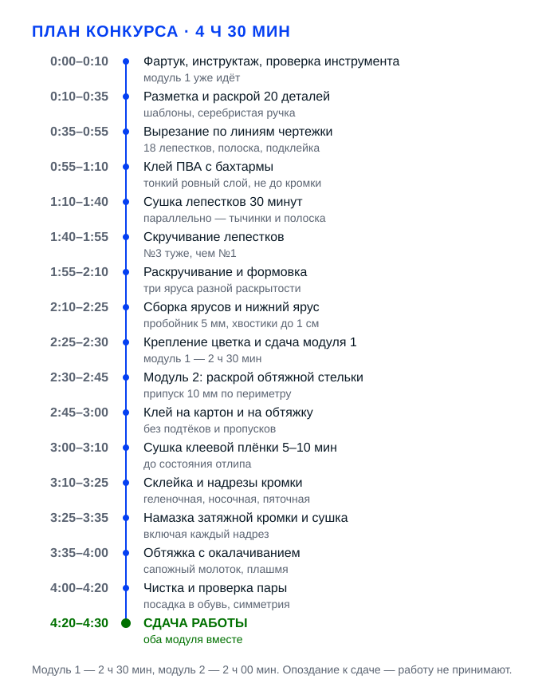
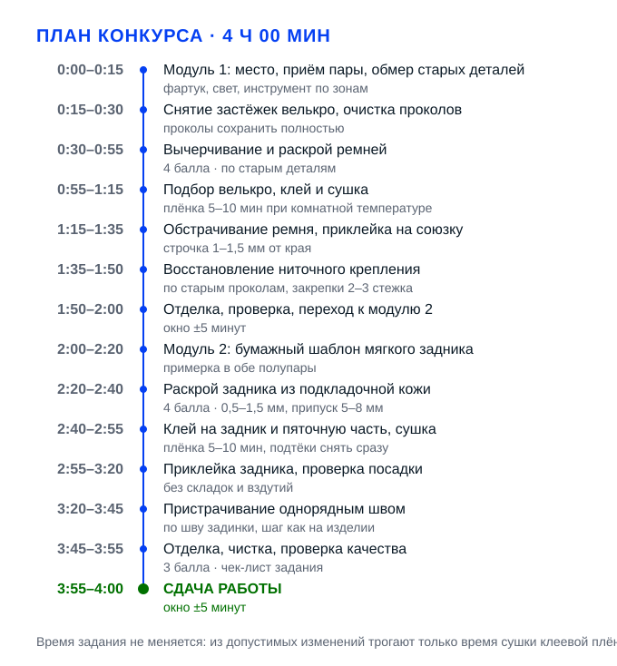
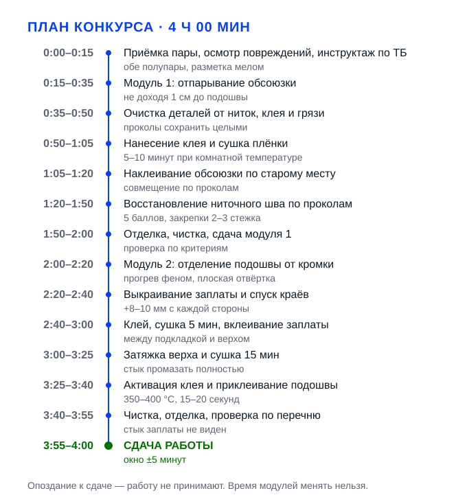

Ремонт обуви (Р)
Задания ниже — официальные файлы «Абилимпикс» (источник: abilympics-russia.ru), разложенные по категориям. Решения написаны по тексту задания, регламенту и критериям оценки; в них указано, что именно проверяет эксперт.
Школьник
14–16 лет, базовый уровень заданияВ официальном файле категории не разделены отдельными разделами — приводим задание целиком; различия по категориям смотрите в таблице модулей.
Пошаговое решение
Задание для школьников состоит из двух модулей и идёт 4 часа 30 минут: 2 часа 30 минут на цветок из натуральной кожи для женской обуви и 2 часа 00 минут на замену верхнего материала вкладной стельки с обтяжкой в паре детской обуви. Каждый модуль стоит 30 баллов, всего 60. В первом баллы держатся на геометрии: 5 дают за выкраивание восемнадцати лепестков по трём шаблонам, по 2–3 — за промазку клеем ПВА, скручивание, раскручивание и подклеивание ярусов, 5 — за готовый цветок по образцу. Во втором 5 баллов дают за соблюдение размеров выкроенных деталей, остальное — за надрезы кромки в геленочной, носочной и пяточной части, загибку, обтяжку с окалачиванием и чистоту работы. Ключевые цифры: припуск 10 мм, сушка плёнки 5–10 минут дважды, сушка лепестков 30 минут, отверстие 5 мм, хвостики до 1 см.

Задача 1. Подготовить рабочее место, инструмент и кожуМодуль 1 · 5 баллов из 30
Первый модуль начинается не с кожи, а с рабочего места: пока вы не надели фартук, не проверили нож, пробойник и клей и не разложили шаблоны, ни один балл ещё не заработан, но пять уже можно потерять. Речь идёт о двух критериях, которые идут через весь конкурс: «Соблюдение правил конкурса» — 2 балла и «Соблюдение техники безопасности при работе с инструментами и материалами» — 3 балла. Оба ставятся наблюдением, а не измерением, поэтому подготовка должна быть видимой: аккуратно, по порядку, без суеты и без брошенных на столе лезвий.
Действие 1.1. Войти на площадку по правилам
Шаг 1.1.1
Надеваем фартук из плотной ткани, завязываем его так, чтобы полы не свисали на колени, и убираем волосы под резинку или заколку — полностью, включая короткие пряди у висков, которые обычно и падают на стол при наклоне. Обувь на площадке закрытая, с сухой нескользящей подошвой, потому что пол у верстака засыпан обрезками кожи и крошкой от пробойника. Рукава подворачиваем или застёгиваем у запястья, часы и браслеты снимаем: они цепляются за край стола и за кожаные лепестки.
Фартук из плотной ткани — прямое требование раздела 3.1 конкурсного задания, а его наличие и опрятный вид входят в критерий «Соблюдение правил конкурса», 2 балла. Кроме того, клей ПВА, который вы будете размазывать кисточкой, с ткани снимается, а с форменной рубашки — нет, и к середине второго модуля участник без фартука выглядит так, будто работал в гараже.
Проверьте себя по трём признакам: фартук завязан и закрывает грудь и бёдра, волосы не выбиваются ни спереди, ни сзади, подошва сухая и не скользит на плитке. Попросите соседа посмотреть со спины — сам участник затылок не видит и почти всегда оставляет там пучок.
Самая частая ошибка — надеть фартук «попозже, когда начну клеить»: первый же контакт с клеем происходит на разметке, когда кисть касается промазанного лепестка, и пятно остаётся на одежде. Вторая — открытая обувь или шлёпанцы: при падении обрезка кожи подошва не защищает, а на конкурсе это ещё и нарушение, за которое снимают баллы.
Эксперт фиксирует внешний вид до старта, а дальше следит, остаётся ли фартук застёгнутым и чистым: расстёгнутые полы и пятна клея к концу модуля тоже считаются.
Шаг 1.1.2
Осматриваем руки: ногти коротко подстрижены, без лака и покрытия, украшения сняты. Клей ПВА и кожа — материалы, которые собирают пыль, а под кольцом остаётся слой, который обычным мытьём не снимается. Если у вас есть особенности зрения, сразу занимаем своё место и проверяем, что на столе работает лупа с подсветкой и включено дополнительное освещение: инфраструктурный лист для школьников предусматривает индивидуальное равномерное освещение не менее 300 люкс, и это ваше право, а не просьба.
Чистые руки — часть санитарных требований и того же критерия «Соблюдение правил конкурса» на 2 балла, но практическая польза больше: на жирных пальцах кожаная деталь оставляет след, а светлая бахтарма натуральной кожи темнеет от любого касания, и на готовом цветке это видно как грязные разводы. Свет в 300 люкс нужен, чтобы линия серебристой ручки читалась на тёмной коже, а не сливалась с ней: при слабом свете рез уходит в сторону.
Руки сухие и чистые, украшений нет, на рабочем месте включён свет, лупа на месте и настроена по высоте. Проверьте на глаз: линия серебристой ручки на самом тёмном куске кожи должна читаться без напряжения, если приходится щуриться — добавьте свет.
Самая частая ошибка — надеть фартук «попозже, когда начну клеить»: клей появляется уже на разметке, и пятно остаётся на одежде. Вторая — длинные ногти: они продавливают кожу при скручивании и оставляют заломы на лицевой стороне.
Эксперт проверяет руки и организацию места в начале модуля, а также отмечает, пользовался ли участник положенным оборудованием — лупой и дополнительным светом: выданное, но неиспользованное видно по тому, что участник работает вплотную к столу.
Шаг 1.1.3
Слушаем инструктаж по технике безопасности и сразу раскладываем инструмент так, как будете работать: нож и шило — справа, лезвием от себя, на подкладной доске; ножницы — в кольцах вверх; пробойник — в отдельной коробочке или на краю стола, а не в общей куче. Режем только на подкладной доске и только движением от себя, пальцы левой руки уводим за линию реза. Клей держим в баночке с закрытой крышкой, кисточку кладём на подставку, а не на кожу.
Техника безопасности — это отдельные 3 балла в первом модуле и ещё 3 балла во втором, то есть 6 из 60, и они снимаются мгновенно за один неосторожный жест. Правило «режем от себя» не про осторожность вообще, а про конкретный случай: кожа тонкая и податливая, нож идёт по ней легко и при избыточном усилии проскакивает линию и уходит в сторону руки, которая придерживает деталь.
Инструмент разложен по зонам, лезвия направлены от корпуса, доска под рукой, крышка клея закрыта, на столе нет обрезков в зоне реза. Пройдите взглядом по столу: если вам нужно тянуться через полстола за ножом — значит, зоны разложены неверно.
Класть нож лезвием к себе или оставлять его на краю стола, где он съезжает при движении локтя: падение ножа на ногу — это остановка работы и разбор с главным экспертом. Вторая ошибка — резать на весу или на картонной стельке: лезвие тупится, а кромка детали получается рваной.
Эксперт наблюдает за работой с ножом и шилом весь модуль, а не только на входе, и отдельно отмечает, лежит ли инструмент на своём месте, когда вы отвлеклись.
Действие 1.2. Проверить инструмент и материалы
Шаг 1.2.1
Проходим по набору на столе и называем себе каждую позицию: нож, ножницы, серебристая ручка, три вида шаблонов лепестков, шаблон полоски, шаблон подклейки, кисточка, клей ПВА, пробойник на 5 мм, сапожный молоток, подкладная доска, ветошь. Чего-то не хватает — поднимаем руку и говорим эксперту сразу, до старта: замена во время модуля идёт через главного эксперта и только если причина уважительная.
Перечень инструментов и расходных материалов — та часть задания, которую по разделу 2.4 менять нельзя даже на 30 процентов, поэтому набор на столе должен быть полным с первой минуты. Практическая сторона важнее формальной: пробойник нужен один раз, в самом конце сборки, но если его нет, отверстие в нижнем ярусе придётся прокалывать шилом, край получится рваным, и 2 балла за формирование нижнего яруса уйдут вместе с видом изнанки.
Все позиции списка на месте, инструмент исправен, шаблоны не размокали и не потеряли форму. Если шаблон помялся или обрезан по краю — просите новый до старта, потому что по мятому шаблону размер деталей уйдёт и вы не выполните критерий на 5 баллов.
Начинать работу, обнаружив, что нет пробойника или шаблона №3: в спешке их заменяют подручным, и вся геометрия цветка едет. Вторая ошибка — взять чужой инструмент с соседнего места: по правилам конкурса это нарушение, и разбираться будете вы, а не сосед.
Эксперт проверяет комплектность при выдаче и фиксирует обращения участника: спокойная и точная просьба засчитывается в пользу участника, паника и поиск виноватых — нет.
Шаг 1.2.2
Берём кусок натуральной кожи и определяем, где лицевая сторона, а где бахтарма: лицевая гладкая, с рисунком мереи, бахтарма ворсистая и мягкая, как замша. Дальше осматриваем весь кусок на просвет и на ощупь: ищем заломы, царапины, дыры, неравномерную окраску. Раскладывать шаблоны надо так, чтобы все дефекты остались в отходах, а не на лепестке. Найденные дефектные участки отмечаем карандашом на бахтарме, чтобы не забыть о них при раскладке.
Кожа — единственный материал, который в этом модуле нельзя заменить, и её качество прямо влияет на два самых дорогих критерия: выкраивание по трафаретам, 5 баллов, и формирование готового цветка, тоже 5 баллов. Залом на лепестке не расправится ни клеем, ни скручиванием: он проявится именно там, где лепесток изогнут, и эксперт увидит его на готовом изделии при сравнении с образцом.
Кожа однородная по толщине, без сквозных повреждений, бахтарма без плесени и осыпания, лицевая сторона без глубоких царапин. Проверьте руками: согните уголок куска — на сгибе не должно появиться белой полосы, которая говорит о пересушенной коже.
Кроить «как получится», не глядя на дефекты: половина лепестков потом идёт в брак, а времени на повторный раскрой в модуле на 2 часа 30 минут уже нет. Вторая ошибка — взять слишком толстую кожу: лепесток не скрутится в тонкую трубочку и не раскроется в форму, край будет топорщиться.
Эксперт смотрит на подготовку материала в начале модуля и возвращается к ней при оценке эстетического вида: однородность цвета всех лепестков одного цветка — 3 балла.
Шаг 1.2.3
Проверяем клей ПВА: он должен быть свежим, однородным, без плёнки и комков сверху, по консистенции — как густые сливки, чтобы стекал с кисточки медленно, а не лился струёй. Кисточку берём мягкую, с ровным ворсом, промываем и просушиваем, если она была в воде: мокрая кисточка разбавляет клей у кромки, и там он перестаёт держать. Пробойник проверяем на обрезке кожи — отверстие должно пробиваться с одного удара и быть круглым.
Клей в этом модуле отвечает за 2 балла за промазывание лепестков и ещё за 3 балла за подклеивание лепестков к основанию, то есть пять баллов зависят от одной баночки. Слишком жидкий клей впитывается в бахтарму и не образует плёнку, лепесток отходит от основания через десять минут; слишком густой ложится буграми и не даёт тонкого ровного слоя, которого требует задание.
Клей однородный, без комков, кисточка сухая и чистая, пробойник пробивает круглое отверстие 5 мм на обрезке без заусенцев, молоток сидит на ручке плотно. Капните клей на обрезок и размажьте: слой должен лечь ровно и не скатываться в катышки.
Работать засохшим клеем из прошлой смены: он не образует плёнку, и лепестки начнут отваливаться уже при сборке, а вы будете искать причину в форме. Вторая ошибка — бить пробойником по столу без подкладной доски: портится и стол, и режущая кромка пробойника, и отверстие выходит овальным.
Эксперт проверяет клей и кисточку в начале модуля и следит, закрыта ли баночка между операциями: открытый клей на всё время работы — нарушение технологии, которое видно и по запаху, и по корке на поверхности.
Действие 1.3. Разложить шаблоны и разметить кожу
Шаг 1.3.1
Кладём кусок кожи лицевой стороной вверх и прижимаем ладонью, чтобы он не сдвигался. Шаблон ставим на материал и обводим серебристой ручкой — именно ею, потому что на тёмной и на рыжей коже обычная шариковая ручка не видна. Ручку держим почти вертикально, ведём по кромке шаблона одним движением, без отрыва, и второй рукой придерживаем шаблон за середину, а не за край, который он и норовит провернуть.
Разметка — начало критерия «Выкраивание деталей по трафаретам» на 5 баллов: если линия дрожит, деталь выйдет не по шаблону, и дальше ни скручивание, ни раскручивание не дадут нужной формы, потому что все восемнадцать лепестков в цветке работают как один ярус. Серебристая ручка указана в инструкционных указаниях задания, и её след не переносится на лицевую сторону при скручивании, в отличие от жирной пасты.
Контур замкнут, линия одна, без двойных обводок, шаблон не съехал в процессе. Проверьте на просвет: линия должна быть видна по всему периметру, без пропусков на закруглениях — именно там рука замедляется и линия теряется.
Обводить шаблон, держа его за край: он проворачивается под пальцами, контур получается восьмёркой, и деталь выходит кособокой. Вторая ошибка — обвести деталь дважды, «чтобы линия была толще»: по толстой линии невозможно резать точно, вы уйдёте либо внутрь, либо наружу на полтора миллиметра.
Эксперт подходит к столу в момент разметки и смотрит, как лежит шаблон и чем участник обводит: это первая видимая часть критерия на 5 баллов. Отдельно он отмечает, держит ли участник шаблон за середину: смещённый шаблон виден по двойному контуру.
Шаг 1.3.2
Раскладываем все двадцать деталей сразу: шесть лепестков №1, шесть лепестков №2, шесть лепестков №3, одну полоску и одну подклейку. Раскладку ведём от крупных деталей к мелким, укладывая шаблоны плотно, но с зазором в 4–5 мм между контурами, чтобы ножницы или нож не задели соседнюю деталь. Мелкие лепестки №3 ставим в промежутки между крупными — так из куска выходит вся раскладка без перерасхода.
Количество деталей жёстко задано заданием, и именно оно определяет объём цветка: шесть лепестков в каждом из трёх размеров дают три полных яруса. При этом в разделе о 30-процентном изменении прямо сказано, что эксперты могут изменить количество лепестков и форму цветка, поэтому раскладку надо начинать не с «как я привык», а с чтения задания на площадке: цифры могли поменять за день до конкурса.
На столе лежат двадцать размеченных контуров, все шаблоны использованы, зазоры между контурами не меньше 4 мм, ни один контур не выходит за край куска. Пересчитайте вслух по группам — шесть, шесть, шесть, один, один: это занимает десять секунд и снимает половину ошибок.
Размечать «по ходу», вырезая каждую деталь сразу: к третьему лепестку выясняется, что на оставшемся куске не хватает места под полоску, и её приходится кроить из обрезков, сшивая по шву. Вторая ошибка — ставить шаблоны вплотную: ножницы при вырезании заминают край соседней детали.
Эксперт оценивает рациональность раскладки при раскрое: на категории школьников за это отдельно не начисляют, но небрежная раскладка видна и переносится в оценку выкраивания по трафаретам.
Шаг 1.3.3
Проверяем разметку до первого реза: накладываем шаблон обратно на контур и смотрим, совпадает ли линия по всему периметру. Отдельно проверяем направление: лепесток должен лежать так, чтобы при скручивании кожа гнулась поперёк направления тяги, а не вдоль — тогда он держит форму, а не распрямляется через минуту. Если направление тяги не читается на глаз, слегка потяните кусок в двух направлениях: кожа тянется сильнее поперёк тяги.
Проверка перед резом — самый дешёвый способ сохранить 5 баллов за выкраивание: исправить линию ручкой можно за секунды, а перекроить деталь уже нельзя, кусок кожи на площадке один. Направление тяги — не формальность: лепесток, скроенный вдоль, при раскручивании распрямляется обратно, и цветок к моменту оценки выглядит плоским, хотя вы всё сделали по инструкции.
Все контуры совпадают с шаблонами, линия не двойная, детали ориентированы одинаково относительно направления тяги. Возьмите один размеченный лепесток и согните его пальцами: если он пружинит и норовит разогнуться — направление выбрано неверно.
Размечать детали в разных направлениях, «чтобы влезло»: половина лепестков потом не держит форму, и цветок разваливается по ярусам. Вторая ошибка — проверять только первый контур и считать, что остальные такие же: шаблон мог сдвинуться на последних деталях, когда кусок кожи стал меньше.
Эксперт смотрит на разметку до начала реза и потом сравнивает готовые лепестки с шаблонами: совпадение по размеру — это те самые 5 баллов, которые нельзя добрать ничем другим.
Задача 2. Изготовить цветок из натуральной кожиМодуль 1 · 25 баллов из 30
Основная часть первого модуля: из двадцати выкроенных деталей собрать цветок, который должен совпасть с образцом. Здесь сосредоточена почти вся оценка — 5 баллов за выкраивание по трафаретам, по 2–3 балла за промазку, скручивание, раскручивание, подклеивание и нижний ярус и 5 баллов за формирование готового цветка. Работа идёт строго по цепочке: раскрой, клей, сушка 30 минут, скрутка, раскрутка, сборка ярусов, изнанка. Нарушение порядка — например, скрутка недосушенных лепестков — обнуляет результат предыдущих шагов, поэтому модуль на 2 часа 30 минут планируется по операциям.
Действие 2.1. Выкроить детали по шаблонам
Шаг 2.1.1
Режем строго по линии чертежки: ножницы ведём так, чтобы линия оставалась на детали, а не на отходе, и не срезаем её «до чистого». Крупные лепестки удобно резать ножницами от основания к кончику длинными движениями, не закрывая их полностью — так кромка не сминается. Мелкие детали и внутренние закругления режем короткими движениями, разворачивая деталь, а не ножницы.
Это ключевой момент критерия «Выкраивание деталей по трафаретам», 5 баллов: оценивается не скорость, а совпадение детали с шаблоном. Срезанная линия — это потеря полутора-двух миллиметров по периметру, а на лепестке №3, который сам по себе небольшой, такая усадка видна сразу. Кроме того, ровная кромка нужна для следующего шага: при скручивании неровный край заламывается и даёт залом на лицевой стороне.
Готовая деталь ложится на шаблон и совпадает с ним по всему контуру, без выступов и подрезов. Проверьте кромку ногтем: она должна быть гладкой, без «ступенек» от коротких щелчков ножницами — ступеньки потом видны на лепестке как зазубрины.
Резать «на глаз», ориентируясь на середину линии: половина деталей выходит на полтора миллиметра меньше, и в сборе цветок получается рыхлым, с зазорами между ярусами. Вторая ошибка — резать тупыми ножницами: кожа не разрезается, а зажимается, кромка выходит волнистой, и её уже не исправить.
Эксперт сравнивает три-четыре вырезанные детали с шаблонами прямо у стола, иногда с линейкой: расхождение больше миллиметра — минус балл за каждую проверенную группу.
Шаг 2.1.2
Если работаете ножом, держите его вертикально, лезвие ведите от себя и чуть в сторону, прижимая деталь ладонью левой руки за пределами линии реза. Режем на подкладной доске, а не на столе: доска принимает кончик лезвия и не даёт ему уйти в сторону на закруглениях. Углы и закругления, где нож рвёт кожу, доводим ножницами — это быстрее и чище, чем разворачивать нож на месте.
Нож даёт более ровную кромку на прямых участках, но на закруглениях требует навыка: при развороте лезвия на месте кожа подминается, и на бахтарме остаётся след, который на тонкой коже превращается в надрыв. Комбинация «нож на прямых, ножницы на закруглениях» — это и есть рациональный приём, который экономит время в модуле на 2 часа 30 минут.
Кромка ровная по всей длине, на бахтарме нет тёмных подмятых полос, деталь не имеет надрывов у основания. Проведите пальцем по кромке: она должна быть одинаковой на всём протяжении, без утоньшений, где нож шёл с наклоном.
Вести нож с наклоном, «как карандаш»: кромка получается скошенной, сверху деталь шире, чем снизу, и при склейке лепестки встают с перекосом. Вторая ошибка — резать на картонной стельке: лезвие проваливается в её толщину, и кромка выходит рваной.
Эксперт смотрит на инструмент в руке и на характер кромки: рваная кромка сразу читается как «не умеет работать с ножом», и это отражается на эстетическом виде, 3 балла.
Шаг 2.1.3
Пересчитываем готовые детали и раскладываем их по группам: лепестки №1 — шесть штук, №2 — шесть, №3 — шесть, полоска — одна, подклейка — одна. Каждую группу укладываем отдельной стопкой, лицевой стороной вверх, и накрываем листом бумаги, чтобы кожа не собирала пыль и клей с соседних операций. Детали одной группы должны быть одинаковыми — если одна вышла заметно шире, откладываем её в сторону и выкраиваем замену из остатка.
Комплектность — это не формальность: цветок собирается ярусами, и недостача одного лепестка в ряду даёт видимую пустоту, которую невозможно замаскировать при сборке. Разложенные по группам детали экономят время на следующем шаге, где лепестки промазываются клеем подряд, и вы не путаете №1 с №2 на глаз, когда они уже покрыты клеем и блестят.
В каждой стопке ровно шесть деталей, полоска и подклейка на месте, все детали одной группы совпадают по размеру при наложении друг на друга. Разложите стопки по возрастанию размера слева направо — так вы сразу увидите, если какая-то деталь выбивается из ряда.
Сваливать все восемнадцать лепестков в одну кучу: на этапе промазки клеем вы путаете размеры, и в нижний ярус, где нужны самые крупные лепестки, попадают мелкие. Вторая ошибка — не заметить, что один лепесток выкроен с перекосом, и обнаружить это только при сборке, когда клей уже нанесён.
Эксперт пересчитывает детали вместе с участником перед промазкой клеем: это часть критерия за выкраивание и заодно проверка организации работы. Если детали свалились в общую кучу, он просит разложить их по размерам заново, и это время уходит из модуля.
Действие 2.2. Промазать лепестки клеем ПВА и высушить
Шаг 2.2.1
Берём кисточку, окунаем в клей на треть ворса и снимаем излишек о край баночки, чтобы с кисточки не капало. Лепесток кладём бахтармяной стороной вверх и промазываем тонким ровным слоем от середины к краям, не доводя клей до кромки на 1–2 мм: на кромке он выступит при скручивании и запачкает лицевую сторону. Движения кисточкой — в одном направлении, без возвратов, чтобы слой не скатывался в катышки.
Промазывание кисточкой — отдельный критерий на 2 балла, и задание требует именно ровного тонкого слоя с бахтармяной стороны. Почему с бахтармы: ворсистая поверхность впитывает клей и держит его как грунт, а на лицевой гладкой стороне плёнка не схватывается и остаётся липкой. Почему не до кромки: при скручивании клей из-под пальцев выдавливается наружу, и цветок получается с грязными разводами по лицевой стороне.
Слой ровный, полупрозрачный, без пропусков и без лужиц, кромка по периметру сухая на 1–2 мм. Посмотрите на лепесток под углом к свету: слой должен блестеть одинаково по всей площади — там, где блеска нет, клей не лёг, там, где блестит сильнее, — излишек.
Макать кисточку в банку и вести по лепестку «мокрой» кистью: клей ложится толстым слоем, лепесток размокает и рвётся по волокну при скручивании. Вторая ошибка — промазывать все восемнадцать лепестков подряд: первые подсыхают неравномерно и липнут к пальцам.
Эксперт подходит в момент промазки и смотрит на кисточку и на слой: толстый слой с потёками — прямой минус по критерию, даже если цветок потом собран правильно.
Шаг 2.2.2
Промазываем лепестки партиями по шесть штук — по одной группе размера, начиная с самых крупных, потому что они сохнут дольше. Каждую готовую деталь сразу укладываем на сушильную поверхность: на лист чистой бумаги или на доску, бахтармой вверх, в один слой, с промежутком в пару сантиметров, чтобы детали не слиплись краями. Полоску и подклейку промазываем последними: им нужен клей перед самой сборкой.
Партиями по шесть работать нужно потому, что клей ПВА схватывается по поверхности за несколько минут, и лепесток, промазанный десять минут назад, уже не примет форму так, как свежий. Полоска и подклейка идут последними по той же логике: они участвуют в сборке основания, и держать их сухими до нужного момента удобнее, чем размачивать повторно.
Детали лежат в один слой, не соприкасаясь, клей на них ещё влажный и равномерный. Проверьте рукой на весу: лепесток должен быть чуть липким с бахтармы и не пачкать пальцы при касании лицевой стороны. Если клей уже начал подсыхать по краям, деталь переворачиваем и промазываем заново.
Складывать промазанные лепестки стопкой: они слипаются, и разъединять их приходится силой, с заломами на бахтарме и потерей формы. Вторая ошибка — промазывать лепесток, держа его за лицевую сторону: на лицевой остаётся отпечаток пальца, который на светлой коже виден как тёмное пятно.
Эксперт оценивает и аккуратность раскладки на сушке: детали, лежащие внахлёст, — это уже нарушение технологии, которое видно без вопросов. Он же смотрит, не сушатся ли лепестки на сквозняке: от этого кожа коробится по краю и теряет форму.
Шаг 2.2.3
Сушим лепестки не меньше 30 минут при комнатной температуре, в один слой, бахтармой вверх, в месте, где нет сквозняка и прямого солнца. Накрывать детали ничем нельзя: под плёнкой или бумагой клей не отдаёт влагу и остаётся липким. Тридцать минут — это не «примерно», а время из инструкционных указаний задания, и его нужно планировать заранее: пока лепестки сохнут, вы готовите тычинки и полоску, а не сидите над ними.
Просушенная клеевая плёнка — условие того, что лепесток держит форму. На недосушенном лепестке клей работает как смазка: скрученная трубочка раскручивается обратно, и форма, которую вы придали, исчезает за минуту. Пересушенный лепесток, наоборот, становится жёстким и ломается по сгибу, поэтому 30 минут — это рабочее окно, а не минимальный порог, который можно сократить.
Клей не липнет к пальцу при лёгком касании, плёнка прозрачная, лепесток гнётся и держит изгиб. Если при сгибе слышен хруст — кожа пересушена, и такой лепесток лучше пустить на внутренний ярус, где изгиб мягче.
Начинать скручивание через десять минут «чтобы не терять время»: клей не схватился, лепесток прилипает к пальцам и разваливается, а вы тратите ещё десять минут на переделку. Вторая ошибка — сушить на батарее или феном: кожа сжимается, лепесток уменьшается в размере и коробится.
Эксперт проверяет сушку по факту: если участник начал скручивать раньше времени, это видно по липким пальцам и по тому, что лепестки не держат форму на этапе раскручивания.
Действие 2.3. Скрутить и раскрутить лепестки, придать форму
Шаг 2.3.1
Берём просушенный лепесток за основание, бахтармой внутрь, и скручиваем в трубочку от основания к кончику: двумя пальцами придерживаем низ, а большим и указательным ведём по детали, закручивая её на три-четыре оборота. Скручиваем плотно, но без рывков, чтобы кожа не треснула по лицевой стороне. Лепестки №1 скручиваем свободнее, №3 — туже, потому что мелкие лепестки идут во внутренний ярус и держат самый крутой изгиб.
Скручивание — отдельный критерий на 2 балла, и это первая операция, где проявляется разница между размерами лепестков. Скручивание нужно не само по себе: оно задаёт коже память формы, после которой лепесток раскрывается в объёмную чашу, а не остаётся плоским куском. Плотность скручивания напрямую определяет, насколько раскрытым получится лепесток на следующем шаге.
Лепесток скручен в ровную трубочку без перекосов, кромки идут параллельно, на лицевой стороне нет трещин и белых заломов. Разверните один лепесток и посмотрите на след скрутки: он должен быть равномерным по всей длине, без участков, где кожа просто согнута пополам.
Скручивать лепесток, держа его за кончик: узкая часть рвётся первой, и деталь уходит в отход, а заменить её нечем — кусок кожи уже раскроен. Вторая ошибка — скручивать все лепестки одинаково плотно: тогда цветок получается плоским блюдцем, без разницы между ярусами, и 3 балла за раскручивание теряются.
Эксперт смотрит на характер скрутки у стола и потом оценивает, насколько раскрылись лепестки: тугая одинаковая скрутка читается как непонимание конструкции цветка.
Шаг 2.3.2
Раскручиваем лепесток в обратную сторону, но не до плоскости: пальцами раскрываем трубочку в чашу, придерживая основание, и отгибаем верхний край наружу. Форму задаём по образцу: у внешних лепестков край отогнут сильнее, у внутренних — почти вертикально. Движение идёт от основания к краю, и в конце лепесток проглаживаем подушечкой большого пальца изнутри, чтобы изгиб распределился по всей площади, а не собрался в одну складку.
Раскручивание — самый дорогой критерий после сборки: 3 балла, и именно здесь цветок приобретает объём. Задание формулирует это как «раскручиваем лепестки, придавая им форму», то есть оценивается не факт раскручивания, а полученная форма. Разная степень раскрытия по ярусам — это и есть конструкция живого цветка: внутренние лепестки стоят, внешние лежат чашей.
Лепесток держит заданный изгиб без поддержки, край отогнут равномерно по всей дуге, на лицевой стороне нет острых складок. Поставьте лепесток на стол основанием вниз: он должен стоять как чашка, а не заваливаться набок.
Раскручивать до плоского состояния: лепесток распрямляется полностью, и цветок теряет объём, за который дают 3 балла. Вторая ошибка — гнуть лепесток в одной точке: на лицевой стороне остаётся резкий перелом, кожа светлеет по линии сгиба, и это видно на готовом изделии.
Эксперт сравнивает форму раскрытых лепестков с образцом: оценивается не только объём, но и равномерность — один заломленный лепесток в ряду снижает общую оценку.
Шаг 2.3.3
Разводим лепестки по размерам и раскрываем их по-разному: №1 — самые крупные, у них край отогнут почти горизонтально, чаша широкая; №2 — средние, край поднят под углом примерно в сорок пять градусов; №3 — мелкие, они почти не раскрываются и остаются полузакрытыми вокруг тычинок. Раскладываем готовые лепестки обратно по группам, чтобы на сборке не искать нужный размер на ощупь.
Три размера в задании нужны именно для того, чтобы цветок был объёмным и многоярусным: если раскрыть все лепестки одинаково, получится не цветок, а розетка. Разная степень раскрытия — это та самая «определённая форма» из инструкционных указаний, за которую начисляют 3 балла, и одновременно условие эстетического вида на 3 балла.
В каждой группе лепестки раскрыты одинаково между собой и по-разному относительно других групп, стопки не перемешаны. Соберите по одному лепестку каждого размера в руку: должна читаться разница в раскрытии, а не три одинаковые чашки.
Раскрывать все лепестки по одному шаблону «чтобы ровно»: ровность здесь не нужна, и цветок получается плоским блином. Вторая ошибка — раскрыть мелкие лепестки сильнее крупных: внутренний ярус разваливается, и тычинки остаются открытыми, что не соответствует образцу.
Эксперт раскладывает готовые лепестки по размерам при оценке: перепутанные группы видны сразу и стоят баллов и за раскручивание, и за эстетику. Если стопки перемешаны, он просит разложить их заново, и это время тоже уходит из модуля.
Шаг 2.3.4
Откладываем готовые лепестки в сторону и проверяем форму всей партии: берём по одному лепестку каждого размера и сравниваем между собой и с образцом. Если какой-то лепесток распрямился, пока вы работали с остальными, — возвращаем ему изгиб, слегка подкрутив основание пальцами. Помятые или надорванные лепестки откладываем в брак и, если позволяет остаток кожи, выкраиваем замену, пока не началась сборка.
Проверка партии перед сборкой экономит самые дорогие минуты: переделывать лепесток, уже вклеенный в ярус, невозможно — придётся разбирать весь цветок. Форма имеет свойство «садиться»: кожа под собственным весом постепенно раскрывается, и лепесток, который держал форму сразу после раскручивания, через десять минут становится плоским.
Все лепестки в группе одинаковы по раскрытию, ни один не распрямился, на лицевой стороне нет заломов и пятен клея. Пересчитайте партию ещё раз: шесть, шесть, шесть — после раскручивания детали легко теряются среди обрезков.
Собирать цветок из непроверенных лепестков: один распрямившийся лепесток в нижнем ярусе виден как провал, и переделать его уже нельзя. Вторая ошибка — выбрасывать надорванный лепесток, не проверив остаток кожи: деталь №3 кроится из самого маленького обрезка, и замена почти всегда находится.
Эксперт подходит к столу перед сборкой и смотрит на разложенные по группам лепестки: порядок на столе читается как понимание последовательности операций.
Действие 2.4. Собрать основание цветка и первые ярусы
Шаг 2.4.1
Делаем основание: полоску кожи кладём бахтармой вверх, наносим клей кисточкой на её середину узкой полосой по всей длине, укладываем на клей тычинки пучком так, чтобы их кончики смотрели в одну сторону и торчали из полоски на 10–15 мм, и складываем полоску пополам вдоль, зажимая основания тычинок внутри. Проглаживаем сгиб пальцами и даём клею схватиться под грузом — небольшим бруском или просто под ладонью на полминуты.
Полоска с тычинками — это основание цветка, вокруг которого собираются все ярусы, и от него зависит геометрия всей сборки. Тычинки должны быть зажаты по всей длине, а не за кончик: если они держатся одним краем, при первой же проверке прочности пучок выворачивается. Клей по середине полоски, а не по всей ширине, нужен для того, чтобы края сложенной полоски остались чистыми и не липли к лепесткам при сборке.
Тычинки сидят в полоске плотно, не проворачиваются при потягивании за кончик, сгиб ровный, клей не выступил за края полоски. Проверьте, что все кончики смотрят в одну сторону и пучок не разъезжается веером в разные стороны.
Наносить клей на всю ширину полоски: при складывании он выдавливается наружу, и полоска приклеивается к пальцам, а потом к первому же лепестку. Вторая ошибка — вложить тычинки на уже подсохший клей: они держатся на честном слове и выпадают при сборке, оставляя в цветке пустую середину.
Эксперт проверяет основание перед сборкой ярусов и оценивает его в критерии за формирование готового цветка, 5 баллов: кривое основание тянет за собой перекос всех ярусов.
Шаг 2.4.2
Собираем первый ряд: на основание, чуть ниже сгиба полоски, наносим клей тонкой полосой по кругу и приклеиваем лепестки №1 — шесть штук, равномерно по окружности. Каждый лепесток прижимаем основанием к полоске на 10–15 секунд, держа его за раскрытую часть, чтобы не смять форму. Ставим лепестки так, чтобы их основания слегка перекрывали друг друга, — тогда ряд получается без просветов.
Подклеивание лепестков к основанию — 3 балла, и это первый ярус, по которому видно, ровно ли собрана середина. Перекрытие оснований нужно потому, что кожа при высыхании клея садится на доли миллиметра, и при сборке встык между лепестками появляются щели, через которые видно полоску. Шесть лепестков делят окружность на равные сектора — это удобно контролировать: расстояние между кончиками должно быть одинаковым.
Лепестки стоят на одном уровне, расстояния между кончиками равны, просветов до полоски нет, ни один лепесток не сидит выше или ниже остальных. Посмотрите на цветок сверху: первый ряд должен читаться как ровная звезда, а не как сдвинутый веер.
Прижимать лепесток за раскрытый край: он сминается, изгиб теряется, и лепесток в ряду выглядит приплюснутым. Вторая ошибка — клеить лепестки по одному и сразу переходить к следующему, не выдержав прижим: клей не успевает схватиться, и лепесток проворачивается вокруг своей оси.
Эксперт смотрит на первый ряд при оценке подклеивания: равномерность по окружности — главный визуальный признак, по которому ставят баллы. Отдельно проверяется, не приклеены ли лепестки к тычинкам: это видно по деформированному пучку в центре.
Шаг 2.4.3
Второй ряд собираем из лепестков №2 в шахматном порядке: каждый лепесток встаёт в промежуток между двумя лепестками первого ряда, со сдвигом на половину шага. Клей наносим не на полоску, а на основание лепестка первого ряда, к которому крепится новый, — так второй ярус держится не на тонкой полоске, а на всей площади контакта. Прижим тот же: 10–15 секунд на каждый лепесток, держа за раскрытую часть.
Шахматный порядок — не украшение, а конструкция: лепестки второго ряда перекрывают стыки первого и закрывают полоску основания, поэтому цветок выглядит плотным. Клей на основание нижнего лепестка, а не на полоску, даёт вдвое большую площадь склейки, и именно это удерживает ярус, когда цветок приклеивают на обувь и он работает на отрыв.
Лепестки второго ряда стоят в промежутках, не совпадают с первым рядом по углу, расстояние между кончиками одинаковое. Проверьте нажимом: лепесток не должен отходить от основания при лёгком потягивании вверх.
Ставить второй ряд «в тот же угол», что и первый: лепестки ложатся друг на друга, ярус получается вдвое толще в одних местах и пустым в других. Вторая ошибка — клеить второй ряд на полоску, а не на лепестки: площадь склейки маленькая, и ярус отходит при первой же нагрузке.
Эксперт проверяет плотность сборки, слегка отгибая лепестки: отклеившийся ярус — это минус и по подклеиванию, и по качеству готового цветка. Он же смотрит на просвет между рядами: сквозная щель до полоски читается как недоделанный ярус.
Шаг 2.4.4
Третий, внутренний ряд собираем из мелких лепестков №3: они почти не раскрыты и ставятся вокруг тычинок вплотную к полоске, с небольшим наклоном внутрь, чтобы прикрыть основания тычинок. Клеим их последними, когда первые два ряда уже держатся, и работаем пинцетом или двумя пальцами, потому что деталь маленькая и легко приклеивается к пальцу вместо цветка.
Внутренний ряд заканчивает объём: без него тычинки стоят открыто, и цветок выглядит недоделанным, хотя все восемнадцать лепестков израсходованы. Наклон внутрь нужен для того, чтобы мелкие лепестки не разваливались в стороны и держали форму чаши — именно этот ряд эксперт видит первым, когда смотрит на цветок сверху.
Мелкие лепестки стоят плотно вокруг тычинок, без зазоров до второго ряда, тычинки не вывернуты и не приклеены к лепесткам. Посмотрите на цветок сбоку: внутренний ряд должен быть выше внешнего и образовывать заметный подъём к центру.
Ставить мелкие лепестки слишком далеко от центра: между вторым и третьим рядом появляется провал, и цветок выглядит как две отдельные розетки. Вторая ошибка — приклеить лепесток №3 к тычинкам: пучок деформируется, и восстановить его уже нельзя.
Эксперт оценивает готовый цветок сверху и сбоку: наличие трёх читаемых ярусов — прямой признак правильной сборки, за которую дают 5 баллов за формирование.
Действие 2.5. Сформировать нижний ярус и закрыть изнанку
Шаг 2.5.1
Собираем нижний ярус отдельно от цветка: берём оставшиеся лепестки №1 и склеиваем их между собой у основания, накладывая один на другой с перекрытием в 5–7 мм, пока не получится замкнутое кольцо-розетка. Клей наносим на основание каждого лепестка с бахтармы, прижимаем по 10–15 секунд и укладываем кольцо под груз, чтобы оно не свернулось, пока сохнет.
Нижний ярус — 2 балла по критерию «Формирование нижнего яруса лепестков из деталей», и он выполняет две роли: держит весь цветок снизу и закрывает изнанку сборки. Склеивать его отдельным кольцом, а не подклеивать по одному к готовому цветку, нужно потому, что кольцо задаёт плоскую посадочную площадку: именно этой плоскостью цветок ляжет на обувь, и от неё зависит, встанет ли украшение ровно.
Кольцо замкнуто, лепестки перекрываются равномерно, плоскость посадки ровная — кольцо не должно качаться на столе. Проверьте, положив его на ровную поверхность: если качается, значит, один лепесток приклеен с наклоном, и его надо подклеить заново.
Склеивать лепестки встык, без перекрытия: кольцо разваливается при первом же изгибе, потому что кожа на кромке не держит клей. Вторая ошибка — собирать кольцо на весу: лепестки схватываются под углом, и посадочная плоскость получается седловиной.
Эксперт оценивает нижний ярус отдельно, 2 балла, и смотрит именно на замкнутость кольца и на ровную посадку: по этому ярусу цветок крепят на обувь. Кольцо, которое качается на столе, он отмечает сразу: посадочная плоскость должна быть ровной до приклеивания.
Шаг 2.5.2
Находим середину нижнего яруса — складываем кольцо пополам и отмечаем точку пересечения, либо прикладываем линейку по двум противоположным швам. Ставим пробойник на 5 мм строго вертикально в эту точку и пробиваем отверстие одним ударом молотка по подкладной доске. Пробойник держим двумя пальцами за корпус, а не за ручку, чтобы он не провернулся в момент удара.
Отверстие 5 мм — это размер из инструкционных указаний задания, и он рассчитан на то, чтобы в него прошли хвостики полоски, сложенной пополам. Отверстие должно быть ровно в середине: если оно смещено, цветок перекосится на обуви, потому что именно через него проходит ось крепления. Вертикальный удар нужен для чистого края — наклонный пробойник вырубает овал и рвёт кожу по краю.
Отверстие круглое, ровно по центру, диаметр 5 мм, край чистый, без рваных заусенцев и трещин вокруг. Проверьте линейкой от края кольца до отверстия с двух сторон: расстояния должны быть равны. Край должен быть плотным: если он разлохматился, ярус в этом месте разойдётся при натяжении.
Бить пробойником без подкладной доски или на весу: кожа прогибается, отверстие выходит овальным, а край рвётся, и ярус в этом месте расходится. Вторая ошибка — пробивать отверстие до склейки кольца: лепестки разъезжаются, и совместить их обратно уже невозможно.
Эксперт смотрит на отверстие при оценке нижнего яруса: рваный край и смещение от центра видны сразу и стоят части баллов. Он проверяет и диаметр: отверстие меньше 5 мм не пропустит сложенную полоску, и её придётся протаскивать силой, разрывая кожу.
Шаг 2.5.3
Хвостики полоски, которые остались торчать из основания, протаскиваем через отверстие с лицевой стороны на изнаночную, разводим их в разные стороны и приклеиваем к изнанке нижнего яруса. Концы обрезаем до 1 см — ровно столько, чтобы они держались, но не выступали за край кольца. Прижимаем хвостики пальцем через бумажную салфетку, чтобы не оставить на коже жирный след.
Хвостики — это единственное механическое крепление основания к нижнему ярусу, и их длина до 1 см задана в задании. Слишком длинные концы выступают за край кольца и мешают приклеить цветок к обуви; слишком короткие не дают площади склейки, и при первой нагрузке основание вырывается из отверстия вместе с тычинками. Разведённые в стороны хвостики работают как анкер: они не проходят обратно через отверстие.
Хвостики обрезаны до 1 см, разведены в разные стороны, приклеены к изнанке и не выступают за кольцо. Потяните цветок вверх, держа за нижний ярус: основание не должно выходить из отверстия. Концы должны сидеть плотно: если хвостик шевелится под пальцем, клей не взялся.
Обрезать хвостики под корень: держатся только за счёт клея на торце, и основание вылетает при первой же попытке поправить цветок на обуви. Вторая ошибка — оставить хвостики длинными и не приклеить их: они торчат из-под кольца и видны на готовом изделии как обрезки.
Эксперт проверяет крепление, приподнимая цветок за лепестки: выпавшее основание — это потеря баллов и за нижний ярус, и за готовый цветок. Отдельно он смотрит, не торчат ли хвостики из-под подклейки: это видно на изнанке.
Шаг 2.5.4
Закрываем изнанку: на изнаночную сторону нижнего яруса наносим клей по периметру, не доходя до отверстия, и приклеиваем подклейку — деталь, выкроенную по шаблону. Разглаживаем её от середины к краям, чтобы не осталось воздушных пузырей, и укладываем цветок под груз на несколько минут. Подклейка должна закрыть хвостики и всё, что видно с изнанки, полностью.
Подклейка — это опрятная изнанка, и хотя отдельного балла за неё нет, она входит в критерий «Формирование готового цветка» на 5 баллов: эксперт обязательно переворачивает изделие и смотрит, что снизу. Кроме того, подклейка выравнивает посадочную плоскость, и цветок приклеивается к обуви всей площадью, а не отдельными лепестками — это заметно по тому, как он держится через час носки.
Подклейка закрывает изнанку полностью, без пузырей и складок, края не выступают за кольцо, хвостики под ней не прощупываются. Проведите пальцем по изнанке: поверхность должна быть ровной, без бугров от клея.
Клеить подклейку на жидкий клей и сразу прижимать: кожа намокает и идёт волной, изнанка получается бугристой. Вторая ошибка — приклеить подклейку поверх хвостиков, не разведя их: под ней остаётся бугор, и цветок на обуви стоит с перекосом.
Эксперт переворачивает готовый цветок и осматривает изнанку: это один из моментов, где видно, доведена ли работа до конца. Бугры от клея и непроклеенные края подклейки он отмечает как нарушение технологии сборки.
Задача 3. Закрепить украшение на обуви и сдать первый модульМодуль 1 · эстетика и сдача
Финальные шаги первого модуля: цветок приклеивается на женскую обувь и предъявляется эксперту. Здесь добираются последние баллы модуля — 3 балла за эстетический вид обуви с украшением и часть баллов за соблюдение правил конкурса, потому что сдача происходит в отведённое время. Ошибка на этом этапе особенно обидна: изделие уже собрано, и портит его одно неверное движение — лишняя капля клея, сдвиг цветка или спешка при сдаче.
Действие 3.1. Приклеить цветок на женскую обувь
Шаг 3.1.1
Берём женскую обувь, протираем место установки сухой ветошью, а если поверхность лакированная — обезжириваем и даём высохнуть. Место выбираем по образцу: чаще всего это подъём ближе к носку, там цветок не мешает при ходьбе и не сминается при сгибе. Прикладываем цветок, отходим на шаг и смотрим, как он читается на паре: он должен стоять симметрично относительно мыска и не заваливаться в сторону.
Эстетический вид обуви с украшением — 3 балла, и первое, что оценивают, это посадка: цветок, сдвинутый к краю или посаженный криво, виден сразу, даже если сам он собран идеально. Обезжиривание нужно потому, что на полированной коже и на пропитке клей ПВА не держится: он схватывается с плёнкой пропитки, а не с кожей, и цветок отходит через несколько минут.
Место размечено, цветок стоит ровно по оси обуви, симметрично относительно мыска, поверхность сухая и чистая. Посмотрите на обувь с расстояния вытянутой руки: если хочется поправить — поправьте сейчас, до нанесения клея.
Приклеивать цветок, не примерив: потом сдвинуть его можно только с куском кожи верха, и обувь будет испорчена. Вторая ошибка — ставить цветок на сгиб у основания пальцев: при ходьбе он сминается и отклеивается, а на конкурсе выглядит как небрежность.
Эксперт смотрит на посадку украшения при оценке эстетического вида, 3 балла, и сравнивает расположение с образцом. Он же проверяет, не мешает ли цветок застёгиванию и не попадает ли на сгиб: украшение должно сидеть там, где обувь не сминается.
Шаг 3.1.2
Наносим клей тонким слоем на подклейку цветка и на место установки на обуви, разравниваем кисточкой и даём плёнке подсохнуть до состояния, когда она перестаёт быть мокрой и не тянется нитями за пальцем. Затем прикладываем цветок на место, прижимаем всей ладонью на 20–30 секунд и дополнительно прокатываем валиком или ребром ладони от середины к краям, выгоняя воздух.
Клей на две поверхности, а не на одну, даёт двустороннюю плёнку, которая схватывается мгновенно и держит крепче односторонней вдвое. Просушка до отлипа нужна потому, что мокрый клей ПВА при прижиме выдавливается по краям подклейки и оставляет на обуви блестящий след, который невозможно убрать без повреждения покрытия — а это уже минус по эстетике.
Цветок держится на месте, не проворачивается при лёгком касании, клей не выступил за подклейку, следов на обуви нет. Проверьте по краю подклейки: там не должно быть ни капли выдавленного клея. Посмотрите и на просвет: тёмные пятна под подклейкой — это воздух.
Прижимать цветок на мокрый клей: он выдавливается по всему периметру, и вокруг подклейки остаётся блестящий ореол, который видно на светлой коже. Вторая ошибка — держать цветок рукой вместо прижима ладонью: давление распределяется неравномерно, и один край подклейки остаётся неприклеенным.
Эксперт осматривает край подклейки на просвет и на ощупь: следы клея вокруг цветка — типичная потеря баллов за эстетику. Он смотрит и на обувь вокруг украшения: разводы на пере и на союзке читаются как небрежность при установке.
Шаг 3.1.3
Сразу после прижима убираем то, что успело выступить: остатки клея снимаем сухой ватной палочкой или уголком ветоши, пока он не схватился, и только потом трогаем лицевую сторону цветка. Если клей уже начал подсыхать, снимаем его не ножом, а поддевая плёнку ногтем через ткань, чтобы не поцарапать кожу обуви. Рядом с цветком раскладываем обувь на просушку, не накрывая её ничем.
Отделка — часть эстетического критерия: работа, вокруг которой остались капли клея, читается как неаккуратная, даже если сам цветок безупречен. Убирать клей нужно сразу, потому что просохший ПВА превращается в прозрачную плёнку, которая на коже выглядит как лак и снимается только вместе с покрытием. Сушить без укрытия нужно для того, чтобы влага уходила равномерно и подклейка не покоробилась.
Вокруг цветка чисто, на обуви нет блестящих следов и капель, цветок стоит ровно, подклейка прилегает по всему периметру. Проведите пальцем вокруг подклейки: палец должен идти по коже гладко, без липких участков.
Тереть свежий клей тряпкой: он размазывается по большей площади и втирается в кожу, после чего пятно уже не убрать. Вторая ошибка — сушить обувь у батареи или феном: кожа верха садится, и цветок вместе с подклейкой отходит по краям.
Эксперт осматривает обувь целиком, а не только цветок: чистота вокруг украшения входит в те же 3 балла за эстетический вид. Отдельно он смотрит на торец подклейки: застывшие капли клея на кромке видны на ощупь.
Действие 3.2. Проверить качество и сдать модуль
Шаг 3.2.1
Проверяем цветок по чек-листу из критериев: все восемнадцать лепестков на месте, три яруса читаются, тычинки видны в центре и не вывернуты, лепестки одного размера раскрыты одинаково, на лицевой стороне нет пятен клея и заломов, изнанка закрыта подклейкой, отверстие не просвечивает. Отдельно сравниваем с образцом: размер, степень раскрытия, высота цветка над поверхностью обуви.
Это самопроверка перед оценкой, и она напрямую связана с 5 баллами за формирование готового цветка: эксперт оценивает совпадение с образцом, а не «красиво или нет». Пятна клея на лицевой стороне — самая частая причина, по которой снимают баллы за эстетику, и заметить их можно только при осмотре под углом к свету, а не сверху.
Все пункты чек-листа закрыты, цветок совпадает с образцом по размеру и объёму, лицевая сторона чистая. Осмотрите изделие под углом к свету и с расстояния вытянутой руки — так видны и пятна, и перекосы ярусов.
Проверять только сверху: перекос ярусов и пятна клея видны сбоку, а на изнанку без проверки вообще никто не смотрит. Вторая ошибка — считать, что «и так сойдёт»: один неверно посаженный лепесток стоит балла, а их в модуле всего 30.
Эксперт обходит столы и оценивает изделие по образцу: сравнение идёт по форме, объёму и чистоте, а не по общему впечатлению. Он сверяет высоту цветка и степень раскрытия ярусов, а не только количество лепестков.
Шаг 3.2.2
Проверяем прочность: берём цветок за лепесток и слегка тянем вверх, потом проворачиваем вокруг оси на несколько градусов. Ни один ярус не должен отойти, основание не должно выйти из отверстия, подклейка не должна щёлкать. Если что-то держит слабо — подклеиваем сейчас, пока есть время, а не надеемся, что эксперт не заметит. Проверку делаем до того, как убрать инструмент: подклеить ярус можно только пока клей и кисточка под рукой.
Проверка на отрыв — это то, что делает эксперт руками, и лучше сделать это первым. Слабый ярус на конкурсе не «развалится потом», он развалится в руках у эксперта, и баллы снимут и за подклеивание, и за качество готового цветка. Подклеить сейчас — это минута, а восстановить снятые баллы нельзя.
Ярусы держатся при потягивании, основание не выходит из отверстия, подклейка не отслаивается по краю. Проверьте каждый ярус отдельно, а не только верхний: слабое место обычно находится во втором ряду, который клеился на весу.
Тянуть сильно и сразу за все лепестки: цветок можно порвать собственными руками за минуту до сдачи. Вторая ошибка — обнаружить слабый ярус и не подклеить его, рассчитывая, что «на оценке не тронут»: тронут, это стандартный приём проверки.
Эксперт действительно проверяет крепление рукой, и это происходит в момент оценки, а не после сдачи. Он отгибает верхний ярус и смотрит на клеевой шов: белая полоса непроклеенной бахтармы видна сразу.
Шаг 3.2.3
Убираем со стола обрезки кожи, остатки клея, инструмент раскладываем по местам и оставляем на столе только готовое изделие. Сдаём модуль в отведённое время — первый модуль рассчитан на 2 часа 30 минут, и к этому моменту цветок должен быть приклеен на обувь. При сдаче называем вслух, что сделано: цветок из натуральной кожи по образцу, приклеен на женскую обувь.
Соблюдение правил конкурса — 2 балла, и сдача в срок входит в них напрямую: работа, предъявленная после времени, не оценивается или оценивается со штрафом. Убранное рабочее место — это ещё и условие перехода ко второму модулю, который начинается сразу: на заваленном столе с обрезками невозможно кроить стельку, а второй модуль идёт всего 2 часа.
Стол чистый, инструмент на местах, изделие предъявлено, время сдачи не нарушено. Проверьте часы до того, как начнёте уборку: если до сдачи пять минут — сначала сдаёте, потом убираете. И изделие, и стол эксперт осматривает до того, как вы отойдёте, поэтому уборка идёт после предъявления.
Убираться вместо сдачи: время уходит, изделие не предъявлено, и модуль оценивается по тому, что эксперт успел увидеть. Вторая ошибка — оставить обрезки на столе и начать второй модуль в куче: на раскрое стельки они попадают под материал и дают бугры.
Эксперт фиксирует время сдачи и состояние рабочего места между модулями: порядок на столе — часть культуры работы, которую на этой компетенции оценивают отдельно.
Задача 4. Заменить верхний материал вкладной стельки с обтяжкойМодуль 2 · 30 баллов
Второй модуль идёт 2 часа 00 минут и оценивается в 30 баллов: нужно изготовить новые вкладные стельки для пары детской обуви, заменив верхний материал картонной стельки на натуральную стелечную кожу с одновременной обтяжкой. Работа построена на точности: припуск 10 мм по всему периметру, клей ровным слоем по периметру без подтёков, сушка плёнки 5–10 минут дважды, надрезы кромки в геленочной, носочной и пяточной части, загибка с окалачиванием сапожным молотком. Здесь 5 баллов дают за соблюдение размеров выкроенных деталей и по 3 балла — за подрезание, загибку, обтяжку, технологию и качество.
Действие 4.1. Раскроить обтяжную стельку
Шаг 4.1.1
Достаём из детской пары вкладные стельки, кладём их на стол и определяем, где левая, а где правая: у детской обуви разница видна по внутреннему контуру и по форме геленочной части. Осматриваем картон: он должен быть сухим, без расслоений по краю и без следов старого клея, который будет мешать посадке обтяжки. Если картон размок или разлохматился по кромке, об этом надо сказать эксперту до начала работы, а не после.
Модуль 2 начинается с оценки того, с чем вы работаете: пара детской обуви с картонными вкладными стельками — это исходник, который менять нельзя. Определить левую и правую нужно до раскроя, потому что обтяжная стелька кроится с припуском и при перепутывании стороны припуск распределяется неверно: с одной стороны его не хватает на загибку, с другой остаётся излишек, который идёт складкой.
Стельки разложены и подписаны или помечены, картон сухой и целый, левая и правая не перепутаны. Проверьте, положив стельку в обувь: она должна лечь по контуру без зазоров и выступов. Пометьте стельки на изнанке маркером, чтобы сторона оставалась различимой до конца модуля.
Кроить обтяжку, не разобравшись, где левая стелька: при сборке выясняется, что припуск ушёл на внутреннюю сторону, а наружная кромка осталась без запаса. Вторая ошибка — начать работу на влажном картоне: он разбухает от клея и стелька после сушки идёт волной.
Эксперт осматривает исходную пару в начале модуля и отмечает, подготовил ли участник материал: это входит в критерий соблюдения технологии изготовления стельки, 3 балла.
Шаг 4.1.2
Раскраиваем обтяжную стельку из натуральной стелечной кожи: кладём картонную стельку на кожу лицевой стороной вверх, обводим контур серебристой ручкой и добавляем по всему периметру припуск 10 мм — это ровно ширина, которая уйдёт на загибку и подгиб. Припуск отмеряем линейкой по нескольким точкам и соединяем точки плавной линией, а не «на глаз»: на закруглениях глаза обманывают, и припуск сужается до пяти миллиметров.
Припуск 10 мм — прямое требование инструкционных указаний, и от него зависит критерий «Соблюдение размеров выкроенных деталей» на 5 баллов, самый дорогой в этом модуле. Меньше десяти миллиметров — кромка не дотянется до изнанки, и загибка получится с натягом и разрывами; больше — на закруглениях образуются грубые складки, которые невозможно разгладить при окалачивании.
Припуск по всему периметру равен 10 мм, линия плавная, без изломов на закруглениях. Проверьте линейкой в четырёх точках — у носка, у пятки и с двух сторон в геленочной части: расхождение больше миллиметра уже видно на загибке.
Обводить стельку и добавлять припуск «на глаз»: на пяточной части припуск обычно выходит вдвое меньше, чем у носка, и именно там кромка не дотягивается. Вторая ошибка — кроить сразу две обтяжки из одного контура, наложив детали друг на друга: нижняя сдвигается, и стельки в паре получаются разного размера.
Эксперт измеряет припуск линейкой на готовой детали: это измеримый критерий на 5 баллов, и он не зависит от впечатления. Он проверяет припуск в нескольких точках и плавность линии у носка: там он чаще всего сужается.
Шаг 4.1.3
Вырезаем обтяжку по линии припуска ровно, без ступенек, ножницами по коже — ножом на закруглениях кромка подминается. Сразу проверяем результат: накладываем выкроенную деталь на картонную стельку и смотрим, одинаков ли припуск по всему периметру. Затем кроим вторую обтяжку и сравниваем её с первой наложением: детали пары должны совпадать между собой по контуру, иначе одна стелька сядет иначе, чем другая.
Соблюдение размеров выкроенных деталей — 5 баллов, и проверяются они наложением и линейкой, а не рассуждением. Симметрия пары важна потому, что обе стельки предъявляются вместе: разница в размере видна даже без линейки, и эксперт отмечает её как нарушение технологии. Ровная кромка нужна и для следующего шага — по ней клей наносится полосой одинаковой ширины.
Обе детали совпадают с картонной стелькой по контуру с припуском 10 мм, кромка ровная, детали пары одинаковые. Приложите одну обтяжку к другой лицевыми сторонами: контуры должны совпасть без зазоров. Разница в контуре больше миллиметра — повод перекроить деталь, пока кожа не промазана клеем.
Вырезать с «запасом», чтобы потом подрезать: лишний припуск на закруглениях даёт складки, а подрезать уже наклеенную обтяжку означает срезать загибку. Вторая ошибка — кроить вторую деталь по первой, не проверяя наложение: погрешность копируется и удваивается.
Эксперт проверяет обе детали наложением на картон и друг на друга: это самая простая и самая частая проверка в этом модуле. Она занимает секунды и сразу показывает разницу в размерах, если она есть.
Действие 4.2. Нанести клей и склеить стельки
Шаг 4.2.1
Наносим клей на лицевую часть картонной вкладной стельки: кисточкой ведём по всему периметру полосой шириной около 15 мм, отступая от края на 2–3 мм, ровным слоем без пропусков и подтёков. Полосу нужно вести непрерывно по кругу, не отрывая кисточку на уголках, и следить, чтобы клей не затекал на середину стельки, где он не нужен и потом будет мешать ноге.
Клей по всему периметру без подтёков и пропусков — прямое требование задания, и это условие критерия «Качество загибки затяжной кромки» на 3 балла. Пропуск на полосе означает, что в этом месте кромка не приклеится и отойдёт при окалачивании; подтёк на середину — что стелька приклеится к обтяжке там, где должна быть свободной, и по стельке пойдёт жёсткий бугор.
Полоса клея идёт по всему периметру непрерывно, ширина её одинаковая, середина стельки сухая, подтёков на кромке нет. Посмотрите на стельку под углом к свету: мокрые участки блестят, и пропуск виден как матвое пятно.
Макать кисточку и капать клеем на стельку: капля растекается по картону, доходит до середины, и стелька приклеивается к обтяжке по всей площади, теряя мягкость. Вторая ошибка — наносить клей до самого края: при склейке он выдавливается на торец, и кромка получается жёсткой и грязной.
Эксперт осматривает нанесение клея у стола: ровная полоса по периметру — это видимый признак владения операцией. Он смотрит и на кисточку: сухая и чистая или забитая клеем — по ней видно, как участник ведёт операцию.
Шаг 4.2.2
Переворачиваем обтяжную стельку бахтармой вверх и наносим клей по всему периметру такой же полосой, что и на картоне, — от кромки внутрь на ширину припуска плюс 5 мм. Полоса на обтяжке должна точно совпадать по расположению с полосой на картоне: при склейке они лягут друг на друга, и клей схватится по всей площади, а не по отдельным участкам. Кисточку ведём по кромке, а не по центру детали, чтобы не пачкать лицевую сторону.
Клей на двух деталях даёт двустороннюю плёнку, которая держит в разы крепче односторонней: картон впитывает клей и без второй полосы на коже склейка получается рыхлой. Ширина полосы «припуск плюс 5 мм» нужна для того, чтобы клей гарантированно попал на место контакта даже при небольшом сдвиге деталей при укладке.
Полосы на картоне и на обтяжке совпадают по ширине и расположению, клей нанесён без пропусков, кромка обтяжки промазана полностью. Приложите детали друг к другу без прижима: полосы должны накладываться одна на другую.
Наносить клей только на картон: кожа стелечная плотная, она не впитывает, и односторонняя склейка отходит по краю при окалачивании. Вторая ошибка — мазать клеем всю обтяжку целиком: лишний клей выдавливается на лицевую сторону и пачкает готовую стельку.
Эксперт сравнивает нанесение на обеих деталях: несовпадение полос видно по тому, что после склейки клей выступает с одной стороны и отсутствует с другой.
Шаг 4.2.3
Сушим клеевую плёнку 5–10 минут при комнатной температуре, разложив детали на столе клеем вверх и не накрывая их. Плёнка должна перестать быть мокрой: при касании пальцем она не тянется нитями и не липнет к подушечке, а остаётся слегка матовой. Пять минут — нижняя граница из указаний задания, десять — верхняя; в этом окне клей схватывается лучше всего.
Сушка клеевой плёнки 5–10 минут указана в задании отдельной операцией, и это не формальность: на мокром клее детали скользят друг по другу, обтяжка сдвигается при укладке, и припуск с одной стороны уменьшается. Пересушенная плёнка, наоборот, теряет липкость, и склейка получается без натяга — кромка потом не держит форму при окалачивании.
Плёнка матовая, не липнет к пальцу, не тянется нитями, детали не слипаются при случайном касании. Проверьте на незаметном участке у пятки: приложите палец и отпустите — он должен отойти без сопротивления.
Начинать склейку сразу после нанесения клея: детали скользят, обтяжка съезжает, и припуск уходит в одну сторону. Вторая ошибка — сушить феном: плёнка схватывается коркой сверху и остаётся жидкой под ней, склейка получается непрочной.
Эксперт проверяет готовность плёнки пальцем на кромке: это быстрый и однозначный тест, который он делает при обходе. Он смотрит плёнку у пятки: там она сохнет дольше всего и чаще остаётся мокрой.
Шаг 4.2.4
Склеиваем детали: берём обтяжку за противоположные края, поднимаем её и опускаем на картонную стельку точно по контуру, начиная с пяточной части, — она задаёт положение. Прижимаем ладонью от середины к краям, выгоняя воздух, и прокатываем валиком или ребром ладони по периметру. Дальше укладываем стельку под груз на несколько минут, чтобы склейка взялась по всей площади, а не только по краям.
Укладка от пятки нужна потому, что пяточная часть у стельки самая жёсткая и самая заметная: если она встанет по контуру, остальные участки распределятся сами. Прижим от середины к краям выгоняет воздух — под обтяжкой не должно остаться пузырей, иначе на лицевой стороне появятся вздутия, которые не убрать ни окалачиванием, ни сушкой.
Обтяжка лежит по контуру без сдвига, припуск одинаковый по всему периметру, под ней нет пузырей и складок. Проведите ладонью по лицевой стороне: поверхность должна быть гладкой, без хлопков воздуха под кожей.
Опускать обтяжку на картон, держа её за один край: она ложится с перекосом, и припуск с одной стороны съедается. Вторая ошибка — прижимать только по краю: середина остаётся неприклеенной, и при окалачивании обтяжка играет под молотком.
Эксперт смотрит на сдвиг обтяжки относительно картона: ровный припуск по периметру — признак правильной укладки. Он проверяет и пузыри: вздутие под обтяжкой видно на просвет и уже не исправляется.
Действие 4.3. Подрезать кромку и обтянуть стельку
Шаг 4.3.1
Надрезаем кромку обтяжки ножницами в местах закругления — в носочной, пяточной и геленочной части. Надрезы ставим перпендикулярно кромке, частотой примерно через 10–15 мм на закруглениях, глубиной до края картонной стельки, но не заходя на неё: ножницы должны остановиться ровно у линии картона. На прямых участках — в пучковой части и по бокам — надрезы не нужны, там кромка ложится без натяга.
Подрезание в геленочной, носочной и пяточной части — отдельный критерий на 3 балла, и без него загибка невозможна: на закруглениях внутренний радиус меньше наружного, и цельная кромка при загибе собирается в грубые складки, которые не разглаживаются. Частота надрезов 10–15 мм — рабочая: реже — складки всё равно образуются, чаще — кромка теряет прочность и рвётся при окалачивании.
Надрезы стоят на всех трёх закруглениях, идут перпендикулярно кромке, не доходят до картона на 1 мм, расстояние между ними одинаковое. Проверьте, отогнув кромку: она должна ложиться на картон без натяжения и без складок.
Надрезать кромку до картона и глубже: надрез прорезает обтяжку насквозь, и при загибке в этом месте появляется разрыв, который видно на готовой стельке. Вторая ошибка — не надрезать геленочную часть, считая, что там закругление маленькое: именно там складки самые грубые.
Эксперт осматривает надрезы на кромке до загибки: это измеримый признак, по которому ставят 3 балла. Он считает надрезы на закруглении: если их меньше пяти-шести, кромка при загибе соберётся в складки.
Шаг 4.3.2
Наносим клей на затяжную кромку обтяжки — по всему периметру, полосой по самому краю, ровным слоем без пропусков и подтёков. Кисточку ведём по кромке, а не по лицевой стороне: клей, попавший на лицевую кожу, оставит блестящее пятно, которое на стелечной коже видно особенно сильно. Надрезы промазываем отдельно, заходя кисточкой в каждый разрез, и отжимаем её о край баночки, чтобы клей не тёк по кромке.
Намазка затяжной кромки — операция, от которой зависит критерий «Обтяжка вкладной стельки с одновременным окалачиванием», 3 балла: кромка приклеивается к изнанке картона, и держится она только на этом клее. Промазывать надрезы нужно потому, что именно в разрезах кожа ложится внахлёст, и без клея лепестки кромки расходятся, образуя щели по краю стельки.
Клей нанесён по всему периметру кромки, включая каждый надрез, лицевая сторона сухая, подтёков нет. Проверьте, отогнув кромку: на изнаночной стороне полоса клея должна быть видна по всей длине. Осмотрите и торец: клей не должен стекать по нему на картон.
Мазать клеем лицевую сторону вместо кромки: пятно на лицевой стороне уже не убрать, и стелька идёт в брак по качеству выполненной работы. Вторая ошибка — пропускать надрезы: кромка в них не склеивается и топорщится веером.
Эксперт осматривает кромку перед загибкой: ровная полоса клея без потёков — условие положительной оценки операции. Он смотрит и на лицевую сторону у кромки: пятна клея там видны на светлой коже и уже не снимаются.
Шаг 4.3.3
Сушим клеевую плёнку на кромке 5–10 минут при комнатной температуре, держа стельку кромкой вверх или положив её на подставку так, чтобы кромка не касалась стола. За это время готовим инструмент: сапожный молоток, ветошь для удаления клея, линейку для контроля. Плёнка должна дойти до состояния отлипа — так же, как на картоне перед склейкой. Кромку держим вверх, чтобы клей не стекал на лицевую сторону.
Второй раз задание даёт 5 минут на сушку, и это логично: кромка промазана отдельно, и её плёнка сохнет независимо от той, что уже ушла в склейку. Если начать загибку на мокром клее, кромка будет скользить по картону, и вместо ровной загибки получится сдвинутая, с наплывами клея на торце.
Плёнка на кромке матовая и не липнет, кромка не прилипает к пальцам при отгибании. Проверьте на пяточной части: там кромка шире всего и сохнет дольше остальных участков. Если кромка липнет к пальцу, дайте ещё две-три минуты: спешка здесь дороже потерянного времени.
Загибать кромку сразу после намазки: клей выдавливается на торец и на лицевую сторону, стелька пачкается, и 3 балла за качество загибки теряются. Вторая ошибка — сушить стельку, положив кромкой на стол: кромка прилипает к поверхности и деформируется.
Эксперт проверяет готовность плёнки перед загибкой и фиксирует, выдержано ли время: спешка здесь видна по потёкам клея. Он смотрит, не начата ли загибка на мокром клее: по потёкам на торце это видно сразу.
Шаг 4.3.4
Загибаем кромку на изнанку картонной стельки: начинаем с пяточной части, прижимаем кромку большим пальцем, ведя от середины пятки к бокам, и постепенно проходим весь периметр. На закруглениях укладываем надрезанные лепестки внахлёст, следя, чтобы они не наезжали друг на друга грубой складкой, а ложились один на другой тонким слоем. Кромку тянем умеренно: сильное натяжение выдавливает клей и деформирует стельку.
Обтяжка с одновременным окалачиванием — 3 балла, и загибка — её первая половина: кромка должна лечь на изнанку ровно, без складок и наплывов, потому что окалачивание только уплотняет то, что уже уложено, но не исправляет грубую загибку. Натяжение «умеренное» — это конкретное требование: при сильном натяге стелька выгибается лодочкой и перестаёт быть плоской.
Кромка лежит на изнанке по всему периметру, лепестки на закруглениях перекрываются без грубых складок, стелька остаётся плоской. Положите её на стол: она не должна качаться и выгибаться по длине. Проведите пальцем по изнанке: переход от кромки к картону должен быть плавным, без ступеньки.
Тянуть кромку изо всех сил, чтобы «села плотнее»: стелька выгибается, клей выдавливается, и после сушки она не ложится в обувь. Вторая ошибка — укладывать лепестки надрезов в одну точку: на закруглении получается бугор, который видно на лицевой стороне.
Эксперт осматривает загибку по всему периметру, переворачивая стельку: ровная кромка без складок — это и есть те 3 балла. Он отгибает кромку в одном-двух местах: если она отходит от картона, клей нанесён с пропуском.
Действие 4.4. Околотить, почистить и проверить стельки
Шаг 4.4.1
Околачиваем загнутую кромку сапожным молотком: держим молоток за середину ручки, бьём плашмя, не ребром, короткими частыми ударами от середины к краям по всему периметру. Сила удара — такая, чтобы кромка уплотнялась, а картон не продавливался: проверяется на первом ударе, по тому, остаётся ли вмятина на изнанке. Проходим периметр дважды, второй раз — с меньшим усилием, для выравнивания.
Окалачивание — вторая половина операции «Обтяжка вкладной стельки с одновременным окалачиванием», 3 балла. Молоток уплотняет кромку, выгоняет остатки воздуха и прижимает лепестки надрезов друг к другу, поэтому загибка после окалачивания выглядит как цельная деталь, а не как набор склеенных полосок. Бить плашмя нужно потому, что ребром молотка кромка перерубается, и на лицевой стороне появляется вмятина.
Кромка уплотнена и лежит ровно, на лицевой стороне нет вмятин и следов ударов, картон не продавлен. Проведите пальцем по краю с изнанки: переход от кромки к картону должен быть плавным, без ступеньки.
Бить сильно и в одну точку: картон продавливается, и стелька в этом месте выступает бугром, который чувствуется ногой. Вторая ошибка — окалачивать по лицевой стороне: на коже остаются следы от бойка, и стелька идёт в брак по качеству выполненной работы.
Эксперт слушает и смотрит на окалачивание: ритмичные удары плашмя по периметру — признак освоенной операции, а рубящие удары видны по следам на кромке.
Шаг 4.4.2
Чистим готовую стельку: убираем остатки клея с лицевой стороны и с изнанки, снимая их ногтем через ткань или ватной палочкой, а не ножом. Пятна клея на стелечной коже удаляются сразу, пока они свежие: подсохший ПВА образует плёнку, которая снимается вместе с верхним слоем кожи. Протираем лицевую сторону сухой ветошью, без воды и без растворителей. После чистки вытираем руки, чтобы не перенести клей на вторую стельку.
Чистка готовой стельки от загрязнений — отдельная операция в задании, и она входит в критерий «Качество выполненной работы» на 3 балла. Практическая сторона простая: стельку вкладывают в обувь, и любые следы клея будут видны при носке и при оценке. Вода и растворители недопустимы потому, что стелечная кожа после намокания садится и коробится, а растворитель снимает краску.
Лицевая сторона чистая, без пятен и разводов, изнанка без комков клея, кромка не липнет. Осмотрите стельку под углом к свету: плёнка клея блестит и видна как лак. Проверьте и изнанку: комков там быть не должно, они дают бугор при вкладывании в обувь.
Счищать клей ножом или лезвием: на стелечной коже остаётся царапина, и это уже необратимый брак. Вторая ошибка — тереть мокрой тряпкой: кожа намокает, стелька идёт волной и перестаёт ложиться в обувь.
Эксперт осматривает лицевую сторону при оценке качества работы: пятна клея — самая частая причина снижения балла в этом модуле. Он смотрит на кромку на просвет: тонкая плёнка клея блестит и читается как небрежная чистка.
Шаг 4.4.3
Проверяем результат по всем признакам сразу: стелька плоская, кромка загнута ровно и уплотнена, припуск по периметру одинаковый, лицевая сторона без складок и пузырей, надрезы не разошлись. Вкладываем обе стельки в детскую пару и смотрим, как они сели по контуру: не должно быть зазоров у бортика и выступов на кромку. Сравниваем левую и правую между собой — пара должна выглядеть одинаково.
Проверка качества выполненной работы — 3 балла, соблюдение технологии изготовления стельки — ещё 3, и обе ставятся по осмотру готового изделия. Посадка в обувь — финальный тест: стелька, которая не ложится по контуру, означает ошибку в припуске или в натяжении, и это видно без линейки. Симметрия пары проверяется потому, что обе стельки оцениваются как одна работа.
Обе стельки плоские, кромка ровная, припуск одинаковый, посадка в обувь без зазоров, пара симметрична. Положите стельки рядом на стол лицевой стороной вверх: они должны читаться как зеркальная пара. Если одна легла с зазором у пятки, значит, припуск по пяточной части был меньше нужного.
Проверять только одну стельку: вторая обычно и содержит ошибку — там, где закончилось время и работа делалась в спешке. Вторая ошибка — не вкладывать стельку в обувь и не заметить, что она шире контура.
Эксперт вкладывает стельки в обувь и сравнивает пару: это финальная проверка модуля, и она решает, сколько из 30 баллов останется у участника. Он смотрит на кромку у бортика: зазор или выступ там заметнее всего.
Задача 5. Сдать работу и убрать рабочее местоМодули 1–2 · правила конкурса и время
Последние минуты конкурса решают не меньше, чем первые: работа сдаётся в срок, изделия предъявляются вместе, рабочее место остаётся в порядке, а участник может коротко объяснить, что и в какой последовательности он сделал. Именно здесь реализуются 2 балла за соблюдение правил конкурса и 2 балла за использование выделенного времени во втором модуле — и теряются они чаще всего из-за спешки в конце, а не из-за слабой работы.
Действие 5.1. Предъявить изделия и закрыть смену
Шаг 5.1.1
Складываем готовые изделия на чистую салфетку в порядке оценки: женская обувь с приклеенным цветком, рядом пара детской обуви со вложенными стельками. Проверяем, что ничего не забыто на столе: обрезки кожи, шаблоны и инструмент в сдачу не входят, но и на изделиях их быть не должно. Если работа состоит из двух модулей, оба результата предъявляются вместе — это правило конкурса, а не пожелание.
Сдача обоих модулей одной композицией нужна потому, что эксперты оценивают работу целиком и сверяют её с оценочными листами по обоим модулям сразу. Разложенные по порядку изделия экономят время оценки и не дают забыть про один из результатов — на конкурсах теряли баллы именно так, оставив цветок на столе и предъявив только стельки.
Оба изделия на столе, чистые, без обрезков и инструмента, разложены в том порядке, в котором будет идти оценка. Пройдите по столу взглядом с края: на нём должно остаться только то, что сдаётся. Салфетка под изделиями должна быть чистой: пыль и крошка на ней читаются как небрежная сдача.
Предъявлять только один модуль, считая, что «второй и так видели»: оценка идёт по предъявленному изделию, и недопоказанный модуль теряет баллы целиком. Вторая ошибка — оставить на изделии обрезок кожи или нитку, прилипшую к клею.
Эксперт подходит к столу и оценивает оба изделия: порядок на столе и комплектность он отмечает до того, как возьмёт изделие в руки. Он сверяет наличие обоих модулей с оценочным листом.
Шаг 5.1.2
Убираем рабочее место: обрезки кожи — в отходы, клей закрываем, кисточку промываем, нож и шило убираем в чехол или на подставку, молоток и пробойник — на место, стол протираем сухой ветошью. Крошки от пробойника сметаем щёткой, а не сдуваем: они летят на соседние рабочие места. Шаблоны складываем отдельно — они могут понадобиться следующей смене. Ветошь после уборки выбрасываем, а не оставляем на столе.
Уборка входит в критерий «Соблюдение правил конкурса», 2 балла, и одновременно в культуру работы, которую на этой компетенции оценивают на протяжении всего конкурса. Практическая причина тоже есть: инструмент, оставленный с открытым лезвием, — это риск для следующего участника, а конкурсная площадка работает в несколько смен.
Стол чистый и сухой, инструмент на местах, клей закрыт, обрезки убраны, пол вокруг стола без крошки. Проверьте пространство под столом и у верстака: там чаще всего остаются мелкие обрезки. Отдельно загляните в ящик стола и на подставку под инструмент.
Уйти, оставив на столе обрезки и открытый клей: баллы за правила конкурса снимаются, а замечание фиксируется в протоколе. Вторая ошибка — сдувать крошку со стола: она попадает на чужие рабочие места и в готовые изделия соседей.
Эксперт осматривает рабочее место после сдачи: чистота стола — один из последних фиксируемых признаков в оценочном листе. Он отмечает и то, закрыт ли клей: открытая банка — это и нарушение, и риск для следующей смены.
Шаг 5.1.3
Сдаём работу в срок: общее время конкурсного задания для школьников — 4 часа 30 минут, из них первый модуль 2 часа 30 минут и второй 2 часа 00 минут. Планируйте так, чтобы последние десять минут оставались на сдачу и уборку, а не на доклейку последнего лепестка. Сдаём, подняв руку и назвав, что предъявляется: цветок из натуральной кожи на женской обуви и пара вкладных стелек с обтяжкой.
Использование выделенного времени — 2 балла во втором модуле, и соблюдение правил конкурса — ещё 2 балла в каждом модуле. Работа, не предъявленная в отведённое время, не оценивается или оценивается со штрафом, поэтому расчёт времени — такая же часть задания, как и технология. Запас в десять минут нужен потому, что сдача и уборка занимают реальное время, а не происходят мгновенно.
Изделия предъявлены до истечения 4 часов 30 минут, участник назвал состав работы, рабочее место убрано. Сверьтесь с часами на площадке заранее, а не в момент сдачи: часы участника и часы эксперта могут расходиться.
Доделывать работу после сигнала: по правилам конкурса это нарушение, и работу могут не принять. Вторая ошибка — потратить последние минуты на уборку, не предъявив изделие: сначала сдача, потом порядок на столе.
Эксперт фиксирует время сдачи по протоколу: это объективная цифра, которую нельзя оспорить задним числом, поэтому она и стоит отдельным критерием. Он же смотрит, не продолжается ли работа после сигнала: доделки в последнюю минуту фиксируются отдельно.
Студент
учащиеся колледжей и техникумовВ официальном файле категории не разделены отдельными разделами — приводим задание целиком; различия по категориям смотрите в таблице модулей.
Пошаговое решение
Студенческая версия задания — две работы по два часа и по тридцать баллов, всего четыре часа и шестьдесят баллов. В первом модуле вы меняете ремни союзки и застёжки велькро в летней паре: снимаете старые детали, сохраняя каждый прокол, кроите новые по форме прежних, подбираете велькро в цвет, склеиваете, обстрачиваете и пришиваете на старое место. Во втором ремонтируете подкладку в пяточной части кроссовок: бумажный шаблон, мягкий задник из подкладочной кожи 0,5–1,5 мм с припуском 5–8 мм, приклейка и однорядный шов по шву задинки. Балл здесь дают за точность: шаг стежка как на изделии, строчка в 1–1,5 мм от края, сушка клеевой плёнки 5–10 минут при комнатной температуре, закрепки двумя-тремя стежками. План держите от обратного — к концу модуля должно остаться десять минут на проверку и уборку: время задания не меняется, а из допустимых изменений на площадке трогают только время сушки.

Задача 1. Развернуть рабочее место и принять паруМодуль 1 · часть 30 баллов · первые 15–20 минут
До того как нож коснётся кожи, место должно стать мастерской: фартук надет, инструмент разложен по ходу правой руки, машина заправлена и проверена на обрезке, клей открыт и перемешан. Пара принята, осмотрена и обмерена, старые ремни и застёжки сфотографированы или зарисованы с размерами, потому что через сорок минут их уже не будет. На эту часть уходит не больше пятой части модуля, но именно здесь снимаются баллы за соблюдение правил конкурса и технику безопасности — по два и по три балла в каждом модуле, и они не возвращаются, если потом работать идеально.
Действие 1.1. Подготовить рабочее место и спецодежду
Шаг 1.1.1
Надеваем фартук из плотной ткани, завязываем пояс сзади и проверяем, что он закрывает грудь и колени, а рукава застёгнуты или подвёрнуты выше локтя. Фартуков по инфраструктурному листу участник привозит с собой пять штук, и это не запас на память: рабочая поверхность и руки после клея пачкаются быстро, а менять фартук на середине модуля дешевле, чем оттирать кожу от клеевой плёнки. Волосы убираем под резинку или косынку, часы и кольца снимаем сразу — они цепляются за ремень и оставляют царапины на лицевой стороне кожи.
Спецодежда и внешний вид идут отдельными строками в критериях: соблюдение правил конкурса стоит 2 балла в каждом модуле, соблюдение техники безопасности — ещё 3 балла. Эти баллы эксперт ставит по факту осмотра, а не по результату работы, поэтому чистый фартук и убранные волосы дают их без усилий. Кроме того, клей и растворитель на открытой коже рук — это не эстетика, а дерматит, который проявится к вечеру и помешает работать во втором модуле.
Проверьте себя по трём признакам: фартук чистый и завязан, волосы не выбиваются из-под косынки ни спереди, ни сзади, на руках нет украшений. Попросите соседа посмотреть со спины — затылок участники проверяют хуже всего, а эксперт обходит площадку именно сзади.
Самая частая ошибка — надеть фартук, но оставить длинные рукава свисать: рукав попадает в клей, потом тянется по лицевой стороне кожи и оставляет полосу. Вторая ошибка — снять кольцо уже в процессе, когда руки в клее: кольцо уходит в карман грязным, а на детали остаётся след.
Эксперт фиксирует спецодежду на входе в площадку и снова смотрит на фартук после клеевых операций: пятна клея на груди к середине модуля читаются как небрежность во всей работе. Сменный фартук он тоже считает частью формы.
Шаг 1.1.2
Раскладываем инструмент по ходу правой руки, чтобы не тянуться через всю пару: нож-резак и металлическую линейку кладём справа у края стола, ножницы и шаблоны — чуть дальше, кисточку для клея ставим на подставку или на керамическую плитку, чтобы она не приклеивалась к столешнице. Нитки, шило и сапожный молоток держим у машины, а не у места раскроя: смешивать зоны нельзя, иначе за секунду до строчки приходится искать катушку по всему столу. Слева оставляем пустую треть столешницы — туда пойдут снятые ремни и застёжки, и они не потеряются под обрезками.
Порядок на столе — это не про красоту, а про время: каждый лишний переход за инструментом в двухчасовом модуле складывается в десять-пятнадцать минут, которых потом не хватает на отделку. Критерий «соблюдение правил конкурса» на 2 балла эксперт ставит в том числе по организации места, а «проверка качества выполненной работы» на 3 балла начинается с того, что участник находит свою же деталь, а не ищет её в обрезках.
Через пять минут после раскладки проверьте: любой инструмент берётся одной рукой, не вставая со стула, и на столе нет предметов, которыми вы не будете пользоваться в этом модуле. Если что-то лежит «на всякий случай» — уберите в ящик, оно только мешает.
Ошибка новичка — вывалить весь набор из чехла посередине стола: нож уходит под детали, линейка падает на пол, а на поиск уходит время, которого в модуле нет. Вторая ошибка — поставить открытый клей справа от места раскроя, где его задевает рукав.
Эксперт обходит площадку в первые пять минут модуля и запоминает, как выглядело место на старте: по этому снимку потом оценивается, поддерживался ли порядок до сдачи. Разложенный инструмент он отмечает как признак подготовки.
Шаг 1.1.3
Освобождаем столешницу от всего, что не относится к заданию: упаковка, чехлы, личные вещи уходят в сумку под стол. Протираем поверхность сухой тканью, потому что клей на пыльной столешнице схватывается с ворсом и потом отдирается вместе с кусочком кожи. Проверяем свет: лампа должна падать на рабочую зону слева или сверху, но не давать блика на лицевой стороне кожи — под бликом не видно царапин и разницы в оттенке. Стул ставим так, чтобы колени не упирались в стол, а стопы стояли на полу.
Ровный свет и свободная столешница напрямую влияют на «эстетический вид работы» на 3 балла в каждом модуле: половина дефектов отделки — это не ошибка рук, а следствие того, что деталь не было видно. Убранные личные вещи — требование безопасности, потому что за верхнюю одежду и сумку цепляется провод машины, а это уже нарушение по технике безопасности на 3 балла.
Проверьте тень: положите руку на стол — тень должна уходить вправо, а не ложиться на деталь. Пятен и крошек под ладонью быть не должно, пол вокруг стола сухой. Если свет бьёт в глаза, лампу надо переставить сразу, а не терпеть два часа.
Работать в полутьме «пока не стемнело» — типичная ошибка: к концу модуля глаза устают, и спуск края ремня получается неровным. Вторая ошибка — оставить на столе стакан с водой или кофе: одно движение, и жидкость идёт по кожаной детали, восстановить которую уже нельзя.
Эксперт оценивает рабочее место как часть соблюдения правил конкурса: чистая столешница, свободный проход, отсутствие посторонних предметов на столе и на полу. Свет он проверяет, встав на место участника.
Действие 1.2. Осмотреть пару и снять размеры старых деталей
Шаг 1.2.1
Берём пару в руки и осматриваем по кругу: где ремни союзки, в каком состоянии застёжки велькро, как изношена подкладка в пяточной части, нет ли трещин по линии пучков и потёртостей на самом ремне. Ремень проверяем на изгиб: если кожа на сгибе светлеет и трескается, деталь меняется целиком, а не подклеивается. Отдельно смотрим внутреннюю сторону пяточной части — там, где подкладка стёрлась до жёсткого задника, и определяем, насколько велик участок износа: от этого зависит длина будущего мягкого задника.
Осмотр — это не формальность, а вход в оба модуля: в первом задании меняются ремни и застёжки, во втором ремонтируется подкладка, и обе работы оцениваются по 30 баллов. Если не заметить, что подкладка порвана по шву задинки, мягкий задник приклеится на рваную основу и через час отойдёт — а критерий «приклеивание мягкого задника» стоит 3 балла и проверяется оттягиванием пальцем.
Зафиксируйте дефекты словами или пометками на бумаге: левый ремень, правый ремень, застёжка, пяточная часть левой и правой полупары. Проверьте, симметричны ли повреждения: если на одной полупаре износ больше, длину задника считаем по худшей стороне, иначе пара получится разной.
Ошибка — смотреть только ту деталь, которую назвал эксперт в задании, и не проверять остальное: скрытый разрыв подкладки проявится после приклейки, когда переделывать уже поздно. Вторая ошибка — осматривать пару в руках у стола при слабом свете, не развернув её к лампе.
Эксперт подходит в начале модуля и слушает, что участник нашёл при осмотре пары: умение видеть дефект до начала работы входит в проверку качества. Дефект он записывает в карту сразу.
Шаг 1.2.2
Разбираемся, как держится старый ремень: смотрим с лицевой стороны, есть ли строчка по контуру, и с внутренней — есть ли след клея и подкладка под ремнём. Считаем и запоминаем число проколов и направление строчки, потому что новые ремни в этом задании приклеиваются и пристрачиваются по старому месту. Аккуратно отгибаем край ремня ногтем или тупой стороной ножа: если он идёт с усилием и тянет за собой подкладку, значит деталь посажена на клей по всей площади, и снимать её надо с подогревом, а не рывком.
Понимание конструкции — это половина критерия «удаление застёжки велькро» на 2 балла и залог сохранности проколов, которые по заданию должны остаться полностью целыми. Если снимать ремень, не разобравшись, где клей, а где нитки, кожа рвётся по линии строчки, и пришить новую деталь по старым проколам уже не получится — придётся бить новую строчку рядом, а это минус по эстетике на 3 балла.
Проверьте себя так: подденьте уголок ремня и посмотрите на просвет между деталями. Если видно ровный слой клея и нитки идут по контуру — конструкция комбинированная, клеевая и ниточная. Если клея нет и ремень держится только на строчке, работа пойдёт быстрее, но и риск порвать кожу выше.
Начать снимать деталь, не проверив, чем она держится, — самая дорогая ошибка модуля: порванный верх не восстановить, а критерий раскроя ремней стоит 4 балла и оценивается по готовой детали, которую уже некуда посадить. Вторая ошибка — считать, что под ремнём нет подкладки, и резать глубже, чем нужно.
Эксперт смотрит на сохранность верха и подкладки после снятия деталей: порывы, царапины и вытянутая кожа фиксируются отдельной строкой сразу, а не в конце модуля. Способ снятия детали он обсуждает с участником коротко, по ходу.
Шаг 1.2.3
Снимаем размеры со старых деталей, пока они целые: длину ремня по осевой линии, ширину в двух местах — у основания и у конца, форму верхнего конца и положение линии перегиба. Записываем на лист бумаги и тут же обводим контур ремня карандашом, прижав деталь к листу: обводка точнее любых цифр, потому что передаёт скругления. Там же отмечаем, насколько ремень выходил за габарит союзки и где проходила строчка, чтобы новая деталь встала на старое место без перекоса.
Критерий «вычерчивание и раскрой ремней» — измеримый, он стоит 4 балла, и оценивается по соответствию размеров старым ремням по всей длине. Обводка контура надёжнее, чем замер линейкой: линейка даёт длину, но не даёт форму верхнего конца, а по заданию он обрезается именно по форме старой детали. Без этих записей через полчаса придётся восстанавливать размеры по памяти.
Проверьте обводку: приложите старый ремень к листу второй раз и посмотрите, совпадает ли контур. Замерьте ширину в трёх точках — расхождение больше миллиметра означает, что деталь уже растянута, и за основу надо брать минимальное значение.
Мерить «на глаз» и надеяться, что кожа тянется, — типичная ошибка: новый ремень получается длиннее старого, застёжка не достаёт до ответной части, и велькро не держит. Вторая ошибка — обвести только один ремень из пары: на второй полупаре деталь окажется другой длины, и пара будет выглядеть перекошенной.
Эксперт может попросить показать обводку или замеры: аккуратный лист с контуром и цифрами он читает как профессиональный подход к раскрою. Расхождения в цифрах он проверяет линейкой.
Действие 1.3. Заправить машину и подготовить клей
Шаг 1.3.1
Ставим пару на рукавную швейную машину и проверяем её до первой строчки: рукавная платформа должна быть установлена, игла острая и не погнутая, нитка заправлена по всем направляющим и вытянута под лапку. Регулятор длины стежка ставим под толщину кожи ремня — обычно это 2,5–3 мм, чтобы шаг совпадал с шагом строчки на изделии. Заправляем челнок, поднимаем и опускаем лапку без кожи, тянем нитку: она должна идти с лёгким натяжением, а не вырываться рывком.
Критерий «пристрачивание ремня к верху обуви» стоит 3 балла и оценивается по ровности строчки и отсутствию пропусков. Половина пропусков в этом задании — не ошибка рук, а погнутая игла или нитка, заправленная мимо направляющей: машина шьёт с петлянием, и строчку приходится распускать, теряя время двухчасового модуля.
Сделайте пробную строчку на обрезке той же кожи, из которой будет ремень: посмотрите, нет ли пропусков, петляния снизу и стягивания детали. Строчка должна лежать ровно, нитки — держаться за обе стороны. Если на обрезке всё чисто, машина готова.
Шить сразу на изделии, «чтобы не тратить время на обрезок» — самая частая причина пропусков: на плотном ремне машина ведёт себя иначе, чем на тонком лоскуте, а распускать строчку по коже означает оставить следы проколов. Вторая ошибка — ставить слишком мелкий шаг, из-за которого кожа ремня собирается в волну.
Эксперт проверяет строчку натяжением и осмотром с обеих сторон: пропуск, петляние и след распоротой строчки видны на коже без лупы. Пропуски он считает на участке в десять сантиметров.
Шаг 1.3.2
Открываем клей и перемешиваем его до однородности, если он стоял: на дне собирается густая фракция, и кисточка, обмакнутая сверху, даёт тонкий слой, который не схватится. Наливаем немного в чистую плошку — столько, чтобы хватило на один-два намаза, и держим банку закрытой. Кисточку берём жёсткую, с ровным кончиком: мягкая оставляет клей комками, а комок потом не даёт клеевой плёнке прогреться равномерно.
Клей наносится тонким ровным слоем без пропусков, сгустков и подтёков — это прямое требование задания, и оно стоит 2 балла за приклеивание велькро на ремень и 2 балла за нанесение клея в модуле с подкладкой. Густой клей не успевает высохнуть за 5–10 минут и при прижатии выдавливается по краю, а жидкий уходит в кожу и не образует плёнку — деталь держится на честном слове.
Проверьте консистенцию каплей на обрезке кожи: она должна держать форму и не растекаться в лужу. Кисточка после обмакивания не капает. Если клей тянется нитями с кисти, он слишком густой — разбавьте по инструкции и перемешайте.
Макать кисточку в общую банку и возить ею по кожаной детали, собирая пыль, — клей в банке засоряется, и следующая деталь получает комочек. Вторая ошибка — налить полную плошку: к концу модуля клей в ней загустеет, и его придётся выбросить.
Эксперт смотрит на клеевой шов по краю деталей: подтёк на лицевой стороне и сгусток под ремнём одинаково снижают оценку за эстетику работы. Особенно он смотрит на край, где клей выходит чаще всего.
Шаг 1.3.3
Раскладываем два часа модуля по операциям и запоминаем контрольные точки: снятие старых застёжек — 10–15 минут, вычерчивание и раскрой ремней — 20 минут, подбор и приклейка велькро с сушкой — 20 минут, обстрачивание — 15 минут, приклейка ремня на союзку с сушкой — 20 минут, восстановление ниточного крепления — 20 минут, отделка и проверка — 10 минут. Клеевые сушки по 5–10 минут не вычёркиваем из плана: в это время можно готовить следующую деталь или проверять строчку, но не начинать новую клеевую операцию.
Распределение времени — единственный способ уложиться в два часа на модуль и не потерять баллы за незаконченную работу: критерий «проверка качества выполненной работы» на 3 балла ставится по готовой паре, а недоделанный ремень обнуляет сразу несколько строк. По условиям задания время модуля не меняется, а допустимое изменение касается только времени сушки клеевой плёнки, поэтому запас надо держать внутри своего плана.
Проверьте план по часам на столе: к моменту, когда пройдёт половина модуля, у вас должны быть выкроены ремни и подобрано велькро. Если на этой отметке вы всё ещё снимаете старые детали — сокращайте отделку, но не клеевые сушки.
Начать с раскроя, не сняв старые детали, — ошибка, которая ломает весь план: без старых ремней не с чем сверять размеры, и выкроенные детали приходится переделывать. Вторая ошибка — экономить на сушке клеевой плёнки: деталь приклеится, но отойдёт через день, а на конкурсе это видно уже через час.
Эксперт следит за темпом: участник, который к середине модуля не выкроил детали, дальше почти не выбирается, и это отражается в оценке за использование времени. Отставание от плана он отмечает в карте наблюдений.
Задача 2. Заменить ремни союзки и застёжки велькро в летней пареМодуль 1 · 30 баллов · 2 часа
Первый модуль — самая ответственная часть работы, потому что здесь деталь делается заново, а не ремонтируется. Нужно снять старые застёжки велькро, сохранив каждый прокол, вычертить и выкроить новые ремни по форме старых, подобрать велькро в цвет, склеить и обстрочить деталь, посадить её на союзку по старому месту и восстановить ниточное крепление на рукавной машине. Тридцать баллов складываются из одиннадцати строк, и самая дорогая из них — раскрой ремней, 4 балла, потому что ошибка раскроя тянет за собой все остальные операции.
Действие 2.1. Снять старые застёжки велькро и освободить поверхность
Шаг 2.1.1
Берём нож с коротким лезвием и подрезаем нитки крепления застёжки велькро с изнаночной стороны, ведя лезвие плашмя по поверхности кожи, а не втыкая кончик в деталь. Работаем по всей длине: сначала проходим по одному краю, потом по другому, затем поддеваем освободившийся угол велькро пинцетом и тянем его вдоль ремня, а не вверх. Если велькро посажено ещё и на клей, слегка прогреваем деталь феном на средней температуре и ведём нож следом за размягчённым клеевым слоем.
Критерий «удаление застёжки велькро» стоит 2 балла и оценивается не по факту снятия, а по состоянию верха и подкладки: задание прямо требует снять застёжку без повреждения деталей на всех участках. Порезы и вытянутая кожа видны на лицевой стороне и не закрываются новым ремнём, поэтому экономная минута на снятии оборачивается потерей баллов за эстетический вид.
Проверьте снятую деталь: она должна отойти целым лоскутом, а на коже не должно остаться ворса, вытянутых волокон и царапин от кончика ножа. Посмотрите деталь на просвет у лампы — порезы на тонкой коже проявляются именно так.
Тянуть велькро вверх, не подрезав нитки, — самая частая ошибка: кожа ремня растягивается и на лицевой стороне появляется вмятина, которую невозможно убрать. Вторая ошибка — резать кончиком ножа вглубь, задевая подкладку: подкладка в пяточной части и так изношена, а её ремонт — отдельный модуль на 30 баллов.
Эксперт осматривает внутреннюю сторону ремня сразу после снятия застёжки и отмечает порезы, вытянутость кожи и остатки ворса. Он же смотрит, не осталось ли на коже ворса от старой детали.
Шаг 2.1.2
Очищаем освобождённую поверхность от ниточных крепителей: короткие концы ниток снимаем пинцетом, вытягивая их вдоль прокола, а не поперёк. Клей, оставшийся от старой застёжки, размягчаем феном и снимаем тупой стороной ножа или ластиком для клея, стараясь не задеть кожу. Шкурку и рашпиль к лицевой стороне не применяем: они снимают лицевой слой и оставляют матовое пятно, которое не закрашивается.
Проколы от ниточных крепителей по заданию должны быть полностью сохранены, и это ключевое условие всего модуля: именно по ним восстанавливается строчка на старом месте, а не рядом с ним. Зачистка шкуркой стирает верхний слой кожи вместе с проколами, и восстановить ниточное крепление по старому месту уже невозможно — строчка уходит в сторону, что видно и по эстетике на 3 балла, и по качеству пристрачивания на 3 балла.
Проверьте поверхность под лампой под углом: проколы должны читаться ровной линией, без сорванных краёв. Проведите пальцем — поверхность должна быть гладкой, без бугорков засохшего клея, иначе новый ремень ляжет с пузырём.
Соскабливать клей ножом с нажимом — типичная ошибка: вместе с клеем снимается лицевой слой, и под новым ремнём остаётся светлое пятно. Вторая ошибка — обрезать торчащие нитки под корень ножницами: срез уходит в кожу, и остаток нитки потом мешает клеевому шву.
Эксперт проверяет сохранность проколов, прикладывая новый ремень к старому месту: несовпадение линии строчки фиксируется как дефект крепления. Линию проколов он проверяет на просвет, приложив деталь к лампе.
Шаг 2.1.3
Разделяем детали и помечаем их: рабочая часть велькро с крючками и ответная с петлями — это разные материалы, и путать их нельзя. Мелом или серебристой ручкой ставим на подкладке метку осевой линии ремня и короткую риску у основания союзки, чтобы новый ремень встал точно на старое место. Тут же откладываем снятые детали в левую зону стола, а не выбрасываем: они послужат шаблоном при раскрое и образцом для сравнения размеров.
Критерий «подбор и раскрой застёжки велькро» на 2 балла включает правильный подбор: если перепутать крючок и петлю, застёжка не будет держать ремешок, и проверка качества на 3 балла закончится провалом. Осевая метка — это страховка от перекоса, который в этом задании прямо назван дефектом: осевая линия ремня не должна быть смещена.
Проверьте метки на обеих полупарах: риски должны стоять на одной высоте от затяжной кромки. Сложите полупары подошвами друг к другу и посмотрите, совпадают ли метки — так видно, не сместились ли они при разметке.
Ставить метку на лицевой стороне кожи — ошибка, которая останется на готовой обуви: мел не всегда счищается с фактуры. Вторая ошибка — выбросить старые детали: восстанавливать их размеры по памяти придётся уже через полчаса.
Эксперт смотрит на аккуратность разметки и на то, различает ли участник крючковую и петлевую части застёжки: путаница здесь ломает весь узел. Метки он сверяет на обеих полупарах, а не на одной.
Действие 2.2. Вычертить и выкроить новые ремни
Шаг 2.2.1
Кладём обводку старого ремня на кожу и выбираем участок под раскрой: без подрезин, царапин, пятен и растянутых мест, с направлением тяги вдоль ремня. Обводим контур серебристой ручкой или тонким мелом, держа инструмент наклонно, чтобы линия была видна, но не продавливала кожу. Детали располагаем экономно, но так, чтобы между контурами оставалось 5–7 мм на подрезку: вплотную выкроенные ремни при резке тянут друг друга и уходят в брак.
Критерий «вычерчивание и раскрой ремней» — измеримый, он стоит 4 балла, и оценивается по расположению деталей на материале и по точности контура. Раскрой без учёта направления тяги приводит к тому, что ремень вытягивается при носке и застёжка перестаёт совпадать с ответной частью. Экономность здесь вторична: испорченный участок кожи на паре стоит дороже, чем сэкономленный клочок.
Проверьте контур до первого реза: обводка должна быть замкнутой, без двойных линий, а участок кожи под ней — однородным по цвету и толщине. Приложите старый ремень к обводке ещё раз: расхождение по длине больше миллиметра означает, что деталь сползла при обводке.
Обводить деталь, прижатую ладонью, — ошибка: кожа под ладонью сдвигается, и контур получается на два-три миллиметра шире с одной стороны. Вторая ошибка — разложить детали так, что один ремень попадает на место с замином, который вылезет после натяжки.
Эксперт смотрит на раскладку деталей до раскроя: рациональное расположение с припуском на подрезку и обход пороков кожи — отдельная строка оценки. Пороки кожи под контуром он отмечает до первого реза.
Шаг 2.2.2
Кроим ножом по металлической линейке: линейку прижимаем левой рукой всей ладонью, нож держим вертикально, лезвие ведём от себя одним длинным движением насквозь, а не пилим кожу короткими движениями. Длинные прямые стороны выкраиваем по линейке, скругления верхнего конца — от руки короткими движениями с поворотом кисти. Ножницы применяем только там, где линия закругляется сильно, и режем по краю разметки, не заходя за неё.
Ровный край — это первое, что видит эксперт, и первое, что оценивается в строке «вычерчивание и раскрой ремней» на 4 балла: по заданию края выкроенных деталей должны быть ровными, а размеры соответствовать старым ремешкам по всей длине. Пиллящий рез оставляет ворсистый, рваный торец, который потом виден на готовой обуви и не закрывается отделкой.
Проведите пальцем по торцу: он должен быть гладким, без «бахромы» и ступенек от повторных движений ножа. Приложите выкроенный ремень к старому — контур должен совпадать по всей длине, а не только в двух точках.
Резать в два-три прохода по одной линии — типичная ошибка: лезвие уходит в сторону, и торец получается ступенчатым. Вторая ошибка — держать нож наклонно, как карандаш: тогда рез уходит под углом, и с лицевой стороны ремень оказывается уже, чем с бахтармяной.
Эксперт осматривает торец детали на просвет и проверяет, совпадает ли ширина по всей длине: рваный край виден без линейки. Ступеньки от повторных движений ножа он находит пальцем.
Шаг 2.2.3
Верхний конец ремня обрезаем по форме старой детали: прикладываем старый ремень сверху, обводим скругление и срезаем лишнее короткими движениями ножа, повторяя радиус. Нижний край, который будет настрачиваться на союзку, спускаем с лицевой стороны: нож ведём плашмя под небольшим углом и снимаем фаску шириной 8–10 мм так, чтобы к краю толщина сходила почти до нуля. Спуск делаем на бахтармяной стороне, не задевая лицевой слой.
Спуск нижнего края под настрачивание — прямое требование задания, и без него ремень встанет на союзку ступенькой, а строчка пойдёт по утолщению с пропусками. Это сразу бьёт по двум строкам: «обстрачивание детали ремня с застёжкой велькро» на 3 балла и «пристрачивание ремня к верху обуви» на 3 балла. Форма верхнего конца, обрезанная по старой детали, отвечает за то, чтобы ремень не выходил за габарит и не топорщился.
Проверьте спуск на ощупь: переход от полной толщины к краю должен быть плавным, без ступеньки и без прореза. Сложите ремень пополам по месту спуска — на сгибе не должно быть белой полосы, которая означает, что срезан лицевой слой.
Спускать край на глаз, без контроля толщины, — ошибка, которая проявляется уже на машине: игла идёт по ступеньке и пропускает стежки. Вторая ошибка — срезать спуск с лицевой стороны: остаётся матовое пятно и ремень выглядит подрезанным.
Эксперт проверяет спуск края пальцем и сравнивает форму верхнего конца с формой старой детали, приложив их друг к другу. Ступеньку на спуске он проверяет ногтем, а не глазом.
Шаг 2.2.4
Сверяем готовые детали со старыми: длину по осевой линии, ширину у основания и у конца, форму скругления. Кладём старый и новый ремень на стол рядом, прижимаем линейку к обоим и смотрим, не «уехал» ли контур хотя бы на миллиметр. Проверяем парность: два новых ремня должны быть одинаковыми между собой, потому что они встанут на левую и правую полупару, и разница видна в готовой обуви сразу.
По заданию размеры выкроенных деталей должны соответствовать старым ремешкам по всей длине, и это самая весомая строка модуля — 4 балла. Если ремень короче, застёжка велькро не достанет до ответной части, и обувь перестанет застёгиваться; если длиннее — конец будет торчать за габарит союзки, и это уже дефект эстетики на 3 балла, который не исправить, не переделывая деталь.
Проверьте размеры по трём точкам и запишите расхождения: длина, ширина у основания, ширина у конца. Допуск — не больше 1 мм. Если расхождение больше, деталь перекраиваем сразу, пока не потрачен клей и нитки.
Проверять только длину и не смотреть ширину — частая ошибка: узкий ремень не закрывает старое место крепления, и по краям остаются следы клея и проколы. Вторая ошибка — выкроить один ремень, примерить его и по нему выкроить второй: ошибка первого тиражируется на всю пару.
Эксперт прикладывает старые детали к новым на своём столе: совпадение размеров по всей длине — единственный критерий, который здесь принимается. Расхождение больше миллиметра он считает браком раскроя.
Действие 2.3. Подобрать велькро и приклеить его на ремень
Шаг 2.3.1
Подбираем застёжку велькро по длине ремня с припусками на обстрачивание или по контуру старой застёжки, которая лежит у нас в левой зоне стола. Цвет подбираем так, чтобы он гармонировал с цветом верха обуви: на летней паре из светлой кожи тёмная полоса велькро читается как заплата. Сразу определяем, какая часть нужна — крючковая или петлевая, — и сверяемся со старой деталью, приложив её ворсом к ворсу.
Критерий «подбор и раскрой застёжки велькро» стоит 2 балла, и цвет в нём назван прямо: застёжка должна гармонировать с цветом верха. Ошибка по цвету не мешает обуви застёгиваться, но снимает балл за эстетический вид работы на 3 балла, потому что новая деталь видна на лицевой стороне. С крючком и петлёй всё жёстче: перепутанные части просто не держат ремешок.
Проверьте работу застёжки до раскроя: сложите две части и разъедините — должен быть слышен характерный треск, а при разъединении требуется небольшое усилие. Если части держатся слабо, материал старый и его надо заменить.
Брать велькро «похожего» цвета на глаз, не приложив к коже, — типичная ошибка: при дневном свете оттенок расходится с тем, что видно под лампой. Вторая ошибка — выкроить крючковую часть вместо петлевой и обнаружить это уже после приклейки.
Эксперт смотрит на цветовое соответствие застёжки и верха и на то, правильно ли подобраны крючковая и петлевая части. При дневном свете он сверяет оттенок застёжки с кожей верха.
Шаг 2.3.2
Выкраиваем велькро по контуру старой застёжки, добавляя по краям 2–3 мм на обстрачивание: этот припуск нужен, чтобы строчка легла по материалу, а не по его кромке. Режем ножницами, потому что велькро — тканая основа с ворсом, и нож её тянет. Следим за направлением ворса: он должен идти так же, как на старой детали, иначе половинки застёжки будут цепляться не по всей площади.
Припуск под обстрачивание — условие из задания, и без него строчка идёт по самому краю, ворс выбивается, и деталь разлохмачивается после первой же застёжки. Это бьёт по строке «обстрачивание детали ремня с застёжкой велькро» на 3 балла: строчка должна быть ровной на всём протяжении края и без пропусков, а по кромке тканой основы пропуски почти неизбежны.
Проверьте выкроенную деталь: припуск по всему периметру одинаковый, ворс не выбивается за линию строчки, углы не задраны. Приложите к старой застёжке — контур должен совпадать, а по краям должен остаться видимый запас.
Кроить велькро точно по контуру без припуска — ошибка, из-за которой потом некуда положить строчку. Вторая ошибка — резать велькро ножом по линейке: ворс заминается, и край выглядит ободранным. В обоих случаях деталь приходится перекраивать, а материал на площадке выдают один раз.
Эксперт осматривает край выкроенной застёжки: ровный срез с одинаковым припуском по периметру виден без линейки, а разлохмаченный ворс заметен сразу. Разлохмаченный ворс он замечает без лупы, по краю детали.
Шаг 2.3.3
Наносим клей на внутреннюю поверхность ремня в участке крепления застёжки и на изнаночную сторону велькро: кисточкой, тонким ровным слоем, без пропусков, сгустков и подтёков. Клей, попавший на боковую поверхность заготовки, убираем сразу, пока он не высох, — тряпочкой или тупой стороной ножа. Затем сушим клеевую плёнку 5–10 минут при комнатной температуре, не ускоряя процесс феном: плёнка должна стать матовой и не липнуть к пальцу.
Сушка клеевой плёнки — отдельная строка в задании и в критериях: в модуле с подкладкой она стоит 2 балла, а здесь работает на «приклеивание застёжки велькро на ремень» на 2 балла. Недосушенный клей при прижатии выдавливается по краю, и деталь «плывёт» — её уводит в сторону, а осевая линия ремня оказывается смещённой, что прямо названо дефектом при проверке качества на 3 балла.
Проверьте плёнку пальцем: она не должна липнуть и не должна быть сухой настолько, чтобы отслаиваться хлопьями. Правильное состояние — матовая поверхность, к которой палец прилипает чуть-чуть. Если клей блестит — сушите ещё две-три минуты.
Наносить клей толстым слоем «чтобы крепче держало» — самая частая ошибка: толстая плёнка не просыхает за 10 минут и при прижатии выходит по краю жёлтой полосой. Вторая ошибка — сушить феном вплотную: плёнка схватывается корочкой сверху и остаётся жидкой внутри.
Эксперт смотрит на клеевой шов после прижатия: подтёк и жёлтая полоса клея по краю ремня видны на лицевой стороне союзки. Матовую плёнку он проверяет пальцем, а не на глаз.
Шаг 2.3.4
Приклеиваем застёжку велькро на ремень с внутренней стороны: сначала выравниваем её по осевой линии и по метке, затем прижимаем от середины к краям, разглаживая ладонью через бумагу. Велькро должно лечь с припуском для обстрачивания по всему периметру и не выходить за габарит ремня. Если деталь села с перекосом, поднимаем её сразу, пока клей не схватился, и укладываем заново.
Наклеенная с перекосом застёжка — это тот самый дефект, который проверяется в конце модуля: осевая линия ремня не должна быть смещена, а сама застёжка должна крепко держать ремешок. Строка «приклеивание застёжки велькро на ремень» стоит 2 балла, но её ошибка вычитается ещё и из эстетики на 3 балла, потому что перекошенная деталь видна на обуви в застёгнутом виде.
Проверьте положение тремя способами: припуск по краям одинаковый, осевая линия ремня проходит через середину велькро, ворс смотрит в ту же сторону, что на ответной части. Отогните край — клей должен держать по всей площади, а не только по центру.
Прижимать деталь, не выровняв её по осевой, — ошибка, которую потом не исправить без переделки: снятое велькро теряет ворс и второй раз держит хуже. Вторая ошибка — прижать только середину, оставив края неприклеенными: при обстрачивании край поднимется и строчка пойдёт по воздуху.
Эксперт проверяет симметрию припуска и совпадение осевой линии на обеих полупарах: перекос застёжки он замечает в застёгнутом виде. Припуск по краям он измеряет на глаз, но смотрит на обе полупары.
Действие 2.4. Обстрочить ремень, посадить его на союзку и восстановить шов
Шаг 2.4.1
Обстрачиваем деталь ремня по краю с одновременным встрачиванием застёжки велькро: ширину строчки от края держим 1–1,5 мм, шаг стежка — как на изделии, обычно 2,5–3 мм. Начинаем с угла, ставим закрепку двумя-тремя стежками, ведём строчку по периметру, поворачивая деталь на игле в поднятом положении лапки. В конце снова закрепка двумя-тремя стежками, нитки обрезаем под корень, а не вытягиваем из строчки.
Строка «обстрачивание детали ремня с застёжкой велькро» стоит 3 балла, и в задании заданы три её признака: строчка ровная на всём протяжении, ширина стежка соответствует стежкам изделия, пропусков нет, а в начале и конце ставятся закрепки двумя-тремя стежками. Ширина от края 1–1,5 мм — не формальность: ближе к краю ворс выбивается, дальше — застёжка держится на честном слове и отходит при первой носке.
Проверьте строчку с двух сторон: с лицевой она должна идти параллельно краю на всём протяжении, с изнанки — не быть стянутой в волну. Потяните деталь вдоль строчки: нитки не должны трещать. Проверьте закрепки — они должны быть видны как утолщение в начале и в конце.
Вести строчку, не поднимая лапку на поворотах, — ошибка, из-за которой на углах появляются затяжки и сбивается ширина от края. Вторая ошибка — обрезать нитки, вытягивая их: закрепка распускается, и через час строчка начинает расходиться.
Эксперт смотрит строчку на просвет и считает пропуски: даже один пропуск на видимом участке снижает оценку за обстрачивание. Закрепки он ищет в начале и в конце строчки.
Шаг 2.4.2
Промазываем клеем три поверхности: нижний спущенный край ремня, внутреннюю сторону застёжки велькро в зоне, которая ляжет на союзку, и само место крепления на союзке. Слой тонкий и ровный, без пропусков, сгустков и подтёков, кисть ведём от середины к краям. Клей, попавший на боковую поверхность заготовки или на лицевую сторону союзки, убираем немедленно, до высыхания. Затем сушим клеевую плёнку 5–10 минут при комнатной температуре.
Промазка и сушка — это условие из технологической карты задания, и в критериях они отвечают за «приклеивание ремня и застёжки» на 3 балла. Клей, нанесённый толстым слоем или недосушенный, при прижатии выходит по краю ремня на лицевую сторону союзки: убрать его оттуда без следа уже нельзя, и пара получает минус по эстетическому виду на 3 балла.
Проверьте плёнку на всех трёх поверхностях: она должна быть матовой и не липнуть к пальцу. Проверьте, не попал ли клей на лицевую сторону союзки — посмотрите деталь под лампой под углом, свежий клей блестит.
Мазать только ремень и забыть про союзку — ошибка, которая обнаруживается через час: ремень держится по краю, а середина отходит. Вторая ошибка — наносить клей на уже приклеенную застёжку, размазывая его по ворсу: ворс слипается, и застёжка перестаёт цепляться.
Эксперт осматривает лицевую сторону союзки вокруг ремня: подтёки и пятна клея фиксируются как дефект отделки, а не как мелочь. Границу намазки он сверяет с контуром ремня.
Шаг 2.4.3
Наклеиваем ремень и застёжку на старое место: сначала совмещаем метку осевой линии на подкладке с осевой нового ремня, затем укладываем деталь от основания к концу, разглаживая ладонью через бумагу. Детали должны лечь без перекосов и складок, точно по месту расположения старых деталей и в соответствии с конструкцией верха. Прижимаем по всей площади, особое внимание — краю и месту выхода строчки, а излишек клея, выступивший по контуру, снимаем сразу.
Строка «приклеивание ремня и застёжки» стоит 3 балла, и оценивается именно посадка на старое место: по заданию детали наклеиваются без перекосов и в соответствии с конструкцией верха изделия. Перекос в два миллиметра на глаз почти незаметен на столе, но на обуви он читается как смещённая застёжка, а проверка качества на 3 балла прямо требует, чтобы осевая линия ремня не была смещена.
Проверьте посадку по трём признакам: метки осевой совпали, ремень не выходит за габарит союзки, старые проколы видны по обе стороны нового ремня ровной линией. Проведите пальцем по контуру — ступеньки и пузыря быть не должно.
Приклеивать ремень «на глаз», без совмещения меток, — самая частая причина перекоса. Вторая ошибка — прижать деталь ладонью без бумаги: на лицевой стороне остаётся отпечаток и жирное пятно, которое проявится после чистки.
Эксперт прикладывает линейку к осевой линии и сравнивает обе полупары: смещение ремня на два миллиметра он видит сразу. Посадку он проверяет на обеих полупарах сразу.
Шаг 2.4.4
Восстанавливаем ниточное крепление: ставим пару на рукавную машину и пристрачиваем ремень с застёжкой велькро по старому месту, попадая иглой в прежние проколы. Строчку ведём ровно, с одинаковым шагом, в начале и конце закрепляем двумя-тремя стежками, а все строчки, повреждённые во время ремонта, восстанавливаем полностью — включая короткие участки у основания ремня, которые легко пропустить. Нитки подбираем в цвет кожи или в цвет старой строчки.
Критерий «пристрачивание ремня к верху обуви» стоит 3 балла, и в задании отдельно сказано: все строчки, повреждённые во время ремонта, должны быть восстановлены. Пропущенный участок в три сантиметра эксперт находит обязательно, потому что проверяет крепление по всей длине. Попадание в старые проколы — не только эстетика: новая строчка рядом с прежней ослабляет кожу и даёт двойной ряд точек, который видно на лицевой стороне.
Проверьте строчку пальцем с двух сторон и потяните ремень от союзки: он не должен отходить. Посмотрите на лицевую сторону — проколы должны совпасть, без второго ряда точек рядом. Убедитесь, что закрепки стоят и держат.
Шить рядом со старыми проколами, а не по ним, — ошибка, которая стоит сразу двух строк: пристрачивание и эстетика. Вторая ошибка — восстановить только видимый участок и забыть про короткие строчки у основания, где крепление нагружено сильнее всего.
Эксперт оттягивает ремень от союзки и смотрит на лицевую сторону строчки: совпадение с прежними проколами проверяется на просвет. Пропущенный участок в три сантиметра он находит всегда.
Действие 2.5. Проверить модуль и передать рабочее место второму заданию
Шаг 2.5.1
Проверяем модуль как эксперт: застёгиваем и расстёгиваем велькро несколько раз, проверяя, что оно свободно работает и крепко держит ремешок; тянем ремень в стороны и вдоль, следя за клеевым швом; смотрим осевую линию и симметрию пары, положив полупары рядом. Отдельно проверяем, не выступает ли край велькро за габарит ремня и не задирается ли он при застёгивании.
Строка «проверка качества выполненной работы» стоит 3 балла, и в задании перечислены ровно те признаки, которые нужно проверить: застёжка должна свободно застёгиваться и расстёгиваться, крепко держать ремешок, а осевая линия ремня не должна быть смещена. Проверять надо до сдачи, потому что после сдачи исправлять нечего: эксперт фиксирует то, что видит, и найденный им дефект стоит дороже, чем исправленный вами.
Проверьте три раза подряд: застегнули — расстегнули, послушали треск, посмотрели на положение ремня. Если после третьего раза ремень встал на место без усилия и без перекоса, узел работает. Симметрия проверяется на столе: полупары должны стоять одинаково.
Проверять только одну полупару — типичная ошибка: вторая делалась по памяти, и разница в длине ремня вылезает именно при сравнении. Вторая ошибка — считать, что застёжка «потом разработается»: если она держит слабо, это видно сразу и балл уже снят.
Эксперт проверяет узел застёгиванием и оттягиванием ремня, а также сравнивает полупары между собой на столе. Три застёгивания подряд он считает нормой проверки.
Шаг 2.5.2
Убираем остатки клея и ниток: снимаем подтёки тупой стороной ножа и тряпочкой, срезаем торчащие концы ниток под корень, проходим по лицевой стороне мягкой щёткой. Сдвигаем инструмент и материалы так, чтобы освободить место под второй модуль: кроссовки, шаблон из бумаги, подкладочная кожа, клей и машина с рукавной платформой остаются, а обрезки кожи и старые детали убираются в отходы. Пятнадцать минут на переход экономят потом полчаса на поиски.
Критерий «эстетический вид работы» на 3 балла ставится по чистой паре: остатки клея на союзке и нитки по шву читаются как незаконченная работа, даже если узел собран правильно. Порядок на столе перед вторым модулем — это ещё и «соблюдение правил конкурса» на 2 балла: эксперт обходит площадку между модулями и видит, в каком состоянии участник оставил место.
Проверьте пару под лампой под углом: на лицевой стороне не должно быть блестящих следов клея, ворса и обрезков ниток. На столе должна остаться только та оснастка, которая нужна для второго модуля, и чистый участок под раскрой шаблона.
Оставлять обрезки кожи на столе — ошибка, которая стоит времени: в них теряются выкроенные детали, а на втором модуле нужен чистый участок под бумажный шаблон. Вторая ошибка — убрать машину или клей «до следующего модуля» и потом искать их по всей площадке.
Эксперт обходит площадку в перерыве между модулями и отмечает состояние рабочего места и готовность к следующему заданию. Обрезки на столе он читает как признак беспорядка.
Задача 3. Отремонтировать изношенную подкладку в пяточной части кроссовокМодуль 2 · 30 баллов · 2 часа
Второй модуль — ремонт изнутри: подкладка в пяточной части стёрлась, и её нужно закрыть новым мягким задником, вставив его и пристрочив по шву задинки. Работа тоньше первой: деталь выкраивается по бумажному шаблону, кожа идёт подкладочная толщиной 0,5–1,5 мм, припуск с каждой стороны 5–8 мм, а шов должен совпасть со строчкой изделия. Тридцать баллов складываются из одиннадцати строк, и самая дорогая — раскрой мягкого задника, 4 балла, потому что короткий задник не закрывает износ, а длинный уходит в геленок и мешает стопе.
Действие 3.1. Смоделировать шаблон и выкроить мягкий задник
Шаг 3.1.1
Моделируем шаблон из плотной бумаги прямо по обуви: вкладываем лист внутрь пяточной части, прижимаем к подкладке и продавливаем пальцем линию шва задинки — на бумаге остаётся вмятина по контуру. Вынимаем лист, обрезаем по этой линии, снова вставляем и подрезаем до тех пор, пока шаблон не ляжет в пяточную часть без заломов. Верхний край шаблона выводим по линии, до которой поднимается износ подкладки, а не по верху задника.
Критерий «изготовление шаблона для выкройки мягкого задника» стоит 2 балла, но ошибка шаблона тянет за собой раскрой на 4 балла и приклеивание на 3 балла. Шаблон, снятый по внешней стороне, а не по внутренней, даёт задник на размер больше: он не ляжет в пяточную часть, соберётся в складки, и критерий «приклеивание мягкого задника» будет провален по всем признакам сразу.
Проверьте шаблон в обеих полупарах: он должен входить без усилия, ложиться по шву задинки и не задираться кверху. Посмотрите на просвет между шаблоном и подкладкой — зазора больше миллиметра быть не должно, иначе задник пойдёт волной.
Моделировать шаблон по внешнему контуру задника — типичная ошибка: внутри обуви кривизна другая, и выкроенная деталь окажется велика. Вторая ошибка — делать шаблон один раз и на вторую полупару не примерять: пара получится разной по высоте задника.
Эксперт смотрит на бумажный шаблон до раскроя и проверяет, снят ли он по внутренней поверхности пяточной части, а не по внешнему контуру. Он смотрит, входит ли шаблон в пяточную часть без усилия.
Шаг 3.1.2
Отмечаем на шаблоне длину ремонтируемого участка: прикладываем его к изношенной подкладке и проводим черту там, где стёртость заканчивается. К этой длине прибавляем по 5–8 мм с каждой стороны и переносим новый контур на шаблон пунктиром — это и будет линия раскроя. Припуск нужен, чтобы задник перекрыл износ с запасом и его край не попал на потёртость: кожа тонкая, и через месяц работы она протрётся ровно по границе детали.
Припуск 5–8 мм с каждой стороны задан в задании и напрямую связан с критерием «раскрой мягкого задника» на 4 балла: длина мягких задников должна быть равна длине ремонтируемого участка плюс припуск с каждой стороны. Задник без припуска закрывает износ только по краю, и через неделю носки дефект возвращается — это видно на проверке качества на 3 балла.
Проверьте припуск линейкой с двух сторон: он должен быть одинаковым и попадать в диапазон 5–8 мм. Если износ дошёл до жёсткого задника, припуск берём по верхней границе, 8 мм, иначе край детали ляжет на твёрдое место и будет натирать.
Прибавлять припуск только с одной стороны — ошибка, из-за которой задник садится со смещением: с одной стороны он заходит на шов, с другой не закрывает износ. Вторая ошибка — брать припуск 15 мм «чтобы наверняка»: край задника уходит в геленок и мешает стопе.
Эксперт проверяет разметку на шаблоне: видно ли, где заканчивается износ и где начинается припуск 5–8 мм на перекрытие. Припуск он меряет линейкой прямо на шаблоне.
Шаг 3.1.3
Выкраиваем мягкий задник из подкладочной кожи толщиной 0,5–1,5 мм: прикладываем шаблон, обводим серебристой ручкой, проверяем толщину кожемером в трёх точках. Кроим ножницами или ножом по линейке, ведя рез от себя; направление тяги располагаем поперёк задника, чтобы деталь не вытягивалась при надевании. Верхний край слегка спускаем, если кожа на этом участке толще миллиметра, — спуск делаем с бахтармяной стороны, не задевая лицевой.
Толщина 0,5–1,5 мм задана в задании, и это не рекомендация: более толстая кожа не ляжет по кривизне пяточной части, соберётся в складки и будет натирать, а более тонкая протрётся за месяц. Критерий «раскрой мягкого задника» на 4 балла оценивается по соответствию шаблону, толщине материала и ровности края, а «эстетический вид обуви после ремонта» на 3 балла зависит от того, видна ли деталь внутри как аккуратная вставка или как грубая заплата.
Проверьте деталь по четырём признакам: толщина в диапазоне, контур совпадает с шаблоном, край ровный и без бахромы, направление тяги поперёк. Согните деталь по форме пяточной части — она должна гнуться легко, без белых заломов.
Кроить из первой попавшейся кожи — ошибка: подкладочная кожа отличается от верха по толщине и тягучести, а деталь из верха встанет коробом. Вторая ошибка — не проверять толщину и взять край, где кожа толще на полмиллиметра: именно этот край потом не приклеится.
Эксперт проверяет толщину кожи кожемером и прикладывает выкроенную деталь к шаблону: расхождение контура он видит без примерки. Направление тяги он проверяет растяжением детали в руках.
Шаг 3.1.4
Сверяем выкроенную деталь с шаблоном и со второй полупарой: длина по верхнему краю, высота, радиус скруглений. Кладём деталь внутрь пяточной части, не снимая защитный слой клея, и смотрим, как она садится по шву задинки и где окажется её верхний край относительно износа. Если край попадает на стёртое место или задирается выше линии подкладки, деталь перекраиваем сразу, до клея.
Примерка до клея — единственная возможность исправить раскрой без потерь: после приклейки снять деталь можно только с повреждением подкладки, а критерий «приклеивание мягкого задника к пяточной части» на 3 балла требует, чтобы задник полностью закрыл изношенную часть. Проверка на этом этапе стоит двух минут, переделка — двадцати.
Проверьте посадку с фонариком: деталь должна лежать по всей поверхности, без просвета у шва и без натяжения по центру. Верхний край должен перекрывать износ на 5–8 мм. Обе полупары должны получить детали одинакового размера.
Приклеивать без примерки, «потому что шаблон точный» — частая ошибка: шаблон снят по бумаге, а кожа тянется, и деталь садится иначе. Вторая ошибка — выкроить деталь по первой полупаре и не проверить вторую: внутри пары кривизна часто отличается.
Эксперт может подойти на примерке и посмотреть, как деталь садится в пяточную часть: совпадение с износом видно сразу, до клея. Просвет у шва он ищет с фонариком.
Действие 3.2. Подготовить поверхности и нанести клей
Шаг 3.2.1
Готовим пяточную часть: отгибаем вкладную стельку кверху, чтобы открыть пяточную площадку, и убираем изнутри пыль и крошки мягкой щёткой. Изношенный участок подкладки обезжириваем и слегка подшлифовываем мелкой шкуркой, не снимая материал до основы: задача — снять глянец и ворс, чтобы клей схватился за поверхность. Если подкладка порвана по шву, подклеиваем край на место и просушиваем, иначе задник ляжет на рваную основу.
Подготовка поверхности прямо влияет на «нанесение клея на мягкий задник и пяточную часть обуви» на 2 балла и на «приклеивание мягкого задника» на 3 балла: клей на глянцевой или пыльной подкладке держит вполсилы, и задник отходит по краю уже при первой примерке. Отогнутая стелька — требование задания: без этого задник не прижать по всей поверхности, и в пяточной части останется воздушный пузырь, который виден как вздутие.
Проверьте пальцем: поверхность должна быть шероховатой, сухой и без крошек. Стелька отогнута и не мешает. Порванный край подкладки подклеен и держится. Посветите фонариком в пяточную часть — так видны остатки старого клея, которые надо снять.
Мазать клей по пыльной подкладке — ошибка, которая обнуляет работу: клей садится на пыль, а не на материал. Вторая ошибка — шлифовать подкладку до основы: тонкая подкладка протирается насквозь, и ремонтировать уже нечего.
Эксперт смотрит на чистоту пяточной части перед нанесением клея: крошки, пыль и остатки старого клея заметны при осмотре изнутри. Порванный край подкладки он осматривает отдельно от износа.
Шаг 3.2.2
Наносим клей на всю поверхность мягкого задника с нелицевой стороны и на пяточную часть обуви изнутри: тонким ровным слоем, без пропусков, сгустков и подтёков, кисть ведём от середины к краям. Клей, попавший на поверхность пяточной части за пределами задника, удаляем сразу, до высыхания — иначе он схватится с подкладкой и оставит жёсткое пятно, которое будет натирать ногу. Особое внимание краю: именно он отходит первым.
В задании прямо сказано, что клей наносится на всю поверхность задника с нелицевой стороны и на пяточную часть изнутри, тонким ровным слоем, а клей, попавший за задник, должен быть удалён до высыхания. Это и есть содержание строки «нанесение клея» на 2 балла. Пропуск у края означает, что деталь будет держаться только по центру, и при пристрачивании край поднимется и строчка пойдёт по воздуху.
Проверьте слой на просвет и на ощупь: он должен быть одинаковым по всей площади, без блестящих луж и сухих островков. Проведите пальцем по границе детали — за её пределами клея быть не должно, поверхность подкладки там сухая и чистая.
Мазать только задник и забыть про пяточную часть — ошибка, которая обнаружится на первой примерке: деталь ляжет, но не приклеится. Вторая ошибка — нанести клей на задник и сразу прижать: без сушки плёнки клей уходит в кожу, и соединение получается слабым.
Эксперт осматривает слой клея и границу его нанесения: подтёки за задником и сухие островки фиксируются как дефект подготовки. Кисть он просит вести от середины к краям.
Шаг 3.2.3
Сушим клеевую плёнку 5–10 минут при комнатной температуре: раскладываем задник нелицевой стороной вверх на чистый участок стола, пару оставляем с отогнутой стелькой и не трогаем поверхности руками. Фен на этом этапе не применяем, разве что в самом конце, когда плёнка уже матовая и нужно лишь освежить её перед прижатием. Готовность проверяем пальцем: плёнка не липнет и не тянется нитями.
Сушка клеевой плёнки — отдельная строка критериев на 2 балла, и в задании задано её время: 5–10 минут при комнатной температуре, плёнка должна быть хорошо просушена. Недосушенный клей при прижатии выдавливается по краю задника и пачкает подкладку, а сам шов получается слабым: через час при строчке край отойдёт, и его придётся подклеивать заново, теряя время двухчасового модуля.
Проверьте плёнку в трёх точках — у верхнего края, в середине и у нижнего: она должна быть матовой и не липнуть. Если клей блестит, дайте ещё две-три минуты. Пока идёт сушка, проверьте заправку машины и подберите нитки в цвет подкладки.
Прижимать деталь через две минуты после намазки — самая частая ошибка: клей ещё жидкий, выдавливается по контуру и пачкает подкладку. Вторая ошибка — сушить феном вплотную к детали: сверху образуется корочка, а внутри клей остаётся жидким, и шов «плывёт».
Эксперт проверяет плёнку пальцем или просто наблюдает, выдержано ли время: участник, который прижал деталь сразу, виден по подтёкам клея. Недосушенную плёнку он определяет по блеску.
Действие 3.3. Приклеить задник и пристрочить его однорядным швом
Шаг 3.3.1
Приклеиваем мягкий задник к пяточной части: предварительно отгибаем вкладную стельку, вводим деталь внутрь и совмещаем её верхний край с намеченной линией, затем прижимаем от середины к краям, разглаживая ладонью или роликом через бумагу. Держим деталь плотно прижатой к пяточной части по всей поверхности, а не только по центру: сначала прижимаем середину, потом края, потом проходим по шву задинки. Задник должен полностью закрыть изношенную часть подкладки.
Критерий «приклеивание мягкого задника к пяточной части обуви» стоит 3 балла, и в задании два условия: деталь прижимают плотно и приклеивают по всей поверхности, а задник должен полностью закрыть изношенную часть подкладки. Прижатие только по центру даёт пузыри по краям — их видно на проверке качества на 3 балла как вздутия, и они же становятся причиной пропусков при строчке.
Проверьте ладонью: под деталью не должно быть мягких участков и пузырей. Проверьте границу: изношенная подкладка не должна выглядывать из-под края ни сверху, ни с боков. Верхний край задника должен лежать ровно, без задиров и заломов.
Прижимать деталь, не отогнув стельку, — ошибка, из-за которой в пяточной части остаётся воздушная подушка: стелька не даёт прижать задник к подкладке. Вторая ошибка — клеить от края к центру: воздух загоняется внутрь и выходит складкой.
Эксперт проверяет прижатие пальцем по всей площади пяточной части и смотрит, закрыт ли изношенный участок полностью. Пузырь под ладонью он находит сразу.
Шаг 3.3.2
Проверяем посадку до строчки, пока клей ещё позволяет поправить: смотрим на деталь в пяточной части при боковом свете — складки, морщины и вздутия видны как тени. Проводим пальцем по шву задинки: край задника должен лежать точно по линии шва, без смещения в сторону. Если деталь встала со складкой у основания, прогреваем этот участок феном и разглаживаем, не снимая детали.
Складки, морщины и вздутия — прямые дефекты из задания, и они проверяются отдельной строкой: мягкий задник должен плотно прилегать, быть хорошо отформованным и не иметь складок. После строчки исправить это невозможно, потому что нитки держат форму: складка останется навсегда и будет натирать ногу, а это уже не баллы, а возврат обуви из ремонта.
Проверьте тремя способами: боковой свет на складки, палец по шву на смещение, ладонь на пузыри. Край задника должен идти параллельно шву задинки на всём протяжении, с одинаковым отступом, а тень от края — ровная, без изломов.
Начинать строчить сразу после приклейки, не осмотрев деталь, — ошибка, которая закрывает путь к исправлению. Вторая ошибка — разглаживать складку пальцем по уже подсохшему клею: кожа не расправится, а растянется, и на этом месте появится волнистость.
Эксперт осматривает пяточную часть при боковом свете до строчки: складки и вздутия читаются как тени, и после шва их уже не исправить. Складку у основания он считает грубым дефектом посадки.
Шаг 3.3.3
Готовим машину под строчку по пяточной части: ставим пару на рукавную платформу так, чтобы пяточная часть надевалась на рукав, а не лежала на столе, подбираем нитки в цвет подкладки, ставим шаг стежка как у строчки задинки — обычно 2,5–3 мм. Проверяем натяжение нитки и делаем пробную строчку на обрезке подкладочной кожи той же толщины. Иглу ставим острую: на коже с клеевой плёнкой тупая игла даёт пропуски и затяжки.
Критерий «пристрачивание мягкого задника однорядным ниточным швом» стоит 3 балла, и в задании заданы признаки: строчка ровная на всём протяжении края, совпадает со строчкой задинки, ширина стежка соответствует стежкам изделия, пропусков нет. Шаг стежка и натяжение — это то, что делает строчку похожей на заводскую; при другом шаге вставка читается как грубый ремонт, и балл за эстетический вид на 3 балла тоже уходит.
Проверьте пробную строчку: стежки одинаковой длины, нитка не петляет снизу, деталь не стянута. Пяточная часть должна надеваться на рукав свободно, без перекоса, иначе строчка пойдёт по кривой. Подтяните нитку за конец: она должна идти с заметным усилием, а не вытягиваться свободно.
Шить на плоской платформе, натягивая пару на себя, — ошибка: строчка получается по дуге и не совпадает со швом задинки. Вторая ошибка — поставить шаг 4 мм «чтобы быстрее»: строчка выглядит чужой на фоне заводской.
Эксперт сравнивает шаг стежка новой строчки с шагом строчки на изделии: разница видна без линейки, по рисунку шва. Нитки в цвет подкладки он проверяет при свете.
Шаг 3.3.4
Пристрачиваем мягкий задник однорядным ниточным швом по шву задинки с внешней стороны: ведём строчку по краю детали, попадая в линию шва задинки, с одинаковым отступом и без пропусков. В начале и в конце ставим закрепку двумя-тремя стежками, нитки обрезаем под корень. На закруглении пяточной части поворачиваем пару на рукаве, а не тянем её в сторону, и следим, чтобы край задника не подворачивался под лапку.
Однорядный шов по шву задинки — это и есть результат модуля по заданию: повреждение должно быть отремонтировано вставкой и пристрачиванием мягкого задника. Строчка, которая идёт рядом со швом, а не по нему, читается как вторая линия и сразу снижает оценку; пропуск на видимом участке — прямой минус по строке на 3 балла. Закрепки держат концы строчки, без них шов начинает расходиться при первой же носке.
Проверьте строчку с двух сторон: снаружи она должна лежать на линии шва задинки, изнутри — притягивать край задника без зазора. Потяните задник от подкладки — он не должен отходить. Проверьте, нет ли пропусков на закруглении: именно там они и появляются.
Вести строчку не по шву, а рядом, — самая частая ошибка модуля: получается двойная линия, и вставка видна. Вторая ошибка — тянуть пару на себя на закруглении: край задника уходит из-под лапки и пристрачивается со складкой.
Эксперт смотрит строчку на просвет и проверяет совпадение с линией шва задинки на обеих полупарах, отдельно на закруглении. Закругление пяточной части он осматривает особенно внимательно.
Действие 3.4. Отделать, почистить и проверить результат
Шаг 3.4.1
Отделываем работу: убираем остатки клея с подкладки тупой стороной ножа и тряпочкой, срезаем торчащие концы ниток под корень, проходим по внутренней поверхности мягкой щёткой. Снаружи снимаем пыль и следы клея с верха и подошвы, особенно по затяжной кромке, где клей остаётся после прижатия. Возвращаем вкладную стельку на место, расправляем её по пяточной части, чтобы она не собралась под пяткой.
Критерий «отделка и чистка обуви» стоит 3 балла и оценивается по факту: остатки клея и загрязнения удаляются вручную, и на сдаче пара должна выглядеть так, будто её только что выдали. Клей, оставшийся на подкладке, — это не только небрежность: засохшая плёнка натирает ногу, а на верху подтёк виден как светлое пятно и снимает балл за эстетический вид на 3 балла.
Проверьте пару под лампой под углом: на подкладке не должно быть блестящих следов клея, на верху — пятен и разводов, по шву — обрезков ниток. Стелька лежит ровно, не задрана у пятки, не собрана в складку.
Оставлять клей на подкладке «он всё равно внутри» — ошибка, которая видна эксперту при осмотре пяточной части и мешает проверке качества. Вторая ошибка — срезать нитки ножом с нажимом: на коже остаются царапины, а на подкладке — порез.
Эксперт осматривает пару внутри и снаружи после чистки: подтёки клея на подкладке и обрезки ниток по шву фиксируются. Стельку он проверяет на место после чистки.
Шаг 3.4.2
Проверяем результат по признакам из задания: мягкий задник плотно прилегает к пяточной части, хорошо отформован, без складок, морщин и вздутий. Проводим пальцем по внутренней поверхности — переход от подкладки к заднику должен быть плавным, без ступеньки и валика по краю. Проверяем, что задник закрывает весь изношенный участок и его край не попадает на стёртое место.
Строка «проверка качества выполненного задания» стоит 3 балла, и перечисленные признаки — это готовый чек-лист, по которому эксперт и будет смотреть. Проверять надо самому и до сдачи: найденный вами пузырь можно прогреть и разгладить, а найденный экспертом он останется в протоколе и снимет баллы сразу в двух строках — за приклеивание и за качество.
Проверьте тремя движениями: ладонью по всей пяточной части на пузыри, пальцем по краю на ступеньку, ногтем по строчке на прочность. Дополнительно посмотрите на просвет изнутри: складки читаются как тёмные полосы.
Проверять только на глаз, не трогая деталь рукой, — ошибка: вздутие под кожей не видно, пока не прижмёшь. Вторая ошибка — оставить валик по краю задника: он натирает пятку, и обувь возвращают в ремонт.
Эксперт проверяет пяточную часть пальцем и на просвет, а также оттягивает край задника от подкладки, чтобы увидеть клеевой шов. Валик по краю задника он ищет пальцем.
Шаг 3.4.3
Сравниваем полупары и оцениваем вид пары целиком: одинаковая ли высота задников, одинаково ли они посажены относительно шва задинки, нет ли разницы в оттенке подкладочной кожи. Смотрим пару так, как её увидит эксперт: поставив на стол, с расстояния вытянутой руки, при общем свете. Затем раскладываем инструмент по местам и освобождаем стол под сдачу.
Эстетический вид обуви после ремонта — отдельная строка на 3 балла, и она оценивается по паре, а не по одной полупаре: разная высота задников или разный оттенок кожи читаются как небрежность, даже если каждый задник посажен правильно. Сравнение с расстояния вытянутой руки — честный способ увидеть то, что видит эксперт: вблизи глаз привыкает к дефекту и перестаёт его замечать.
Проверьте три параметра: высота задников одинаковая с точностью до миллиметра, посадка относительно шва симметричная, оттенок кожи совпадает. Если разница есть, честнее переделать одну деталь, чем сдавать пару с расхождением.
Оценивать каждую полупару отдельно — ошибка: по отдельности всё хорошо, а вместе видно расхождение. Вторая ошибка — оставить на столе обрезки и инструмент: к сдаче место должно быть готово, иначе теряются баллы за соблюдение правил конкурса на 2 балла.
Эксперт ставит пару на стол и сравнивает полупары между собой, а не каждую по отдельности: расхождение по высоте он замечает сразу. Оттенок вставок он сравнивает при общем свете.
Задача 4. Проверить пару, убрать место и сдать работу экспертамМодули 1–2 · проверка качества и правила конкурса · до 10 баллов
Финальная часть стоит до десяти баллов: по 2 балла за соблюдение правил конкурса в каждом модуле и по 3 балла за проверку качества выполненной работы. Эти баллы не набираются руками — их дают за то, что участник сам прошёл по своей паре по чек-листу из задания, довёл её до чистого вида, уложился в окно сдачи и смог показать эксперту узлы, которые тот попросит. Пропущенный пункт здесь стоит дороже, чем в середине работы, потому что исправить уже ничего нельзя.
Действие 4.1. Пройти по паре по чек-листу задания
Шаг 4.1.1
Проходим по обоим модулям по порядку, как они записаны в критериях. По первому: застёжка велькро свободно застёгивается и расстёгивается, крепко держит ремешок, осевая линия ремня не смещена, строчка лежит на старых проколах. По второму: мягкий задник плотно прилегает, отформован, без складок и вздутий, строчка совпадает со швом задинки, износ закрыт полностью. Каждый пункт отмечаем для себя вслух или на бумаге — так пропуски видны.
Критерий «проверка качества выполненной работы» стоит по 3 балла в каждом модуле, и в задании перечислены ровно те признаки, которые нужно проверить. Эксперт идёт по тому же списку, поэтому прогон по чек-листу заранее — это не формальность, а способ найти дефект до протокола: исправленный вами недочёт баллов не стоит, найденный экспертом — стоит.
Проверьте каждый узел руками, а не глазами: застегните и расстегните велькро три раза, потяните ремень от союзки, прижмите ладонью пяточную часть, проведите пальцем по строчке. Если после этих движений ничего не изменилось и ничего не хрустнуло — узел держит.
Проходить чек-лист «по памяти» и не трогать пару руками — типичная ошибка: слабый клеевой шов виден только на оттягивание. Вторая ошибка — проверять только тот модуль, который делали последним: первый к этому времени уже подсох и ведёт себя иначе, чем сразу после сборки.
Эксперт проверяет пару по тем же пунктам задания, и его осмотр идёт после вашего: всё найденное попадает в протокол без обсуждения. Расхождения он записывает в протокол сразу.
Шаг 4.1.2
Доводим вид пары целиком: снимаем пыль с верха и подошвы, убираем разводы и следы клея, расправляем подкладку и вкладную стельку, поправляем ремни так, чтобы они лежали симметрично. Ставим полупары рядом на стол и смотрим с расстояния вытянутой руки при общем свете: одинаково ли затянуты ремни, одинаково ли посажены задники, нет ли разницы в оттенке кожи на вставках.
«Эстетический вид работы» и «эстетический вид обуви после ремонта» — это по 3 балла в каждом модуле, и оцениваются они по паре, а не по узлу. Симметрия и чистота — то, что видно первым, ещё до того, как эксперт возьмёт обувь в руки; небрежный вид снимает баллы даже при правильной технологии, а аккуратная пара их удерживает.
Проверьте тремя взглядами: сверху, сбоку и изнутри. Сверху видна симметрия ремней, сбоку — посадка задников и линия шва, изнутри — чистота подкладки и ровность стельки. Если на каком-то из трёх взглядов что-то читается как дефект, это надо поправить сейчас.
Ограничиться чисткой верха и не смотреть внутрь — ошибка: подкладка после ремонта остаётся с остатками клея, а эксперт заглядывает в пяточную часть обязательно. Вторая ошибка — выровнять ремни на одной полупаре и забыть про вторую: пара выглядит перекошенной.
Эксперт ставит пару на стол и смотрит на неё целиком, прежде чем осматривать узлы: первое впечатление от вида пары он фиксирует сразу. Пыль на подошве он замечает первой.
Действие 4.2. Убрать инструмент и рабочее место
Шаг 4.2.1
Убираем инструмент по местам: нож закрываем и кладём в чехол, кисть для клея промываем и ставим на подставку, клей закрываем крышкой и вытираем горло тряпкой, линейку и ножницы — в чехол. Машину очищаем от ворса и пыли, поднимаем лапку, снимаем катушку с нитками и убираем её в коробку, чтобы нитка не тянулась через стол. Отходы — обрезки кожи, нитки, лоскуты — собираем в контейнер, а не сдвигаем на край стола.
Уборка входит в «соблюдение правил конкурса» на 2 балла и в проверку качества на 3 балла: эксперт обходит площадку перед сдачей и видит, в каком состоянии участник оставил место. Открытый нож на столе — это ещё и нарушение по технике безопасности на 3 балла, а незакрытый клей к концу конкурса загустеет и его придётся выбрасывать, что фиксируется как неэкономное использование материалов.
Проверьте по трём признакам: нож закрыт и убран, клей закрыт и чист по горлу, на столе не осталось обрезков. Машина должна быть очищена так, чтобы следующему участнику не пришлось снимать ворс с челнока.
Оставить нож открытым «до последней минуты» — ошибка, которая стоит баллов по технике безопасности и читается как небрежность. Вторая ошибка — сдвинуть обрезки на край стола: они падают на пол, и место выглядит заброшенным.
Эксперт проходит по площадке перед сдачей и после неё: состояние инструмента и машины входит в оценку организации работы. Закрытый нож он проверяет первым делом.
Шаг 4.2.2
Приводим в порядок стол и пол вокруг рабочего места: протираем столешницу влажной, а затем сухой тканью, снимаем следы клея тупой стороной ножа, подметаем или протираем пол, если на него падали обрезки. Готовую пару ставим на чистую подставку или лист бумаги, а не на голый стол, где остались крошки. Всё лишнее, что не относится к заданию, уходит со стола в сумку.
Чистое место — часть тех же 2 баллов за соблюдение правил и 3 баллов за проверку качества: эксперт оценивает пару, но смотрит и на стол, на котором она лежит. Крошки под подошвой и разводы вокруг рабочего места создают впечатление, что работа сделана наспех, даже если оба узла безупречны.
Проверьте стол на ощупь и на просвет: сухой, без липких пятен, без крошек и обрезков. Пол вокруг сухой. Пара стоит на чистой подложке, и под ней ничего не блестит. Проведите ладонью по столешнице в дальнем углу — там крошки остаются чаще всего, потому что туда не достаёт рука при работе.
Протирать стол, не сняв с него пару, — ошибка: влага попадает на кожу и оставляет развод, который проявится после высыхания. Вторая ошибка — оставить пол грязным: обрезки кожи на полу заметны при входе на площадку.
Эксперт смотрит на столешницу и пол вокруг рабочего места: крошки под подошвой и обрезки на полу читаются как небрежность всей работы. Чистую подложку под парой он отмечает отдельно.
Действие 4.3. Сдать работу и показать узлы
Шаг 4.3.1
Сдаём работу в отведённое окно: пара стоит на столе, участник поднимает руку и спокойно называет, что сделано — заменены ремни союзки и застёжки велькро в летней паре, отремонтирована подкладка в пяточной части кроссовок вставкой и пристрачиванием мягкого задника. Если работа готова раньше, не ждём последней минуты: сдавать надо тогда, когда пара действительно готова, а не когда истекает время.
Сдача в срок — часть «соблюдения правил конкурса» на 2 балла, и в задании время модуля жёсткое: два часа на каждый, четыре на всё задание, и изменение времени выполнения в список допустимых изменений не входит. Опоздание к сдаче означает, что работа не оценивается, поэтому последние десять минут надо оставлять на проверку и уборку, а не на доделки.
Проверьте перед поднятой рукой: пара на столе, инструмент убран, ничего не доделывается в руках. Сверьтесь с часами на площадке — до конца окна должно остаться не меньше пяти минут, чтобы эксперт успел подойти.
Доделывать что-то в момент сдачи, держа пару в руках, — ошибка: эксперт фиксирует состояние на момент подхода, и незаконченная операция читается как недоделанная работа. Вторая ошибка — тянуть до последней минуты в надежде улучшить отделку: риск не успеть выше, чем выигрыш.
Эксперт подходит по поднятой руке и фиксирует время сдачи: раньше срока — нормально, позже окна — работа не принимается. Время он сверяет с часами площадки.
Шаг 4.3.2
Показываем узлы по просьбе эксперта: застёгиваем и расстёгиваем велькро, оттягиваем ремень от союзки, отгибаем вкладную стельку и показываем посадку мягкого задника, проводим пальцем по строчке. Держим пару так, чтобы свет падал на деталь, а не в глаза эксперту, и не закрываем рукой то место, которое показываем. Если эксперт просит показать шов изнутри, выворачиваем пяточную часть аккуратно, не растягивая подкладку.
Показ узлов — это и есть содержание проверки качества на 3 балла в каждом модуле: эксперт оценивает не только то, что видит сам, но и то, насколько участник владеет своей работой. Спокойный и точный показ подтверждает, что дефектов нет; суетливые попытки закрыть деталь рукой читаются как попытка скрыть огрех и вызывают более пристальный осмотр.
Проверьте себя перед показом: вы должны уметь за десять секунд найти шов задинки, место крепления ремня и ответную часть велькро. Если не можете показать узел сразу, значит, вы его не проверяли. Потренируйтесь на паре до подхода эксперта, чтобы не искать деталь в его присутствии.
Держать пару так, что свет падает на подошву, а не на деталь, — ошибка, из-за которой эксперт не видит ровность строчки и просит показать ещё раз, теряя время. Вторая ошибка — оправдываться и объяснять, почему получилось «почти ровно»: лучше молча показать узел.
Эксперт смотрит на строчку, клеевой шов и посадку задника, а также на то, как участник ориентируется в собственной работе. Показ он просит повторить без подсказок.
Шаг 4.3.3
После осмотра отвечаем на вопросы коротко и по делу: каким клеем работали, сколько сушили плёнку, какой шаг стежка ставили, почему выбрали такую длину задника. Отвечаем тем, что делали на самом деле, а не тем, что написано в задании: эксперт задаёт вопросы именно для того, чтобы понять, понимает ли участник технологию. Затем отходим от стола, забираем инструмент и не трогаем пару до конца конкурса.
Ответы на вопросы входят в общую оценку владения технологией и в проверку качества: участник, который помнит, что сушил клеевую плёнку 7 минут при комнатной температуре и ставил шаг 3 мм, выглядит профессионалом, а тот, кто отвечает «как обычно», теряет доверие ко всей работе. После сдачи пара становится собственностью площадки, и любое вмешательство в неё рассматривается как попытка поправить результат.
Проверьте, что после сдачи вы можете назвать пять цифр своей работы: время сушки, шаг стежка, ширину строчки от края, толщину кожи задника и припуск. Если хотя бы одна цифра не вспоминается, значит, операция делалась без контроля.
Отвечать общими словами и путаться в цифрах — ошибка, которая стоит уважения эксперта, а с ним и спорных баллов. Вторая ошибка — вернуться к паре после сдачи и что-то поправить: это фиксируется как нарушение правил конкурса.
Эксперт задаёт два-три вопроса по технологии и по цифрам из задания: ответы он сопоставляет с тем, что видит на паре. Ответы он сравнивает с записями в карте задания.
Специалист
работающие профессионалыВ официальном файле категории не разделены отдельными разделами — приводим задание целиком; различия по категориям смотрите в таблице модулей.
Пошаговое решение
Категория «Специалисты» — два модуля по два часа и 60 баллов: 30 за восстановление ниточного крепления верха и 30 за заплату по линии затяжной кромки. Работа идёт на паре обуви, у которой распорот шов обсоюзки и повреждён участок у кромки, поэтому обе полупары надо вести одинаково. В первом модуле сначала клеят обсоюзку по старому месту, а потом восстанавливают шов точно по прежним проколам — за попадание в них дают 5 баллов, самый весомый критерий. Во втором модуле подошву отделяют от кромки, вклеивают заплату длиннее повреждения на 8–10 мм с каждой стороны, затягивают верх и возвращают подошву, активируя клей при 350–400 °C за 15–20 секунд. Порядок важнее скорости: сушка плёнки 5–10 минут и 15 минут после затяжки заданы жёстко, а переделка одной операции почти всегда означает потерю двух критериев.

Задача 1. Принять пару, развернуть рабочее место и снять рискиМодули 1 и 2 · правила конкурса 2 + 2 балла, техника безопасности 3 + 3 балла
Первые пятнадцать минут решают, уйдёт ли остальное время на ремонт или на поиск инструмента. Пара, которую вы получаете, не учебный образец: у неё уже распорот шов обсоюзки и повреждён участок по линии затяжной кромки, а сдаётся работа парой, то есть обе полупары надо вести параллельно и одинаково. На этом этапе набираются баллы за соблюдение правил конкурса и за технику безопасности — по два и по три в каждом модуле, — и теряются они быстрее всего: достаточно оставить нож раскрытым на столе или начать работу без фартука.
Действие 1.1. Прочитать задание и осмотреть пару
Шаг 1.1.1
Читаем выданное задание целиком, а не по диагонали, и отдельно ищем протокол о тридцатипроцентном изменении: по конкурсному заданию специалистам могут изменить именно технологический процесс прикрепления заплаты, и вносится это за день до старта. Сверяем свой экземпляр с тем, что отрабатывали дома: последовательность операций, время сушки клеевой плёнки, способ активации клея. Если в протоколе сказано, что заплата ставится иначе, чем в базовом тексте, — перестраиваем план сразу, а не на третьем часу работы.
Соблюдение правил конкурса стоит по 2 балла в каждом модуле, и эти баллы дают за то, что участник работает по действующей редакции задания. Изменение технологического процесса — единственная допустимая правка для специалистов, поэтому не заметить её означает выполнить не то задание, за которое начисляют баллы, и потерять не два балла, а весь модуль.
В руках у вас два документа: задание и, если он есть, протокол изменений с подписью главного эксперта. Проверьте, что номер модуля и название операции в протоколе совпадают с тем, что вы собираетесь делать, и что время на модуль осталось прежним — его менять запрещено.
Типичная ошибка — прочитать только первые строки и решить, что задание знакомое. Вторая — услышать объявление эксперта об изменении и не переспросить, если формулировка непонятна: уточняющий вопрос до старта ничего не стоит, а переделка готовой заплаты — это минус четыре балла за выкраивание и три за вклеивание.
Эксперт подходит к рабочему месту до старта и смотрит, лежит ли задание открытым на столе и сверялся ли участник с протоколом. Вопрос «а мы ставим заплату под кромку?» в первую минуту читается как зрелость, а не как слабость.
Шаг 1.1.2
Берём пару в руки и осматриваем её как мастер приёмки: находим распоротый шов обсоюзки, прощупываем пальцем, насколько глубоко разошлись детали, ищем второй повреждённый участок по линии затяжной кромки — обычно он на той же полупаре, что и распоротый шов. Отмечаем границы повреждения мелом или серебристой ручкой прямо по бахтарме, чтобы потом не искать на глаз. Сразу смотрим обе полупары: ремонт должен быть симметричным, иначе на сдаче вторая полупара выглядит чужой.
Осмотр задаёт весь дальнейший объём работы: от того, где именно кончается повреждение, зависит длина заплаты и то, насколько глубоко придётся отделять подошву. Оценка «эстетический вид обуви после ремонта» — по 3 балла в каждом модуле, и она снимается за разницу между полупарами, которую видно с расстояния вытянутой руки.
На каждой полупаре отмечены обе границы: начало и конец распоротого шва, начало и конец повреждения у кромки. Проверьте, что меловая линия не заходит на лицевую поверхность, — её придётся стирать, а на ворсовой коже след останется.
Частая ошибка — осмотреть только ту полупару, которую видно сверху, и потом обнаружить, что на второй повреждение длиннее на сантиметр. Вторая — разметить повреждение на лицевой стороне: след от мела на гладкой коже снимается вместе с краской.
Эксперт смотрит на приёмку в первые минуты и фиксирует, осмотрена ли пара целиком, потому что дальше все ошибки приёмки переносятся в готовую работу. Осмотр пары целиком он тоже относит к приёмке и отмечает отдельно.
Шаг 1.1.3
Спорные места проговариваем с экспертом до старта: если повреждение у кромки уходит под подошву дальше, чем на сантиметр, или если кожа верха потрескалась рядом с участком, это влияет на размер заплаты и на глубину отделения подошвы. Формулируем коротко и предметно: «повреждение длиной около сорока миллиметров, уходит под кромку на пять миллиметров, кожа вокруг целая» — так эксперт за минуту понимает ситуацию. Согласованное решение запоминаем и держим в голове до конца модуля.
Всё, что не согласовано до старта, потом считается ошибкой участника: эксперт оценивает результат по критериям, а не по вашим объяснениям после. Кроме того, спокойный и точный разговор входит в культуру работы, которую эксперт отмечает попутно, когда ходит по площадке.
После разговора у вас есть однозначный ответ: какой участок считается повреждённым и до какой линии его закрывают заплатой. Если ответа нет — переспрашиваем, пока не прозвучит «да, так». Если эксперт поправил формулировку, проговорите её ещё раз своими словами и убедитесь, что поняли одинаково.
Молча начать работу по своему пониманию, а потом доказывать, что «так и было». Вторая ошибка — прийти с вопросом после того, как заплата уже вклеена: переделка стоит времени, которого в четырёхчасовом задании нет.
Эксперт отмечает, умеет ли участник формулировать технический вопрос. Это не отдельный балл, но на пограничных решениях по качеству такое впечатление работает в вашу пользу.
Действие 1.2. Разложить инструмент и проверить оборудование
Шаг 1.2.1
Раскладываем инструмент по зонам, а не кучей: справа от машины — сапожный молоток, плоская отвёртка с шириной жала около десяти миллиметров, сапожный нож и вспарыватель; слева — шило, клеевые кисти, пинцет, ножницы; отдельно на подставке — фен и банка с клеем. Нож кладём лезвием от себя и не оставляем раскрытым: в мастерской это правило, а не формальность. Всё, что не нужно в первые полчаса, убираем в ящик, чтобы не искать на столе.
Порядок на столе — часть оценки организации работы и техники безопасности, за которую в каждом модуле дают по 3 балла. Практическая сторона важнее: клей схватывается за пять — десять минут, и если в эти минуты вы ищете вспарыватель под тряпкой, плёнка пересыхает и склейка идёт на второй круг.
На столе одновременно лежит не больше шести предметов, каждый на своём месте, лезвия закрыты или направлены в сторону от рабочей зоны. Пройдите взглядом по столу и представьте, что нужно взять нож, не глядя, — рука должна попасть сразу.
Разложить инструмент так, что половина его лежит на полупаре, а половина — на тряпке с клеем. Вторая ошибка — держать клей открытым всё время: он густеет, и к вечеру мазок ложится сгустками, за которые снимают баллы за нанесение клея.
Эксперт проходит по площадке в начале модуля и оценивает организацию места визуально: чистота, порядок, отсутствие лишнего. Отдельно он отмечает, лежит ли клей закрытым: открытая банка к середине модуля густеет.
Шаг 1.2.2
Проверяем швейную машину до первой строчки: заправляем нить по схеме, подбираем номер иглы под толщину кожи верха — обычно сто десять — сто двадцать для верха средней толщины, — ставим длину стежка, совпадающую со старой строчкой, и проверяем натяжение на ненужном лоскуте. Лапку опускаем и поднимаем несколько раз, чтобы убедиться, что она ходит ровно и не цепляет кромку. Отдельно проверяем, что челнок намотан с запасом: обрыв нити посреди строчки по проколам — это сбитый шаг и видимый дефект.
Строчка по старым проколам — самый дорогой критерий модуля: 5 баллов, и они измеримые, потому что эксперт считает попадания в проколы. Машина, у которой сбито натяжение или стоит слишком крупный стежок, физически не даст попасть в каждое отверстие, сколько бы вы ни старались.
На лоскуте той же толщины строчка ложится ровно, нить не стягивает кожу и не петляет снизу, длина стежка совпадает с шагом старых проколов. Проверьте, потянув лоскут вдоль шва: нить не должна рваться от умеренного усилия.
Сесть за машину, не проверив натяжение, и обнаружить петляние на середине обсоюзки, когда распустить уже нельзя без следов. Вторая ошибка — поставить иглу толще, чем нужно: проколы рвутся, и попасть в них невозможно.
Эксперт смотрит на пробную строчку и на то, подобраны ли нить и игла под материал верха. Пробный лоскут на столе — хороший признак. Если пробной строчки нет, он смотрит на первые сантиметры шва и делает вывод по ним.
Шаг 1.2.3
Проверяем фен и клей: фен включаем заранее, чтобы вышел на режим, и выставляем температуру, которую потом используем для активации клеевой плёнки, — по заданию это 350–400 °C, время воздействия 15–20 секунд. Клей переливаем в рабочую банку с плотной крышкой, кисти подбираем по ширине шва: узкая для кромки, шире для заплаты. Рядом ставим ветошь для снятия подтёков — убирать клей нужно до высыхания, потом это уже царапины.
Температура активации — единственная цифра, которую нельзя брать «на глаз»: при недогреве плёнка не схватится и подошва отойдёт, при перегреве кожа верха даёт усадку и коробится. Критерии «приклеивание подошвы ремонтируемого участка» и «эстетический вид» стоят по 3 балла, и оба обнуляются одним перегретым участком.
Фен держит заданную температуру, сопло чистое, клей свежий и не тянется нитями при помешивании. Кисть не распускается и не теряет волос на клеевой плёнке — проверьте её на тыльной стороне руки, прежде чем мазать полупару.
Начать активацию холодным феном и греть участок в два раза дольше: кожа вокруг заплаты пересушивается и темнеет, а плёнка всё равно не активируется равномерно. Вторая ошибка — держать фен в одной точке вместо плавного прохода по всей площади.
Эксперт обращает внимание на температуру и время прогрева, потому что они прямо прописаны в задании и проверяются по результату — по тому, держится ли кромка.
Действие 1.3. Снять риски: спецодежда, свет, устойчивость пары
Шаг 1.3.1
Надеваем фартук из плотной ткани и застёгиваем его так, чтобы он закрывал грудь и колени: клей и растворитель летят именно туда. Волосы убираем под головной убор, рукава подворачиваем или застёгиваем у запястья, чтобы манжета не попала под лапку машины. Обувь — закрытая, на нескользящей подошве, потому что пол вокруг верстака посыпан кожевенной стружкой. Перчатки надеваем только на операции с растворителем и клеем, на машине работаем голыми руками — иначе теряется чувство материала.
Техника безопасности — по 3 балла в каждом модуле, то есть 6 из 60, и это самая дешёвая часть оценки: она не требует ни одного лишнего движения, только соблюдения правил. Заодно фартук защищает одежду от клея, который с ткани не снимается, а с кожи руки — только растворителем, и каждый такой контакт сушит кожу и снижает чувствительность пальцев.
Фартук застёгнут и чистый, волосы убраны полностью, рукава не свисают, обувь закрытая. Посмотрите на себя в отражение металлического кожуха машины: если манжета достаёт до иглы, её надо поднять. Проверьте также, что завязки фартука не свисают в рабочую зону: они цепляются за лапку.
Работать в футболке с коротким рукавом и без фартука «потому что жарко»: клей на предплечье, брызги растворителя на лице, и всё это фиксируется как нарушение. Вторая ошибка — надеть перчатки на швейную машину: контроль материала теряется, а строчка уходит в сторону.
Эксперт фиксирует спецодежду до старта и потом проверяет, остаётся ли она на месте в середине работы, когда становится неудобно. Отдельно фиксируется, снимает ли участник перчатки перед работой на машине.
Шаг 1.3.2
Проверяем рабочую зону: полупару ставим на колодку или на подставку так, чтобы она не качалась при нажатии, свет направляем на рабочую поверхность, а не в глаза, и убираем с пола всё, что может попасть под ноги. По требованиям к оснащению рабочего места освещённость должна быть не менее 300 люкс, проход между рабочими местами — не менее полутора метров, а само место — три метра на метр девяносто; если вам тесно или темно, об этом говорят до старта. Рядом оставляем свободную зону под горячую полупару после активации клея.
Плохой свет — самая недооценённая причина брака: при недостаточной освещённости не видно, как легла клеевая плёнка, и подтёки замечаются только на сдаче, когда критерий «нанесение клея» на 3 балла уже потерян. Устойчивая подставка нужна потому, что при затяжке верха полупара под давлением отвёртки уезжает и кромка рвётся.
Свет падает на рабочий участок, тени от руки не закрывают шов, полупара не шатается при нажатии пальцем, вокруг верстака свободно. Если для разворота кресла нужно больше места — скажите об этом до старта, площадка это предусматривает.
Работать в полутени у окна, потому что «так привычнее»: клей наносится неравномерно, а неровный слой виден только под направленным светом. Вторая ошибка — держать полупару на весу: при затяжке она проворачивается, и кромка рвётся именно там, где вы её тянули.
Эксперт смотрит, как организовано место, и отдельно отмечает, пользуется ли участник подставкой и направленным светом — это видно по качеству клеевого шва.
Задача 2. Восстановить ниточное крепление верха (модуль 1)Модуль 1 · 30 баллов · 2 часа
Модуль 1 — это клеевое прикрепление обсоюзки к союзке с последующим восстановлением ниточного шва по старым проколам на паре обуви. Работа выглядит простой, но состоит из двух несовместимых по характеру частей: клей требует точности и выдержки плёнки, а строчка — попадания иглой в каждое существующее отверстие, потому что новых проколов быть не должно. Пять баллов из тридцати дают именно за шов по проколам, и это единственный измеримый критерий модуля: эксперт считает попадания, а не общее впечатление.
Действие 2.1. Отпороть обсоюзку, не повредив детали
Шаг 2.1.1
Находим линию шва и работаем вспарывателем, а не ножом: жало вспарывателя подводим под нитку с изнаночной стороны и подрезаем стежок за стежком, начиная с того конца, где нить видна лучше. Двигаемся по всей длине шва и останавливаемся, не доходя примерно одного сантиметра до края подошвы, — дальше деталь не отпарывают, иначе обсоюзка потеряет посадку по кромке. Подрезанные нитки не выдёргиваем рывком, а вытягиваем по одной.
Отпарывание детали обсоюзки от союзки — отдельный критерий на 2 балла, и оценивают его по состоянию деталей после операции: целы ли кромки, не разрезан ли верх. Нож здесь опасен тем, что идёт по коже и режет её вместе с ниткой, а вспарыватель упирается в стежок и работает как рычаг, оставляя материал целым.
Шов разошёлся по всей длине, нитки вынуты, на коже нет ни одного свежего пореза, а на расстоянии сантиметра от подошвы соединение сохранено. Проведите пальцем по линии шва: он не должен цепляться за торчащие волокна.
Подрезать нитки ножом «быстрее» и оставить на коже верха насечку в полмиллиметра: при наклеивании она разойдётся в трещину, и критерий «эстетический вид» на 3 балла уже не вернуть. Вторая ошибка — отпороть шов до самого края подошвы, после чего обсоюзка расходится и её приходится сажать заново.
Эксперт осматривает отпоротый участок сразу после операции: ищет свежие порезы, растянутые проколы и оборванные кромки. Дальше эти дефекты только маскируются, но не исчезают.
Шаг 2.1.2
Освобождаем обсоюзку по всей длине: поддеваем деталь пальцами изнутри и постепенно отводим её от союзки, помогая себе тупой стороной вспарывателя там, где клей держит крепче. Тянем не поперёк шва, а вдоль линии соединения, чтобы не вырвать проколы в овалы. Если чувствуете сопротивление на участке, значит, там остался неподрезанный стежок — возвращаемся и подрезаем его, а не увеличиваем усилие.
Растянутый прокол — это отверстие, в которое игла уже не попадёт точно: она уйдёт рядом, и вместо восстановления шва получится новая строчка с двойным следом. Критерий «восстановление ниточного шва по проколам» стоит 5 баллов и оценивается по совпадению, поэтому сохранность проколов важнее скорости отпарывания.
Деталь отведена без усилия, проколы круглые и не разорваны, кожа вокруг шва не побелела от растяжения. Посмотрите на свет: через растянутый прокол видно просвет, у целого — нет. Сравните длину шва с целой полупарой: расхождение больше двух миллиметров говорит о растяжении.
Тянуть деталь одной рукой, упираясь второй в полупару: кожа верха тянется и белеет, а проколы превращаются в щели. Вторая ошибка — отгибать обсоюзку на сто восемьдесят градусов, отчего на сгибе появляется залом, который потом видно на готовой обуви.
Эксперт проверяет, не растянут ли участок у шва, и сравнивает его со второй полупарой: разница в посадке видна сразу. Он же проверяет, не осталось ли на коже свежих насечек от вспарывателя.
Шаг 2.1.3
Отведённую обсоюзку фиксируем в открытом положении — подкладываем под неё деревянный брусок или зажим с мягкими губками, — чтобы она не падала обратно на клейкую поверхность. Сразу осматриваем обе кромки: наружный край союзки и внутренний край обсоюзки должны быть ровными, без бахромы и заломов. Если на кромке есть утолщение от старого клея, его снимаем сейчас, пока деталь открыта.
Открытое положение нужно для того, чтобы клей наносился на обе поверхности сразу и плёнки созревали одновременно: если мазать по очереди, первая успевает пересохнуть и склейка идёт неравномерно. Ровная кромка — условие того, что после наклеивания линия шва совпадёт с проколами по всей длине.
Деталь держится открытой без рук, кромки просматриваются по всей длине, утолщений и заусенцев нет. Проведите ногтем вдоль кромки: он не должен ни за что цепляться. Кромка должна быть ровной на всём протяжении, а не только у концов шва.
Подкладывать под деталь металлическую пластину, которая оставляет вмятины, или вообще ничего не подкладывать: обсоюзка падает на свежий клей и прилипает не по месту. Вторая ошибка — оставить на кромке старый клей: после наклеивания там образуется валик, и шов ложится с перекосом.
Эксперт смотрит на подготовку поверхностей: чистая кромка и зафиксированная деталь — признак того, что участник понимает, зачем это делается. Неаккуратно зафиксированная деталь к моменту наклеивания уже сдвинута.
Действие 2.2. Снять остатки ниток, клея и грязи
Шаг 2.2.1
Убираем остатки ниточного крепления с обеих деталей: короткие концы вытягиваем пинцетом вдоль прокола, а не поперёк, волокна и узелки снимаем мягкой щёткой по направлению ворса. Работаем при направленном свете и с лупой, если она есть на рабочем месте, потому что тёмная нить на тёмной коже в общем свете не видна. После механической очистки проходим липкой лентой, чтобы снять пыль из проколов.
Остатки ниток — это отдельный критерий на 2 балла, и он проверяется не на ощупь, а визуально при осмотре шва: торчащая нить под строчкой читается как небрежность. Практическая сторона тоже важна: нитка в проколе не даёт клею лечь на материал, и именно в этом месте потом образуется воздушный пузырь.
Кромки чистые, проколы свободны, на лицевой стороне нет волосков и узелков. Проведите по кромке белой тряпкой: на ней не должно остаться тёмных волокон. Осмотрите проколы на просвет: они должны быть открытыми, без тёмных пробок из волокон.
Срезать нитки ножницами вровень с кожей: кончик остаётся внутри прокола и потом вылезает наружу через строчку. Вторая ошибка — тереть кромку щёткой слишком сильно: кожа лохматится, и клей ложится на ворс, а не на материал.
Эксперт проверяет кромки до нанесения клея, потому что после склейки дефект уже не исправить без разборки. Он смотрит на кромку при боковом свете, где волоски видны лучше всего.
Шаг 2.2.2
Снимаем старый клей и загрязнения с обеих кромок: смоченной в растворителе тряпкой проходим по поверхности от шва к краю, не задевая лицевую сторону. Клей снимаем не соскабливанием, а размягчением: приложили смоченную тряпку на несколько секунд, дождались, пока плёнка размягчится, и сняли её тупой стороной ножа. Работаем в проветриваемой зоне и не льём растворитель на кожу — только слегка смоченная ткань.
Старый клей — самая частая причина того, что новая склейка отходит: два клеевых слоя не соединяются между собой так, как свежий с материалом. Критерий «нанесение клея на союзку и обсоюзку» стоит 3 балла, и неровная поверхность под плёнкой сразу видна по буграм после прижатия.
Поверхность матовая и однородная, без блестящих участков старой плёнки, без тёмных пятен растворителя. Проведите ногтем поперёк кромки: он идёт ровно, не спотыкаясь о валики клея. Особенно внимательно осмотрите участки у закруглений, где старый клей лежит толще.
Залить кромку растворителем и растереть: кожа обезжиривается слишком глубоко, светлеет и теряет эластичность, а на сгибе потом трескается. Вторая ошибка — соскабливать клей ножом, оставляя борозды, которые видны после наклеивания.
Эксперт осматривает кромку на просвет и сбоку: остатки старой плёнки дают характерный блеск, который не скрывается. Он также проверяет, не осталось ли на коже тёмных разводов от растворителя.
Шаг 2.2.3
Обезжириваем подготовленные кромки и даём им высохнуть на воздухе, не ускоряя процесс феном: растворитель должен уйти полностью, иначе он останется под клеевой плёнкой и разъест её изнутри. На это уходит три — пять минут, и это время можно потратить на подготовку кистей и проверку машины. Перед нанесением клея кромка должна быть сухой на ощупь и не холодной.
Влага и растворитель под клеевой плёнкой — причина, по которой склейка держит первые сутки, а потом отходит по всей длине. На конкурсе это видно уже через полчаса, когда эксперт проверяет кромку на отрыв, и стоит сразу двух критериев: нанесение клея и наклеивание обсоюзки.
Кромка сухая, температура комнатная, запах растворителя не чувствуется. Приложите к коже кусок чистой бумаги — она не должна прилипать и не должна отсыреть. Если бумага отсырела, дайте ещё две минуты: спешка здесь обходится дороже.
Наносить клей на влажную после растворителя кромку «пока не высохло»: плёнка мутнеет и не набирает прочность. Вторая ошибка — сушить феном: верхний слой схватывается, а растворитель остаётся внутри. Обе ошибки дают один результат: кромка отходит по всей длине.
Эксперт может проверить кромку пальцем перед нанесением клея и отметить, что поверхность подготовлена правильно. Это делается до клея, потому что после склейки проверить уже нечего.
Действие 2.3. Нанести клей и выдержать плёнку
Шаг 2.3.1
Наносим клей на наружный край союзки: кистью шириной около десяти миллиметров ведём по кромке ровным тонким слоем, не доходя двух миллиметров до линии будущего шва, чтобы клей не выступил наружу при прижатии. Слой должен быть таким, чтобы поверхность стала равномерно блестящей, но не белой от избытка. Движение одно, вдоль кромки, без возвратов и растирания: возвратное движение оставляет полосы разной толщины.
Нанесение клея — 3 балла, и требование в задании прямое: без сгустков и подтёков. Избыток клея при прижатии выдавливается наружу, и его приходится снимать с лицевой стороны, рискуя испортить отделку; недостаток даёт непроклеенные участки, которые расходятся при первой же носке.
Слой блестящий, ровный, одинаковый по всей длине, без белых сгустков и потёков на лицевой стороне. Посмотрите на кромку сбоку под светом: граница слоя должна быть ровной линией, а не волной. Промазанная полоса должна быть одинаковой ширины по всей длине кромки.
Макать кисть в банку и вести ею по кромке, оставляя капли: капля не успевает высохнуть и при прижатии выдавливается на лицевую сторону. Вторая ошибка — намазать клей на всю деталь, а не на кромку: потом его не снять, и он мешает строчке.
Эксперт смотрит на клеевой слой до сушки, потому что после неё исправить толщину уже нельзя без полной очистки. Он отмечает и то, не заходит ли клей на лицевую сторону.
Шаг 2.3.2
Переходим на внутренний край обсоюзки и мажем его тем же порядком, тем же клеем и той же кистью, держа деталь на весу или на бруске, чтобы кромка не касалась стола. Особое внимание — участкам у закруглений: там кромка короче, и кисть норовит положить клей толще. Если клей всё же попал на боковую поверхность, снимаем его сразу тряпкой, до высыхания.
Симметричный слой на обеих деталях — условие равномерной склейки: где клея больше, там после прижатия образуется валик, и шов по проколам уйдёт в сторону. Критерий «наклеивание обсоюзки по месту крепления на союзке» на 3 балла оценивается именно по перекосам и складкам, а начинаются они с неравномерного слоя.
Обе кромки покрыты одинаково, слой тонкий и блестящий, на боковых поверхностях клея нет. Сравните детали между собой: разницы в толщине слоя на глаз быть не должно. Особенно смотрите на закругления: там слой чаще всего получается толще.
Мазать обсоюзку, положив её на стол: кромка прилипает к поверхности, и вы её отдираете вместе с клеевым слоем. Вторая ошибка — оставить подтёк на боковой поверхности: после высыхания он снимается только с краской.
Эксперт проверяет боковые поверхности на наличие клея: это самый заметный след неаккуратной работы. Он осматривает деталь сбоку, где подтёк виден как глянцевая полоса.
Шаг 2.3.3
Сушим клеевую плёнку пять — десять минут при комнатной температуре, как указано в задании, и не трогаем детали в это время. Проверка готовности простая: плёнка не липнет к тыльной стороне пальца, но при нажатии остаётся лёгкий отпечаток, а на просвет выглядит прозрачной. Если плёнка матовая и сухая настолько, что не липнет вовсе, она пересушена — такой клей уже не схватится, и слой придётся наносить заново.
Сушка — 2 балла, и это тот критерий, который чаще всего теряют по невнимательности: участник торопится и жмёт через две минуты. Недосушенная плёнка при прижатии выдавливается по краям, пересушенная не образует связи, и в обоих случаях кромка отходит. Пять — десять минут в четырёхчасовом задании есть всегда, если не тратить их на поиск инструмента.
Плёнка прозрачная, не липнет к пальцу, след от нажатия исчезает за пару секунд. Засеките время по часам на стене или на телефоне: пять минут — это не «пока сходил за тряпкой». Если плёнка липнет к пальцу, сушку продолжаем и не начинаем прижатие.
Прижимать детали через минуту после нанесения: клей ещё жидкий, выдавливается наружу, и склейка не держит. Вторая ошибка — сушить феном вплотную: верхний слой пересыхает, а нижний остаётся влажным. И то и другое видно на кромке в виде белого налёта.
Эксперт подходит в момент сушки и смотрит, выдержано ли время. Это один из немногих критериев, который видно по часам. Он также смотрит, не трогает ли участник детали во время сушки.
Шаг 2.3.4
Пока плёнка сохнет, осматриваем обе кромки на просвет и убираем случайные сгустки: крупинку клея снимаем тупой стороной ножа, не задевая слой вокруг. Проверяем, что на коже рядом с клеевой полосой нет блестящих точек — это следы кисти, которые после прижатия проявятся тёмными пятнами. Сразу готовим рабочее место к прижатию: чистую ткань, ролик или молоток, зажим с мягкими губками.
Крупинка или сгусток под плёнкой не даёт деталям сомкнуться: вокруг неё остаётся воздушная полость, и при проверке кромка пружинит. Критерий «проверка качества выполненного задания» на 3 балла включает именно проверку на отрыв, и такой участок расходится первым.
Кромки чистые, слой однородный, на коже вокруг нет лишних мазков. Ткань, ролик и зажим лежат под рукой — в момент прижатия искать их будет некогда. Проверьте, что на кромке нет крупинок: они проявятся буграми после прижатия.
Начать прижатие, не убрав сгусток, и потом объяснять бугор на кромке. Вторая ошибка — протирать клеевую плёнку тряпкой: она снимает верхний слой, и клей теряет липкость. Крупинка под плёнкой не даст деталям сомкнуться, и кромка будет пружинить.
Эксперт осматривает кромки перед прижатием, и наличие подготовки читается по тому, насколько спокойно и точно участник выполняет следующий шаг. Он отдельно смотрит, лежат ли под рукой ткань и ролик.
Действие 2.4. Наклеить обсоюзку по старому месту
Шаг 2.4.1
Совмещаем детали по старым проколам, а не по краю: начинаем с середины шва, где проколы сохранились лучше всего, ставим иглу или шило в отверстие союзки и на ощупь находим парное отверстие в обсоюзке. Дальше ведём совмещение к концам шва, постепенно прижимая деталь пальцами. Такой порядок не даёт ошибке накопиться к краю: если начинать с угла, к противоположному концу расхождение достигает двух — трёх миллиметров.
Наклеивание обсоюзки по месту крепления — 3 балла, и требование задания прямое: без перекосов и складок по старому месту. Перекос в полтора миллиметра на длине шва — это игла, которая идёт рядом с проколом, то есть потеря пяти баллов за восстановление шва и ещё трёх за эстетику.
Проколы совпадают по всей длине: проверьте шилом в трёх точках — в середине и у обоих концов шва, — оно входит свободно и выходит в парное отверстие. Кромки деталей лежат заподлицо, без ступеньки. Проверьте также, что кромка обсоюзки не выходит за край союзки.
Прижать деталь целиком и потом сдвигать её, чтобы совпали концы: клей уже схватился, и сдвиг идёт с задиром кожи. Вторая ошибка — совмещать по внешнему краю, который у старой обуви всегда деформирован.
Эксперт проверяет совпадение проколов шилом или на просвет, и это самый объективный показатель качества наклеивания. Он смотрит на три точки проверки и на общий ход линии шва.
Шаг 2.4.2
Прижимаем деталь от середины к концам, выдавливая воздух вперёд кромки: сначала ладонью, потом роликом или сапожным молотком через чистую ткань, удары частые и лёгкие, без сильного нажима. Проходим дважды — вдоль шва и поперёк, — чтобы не осталось полос с непроклеенными участками между проходами. Молоток держим плашмя, а не ребром: ребро оставляет вмятины на коже.
Воздух, зажатый под деталью, расширяется при носке и отрывает кромку изнутри; на сдаче это проверяется нажатием, и участок пружинит под пальцем. Прокатка роликом распределяет клей и увеличивает площадь контакта, что напрямую влияет на критерий «проверка качества выполненного задания» на 3 балла.
Под пальцем деталь лежит монолитно, без пружинящих зон, клей не выступает на лицевую сторону. Проведите ногтем поперёк шва: он идёт ровно, не проваливаясь в пустоты. Особенно проверьте участки у закруглений, где воздух задерживается чаще.
Бить молотком сильно и в одну точку: кожа под ударом утончается и темнеет, а на лицевой стороне появляется лоск. Вторая ошибка — прижимать только ладонью: усилия руки недостаточно, чтобы клей схватился по всей площади.
Эксперт простукивает кромку пальцем и слушает: глухой звук и пружинистость выдают непроклеенный участок. Он делает это после прижатия и до строчки, когда исправить ещё можно.
Шаг 2.4.3
Проверяем результат наклеивания до строчки: совпадение проколов по всей длине, ровность кромки, отсутствие складок у закруглений и клеевых потёков на лицевой стороне. Если у закругления образовалась мелкая складка, её можно разгладить тёплой ложкой через ткань, пока клей окончательно не набрал прочность. Замеченный перекос исправляем сразу: размягчаем участок феном при температуре около 80–100 °C и сдвигаем деталь на место.
Исправление до строчки стоит двух минут, после строчки — сорока и пяти баллов: строчку придётся распускать, а следы проколов останутся. Критерий «эстетический вид обуви после ремонта» на 3 балла снимается именно за складки и перекосы, которые видно с расстояния вытянутой руки.
Проколы совпадают в каждой точке проверки, кромка ровная, складок нет, лицевая сторона чистая. Сравните с второй полупарой: детали должны стоять одинаково. Если заметили перекос, размягчите участок феном и сдвиньте деталь до строчки.
Оставить мелкую складку «она разгладится при носке»: при строчке она превращается в сборку, и шов идёт волной. Вторая ошибка — греть феном слишком близко и слишком долго: кожа верха садится, и деталь уменьшается на миллиметр.
Эксперт осматривает место наклеивания до строчки и отмечает, замечены ли дефекты самим участником. Он смотрит на кромку сбоку: перекос виден как ступенька на линии шва.
Действие 2.5. Проложить шов по старым проколам
Шаг 2.5.1
Ставим полупару под лапку так, чтобы линия шва шла параллельно краю лапки, а сама полупара лежала на платформе без перекоса. Опускаем иглу точно в первый сохранившийся прокол, проверяем, что она не рвёт кожу, и только потом начинаем строчить. Перед этим подбираем нить в тон старой строчки и сверяем её номер с той, что стояла: разница в толщине сразу видна на лицевой стороне как другой рельеф шва.
Строчка по проколам — 5 баллов, самый весомый критерий модуля, и первое попадание задаёт всю линию: если игла вошла рядом с проколом, дальше шаг машины уводит строчку всё дальше от отверстий. Поэтому вход в первый прокол проверяют наколкой, а не «на глаз», и только потом опускают лапку.
Игла входит в прокол без сопротивления и выходит точно в парное отверстие снизу. Проверьте на первых трёх стежках, подняв лапку: если игла идёт по коже, а не по отверстию, строчку надо распустить сразу, пока она короткая.
Опустить лапку и поехать, не проверив вход: первые сантиметры идут по коже, потом строчка уходит в сторону, и весь шов приходится переделывать. Вторая ошибка — поставить иглу толще: она расширяет прокол, и попадание в него теряет смысл.
Эксперт смотрит на первые стежки и на то, подобраны ли нить и игла под оригинальный шов. Начало строчки он оценивает отдельно от всей длины. Он проверяет, не осталось ли на коже следа от иглы рядом с проколом.
Шаг 2.5.2
Ведём строчку по проколам ровно, не подтягивая и не придерживая деталь: руками только направляем кромку, а машина сама тянет материал. В начале и в конце ставим закрепку двумя — тремя стежками на месте, как требует задание, а не обрываем нить. Если на участке прокол потерян, останавливаемся, ставим иглу в следующее сохранившееся отверстие и продолжаем — лучше пропустить один прокол, чем вести шов по коже.
Закрепка двумя — тремя стежками — прямое требование задания, и эксперт проверяет её отдельно: незакреплённый конец распускается при первой носке, и вся работа теряет смысл. Строчка без пропусков и с ровным натяжением — это и 5 баллов за шов, и 3 балла за эстетический вид, потому что линия шва видна целиком.
Строчка идёт точно по линии старых отверстий, нить не петляет снизу, кожа не собрана в сборку, на концах стоят закрепки. Пройдите вдоль шва с лупой: каждое отверстие должно быть занято стежком. Проверьте натяжение, потянув нить в середине шва: она не должна вытягиваться.
Тянуть деталь на себя, чтобы строчка шла ровнее: шаг сбивается, и попадание в проколы теряется через десять сантиметров. Вторая ошибка — обрезать нить без закрепки, оставив концы по два сантиметра. Пропущенный прокол эксперт считает как расхождение шва.
Эксперт считает попадания в проколы и смотрит на закрепки. Это тот критерий, где впечатление не работает: либо игла в отверстии, либо нет. Он смотрит на закрепки с изнанки, где видно, держат ли они нить.
Шаг 2.5.3
После строчки проверяем шов по всей длине: попадание в проколы, натяжение нити, отсутствие пропусков и петляния, ровность линии. Концы нитей выводим на изнаночную сторону, связываем и обрезаем, оставляя около двух миллиметров, чтобы узел не вылез при носке. Если обнаружился пропуск, распускаем участок до него и прострачиваем заново, а не подкрашиваем место фломастером.
Пропуск в строчке виден как разрыв линии, и эксперт фиксирует его при осмотре шва. Натяжение проверяется по тому, утопает ли нить в коже: слишком слабое даёт петли на лицевой стороне, слишком сильное — стянутую кромку, которая топорщится. Критерий измеримый, поэтому спорных толкований здесь не бывает.
Шов ровный, нить лежит в коже, а не поверх неё, пропусков нет, концы спрятаны. Потяните кромку вдоль шва: она не должна расходиться и не должна собираться в гармошку. Осмотрите шов и с изнанки: там не должно быть петель и узлов.
Оставить пропуск и надеяться, что не заметят: линия шва прерывается, и это первое, что видит эксперт. Вторая ошибка — обрезать нить под корень, из-за чего узел выходит на лицевую сторону через несколько дней.
Эксперт проверяет шов на просвет и на разрыв, а также состояние концов нити с изнаночной стороны. Он также считает закрепки на обоих концах строчки и смотрит, не вылезает ли узел на лицевую сторону.
Действие 2.6. Отделать и сдать модуль 1
Шаг 2.6.1
Отделываем отремонтированный участок: убираем концы ниток, снимаем остатки клея с лицевой стороны мягкой тряпкой, смоченной растворителем, и проходим кромку полировальной пастой или воском, чтобы она не выделялась на фоне остальной обуви. Если на коже остались следы мела от разметки, стираем их ластиком, а не растворителем. Затем чистим пару целиком: пыль, разводы, отпечатки пальцев на светлой коже.
Отделка и чистка обуви — 2 балла, и они дают за то, что работа выглядит законченной. Клеевые следы и мел читаются как небрежность, даже когда сам шов безупречен, а на тёмной коже разводы от растворителя заметнее, чем на светлой. Кроме того, чистая пара выглядит отремонтированной, а не просто заклеенной.
Лицевая сторона чистая, кромка не блестит сильнее остальной поверхности, следов мела и клея нет. Посмотрите на пару при боковом свете: блики должны ложиться одинаково на обеих полупарах. Особенно смотрите на кромку у закруглений, где клей скапливается.
Тереть клеевой след растворителем: вместе с клеем уходит краска, и остаётся светлое пятно, которое уже не восстановить. Вторая ошибка — полировать кромку до блеска: на матовой коже она начинает выделяться полосой.
Эксперт оценивает отделку в конце модуля, и зачастую именно она определяет впечатление от всей работы. Он смотрит на пару целиком и на кромку вблизи, сравнивая обе полупары.
Шаг 2.6.2
Проверяем модуль 1 по всем критериям подряд: шов по проколам, наклеивание, чистота, симметрия полупар. Кладём пару на стол, отходим на два шага и смотрим целиком, а потом возвращаемся и проверяем шов с лупой. Если что-то не так — исправляем сейчас, потому что после сдачи модуля доступ к паре закрыт до следующего этапа. Если обнаружен дефект, требующий разборки, лучше сообщить об этом эксперту, чем скрывать.
Проверка качества выполненного задания — 3 балла, и это единственный критерий, который участник может набрать сам, если посмотрит на работу глазами эксперта. На этом же этапе фиксируется время: до конца первого модуля должно остаться хотя бы пять минут на уборку и сдачу.
Все критерии модуля пройдены по списку, пара выглядит как одна работа, а не как две разные. Сверьте часы: если до конца модуля меньше десяти минут, уборку начинаем сразу. Проверьте, что инструмент на столе разложен, а не свален в кучу.
Сдать модуль, не проверив вторую полупару: чаще всего именно там остаётся неубранный клеевой след или неподрезанная нитка. Вторая ошибка — потратить последние минуты на полировку и не успеть убрать инструмент.
Эксперт принимает модуль целиком, и на сдаче видно, проверял ли участник работу сам или отдал её на первый взгляд. Он смотрит на шов с лупой и на кромку при боковом свете.
Задача 3. Поставить заплату по линии затяжной кромки (модуль 2)Модуль 2 · 30 баллов · 2 часа
Второй модуль — прикрепление заплаты на повреждённый участок по линии затяжной кромки. Здесь работа идёт с низом обуви: сначала подошву отделяют от верха на ремонтируемом участке, потом заплату вклеивают между подкладкой и верхом, затягивают кромку и возвращают подошву на место. Самое ценное в этом модуле — четыре балла за выкраивание заплаты и по три за вклеивание, затяжку и приклеивание подошвы; ошибка на любом из этих шагов видна невооружённым глазом, потому что вся работа идёт по открытой кромке.
Действие 3.1. Отделить подошву от затяжной кромки
Шаг 3.1.1
Прогреваем подошву на ремонтируемом участке профессиональным феном: держим сопло на расстоянии десяти — пятнадцати сантиметров и ведём его вдоль кромки плавными движениями, не задерживаясь на одной точке. Достаточно прогреть полосу шириной около трёх сантиметров по обе стороны от линии соединения. Кожа верха при этом не должна менять цвет и темнеть: как только поверхность стала горячей на ощупь через ткань — нагрев закончен.
Клей, которым приклеена подошва, при нагреве размягчается, и отделение идёт по клеевому шву, а не по коже. Отделение подошвы от затяжной кромки — критерий на 2 балла, и в примечании к операции прямо сказано: недопустимы порыв верха и механические повреждения подошвы. Перегрев даёт ровно обратный результат — кожа верха садится и рвётся при отделении.
Подошва горячая на ощупь, кожа верха не изменила цвет, нет пузырей и блеска. Проверьте температуру тыльной стороной ладони на расстоянии: жар чувствуется, но рука терпит. Если кожа стала глянцевой, значит, нагрев был слишком близким.
Греть одну точку, пока кожа не начнёт блестеть: верх садится, и при отделении кромка рвётся по линии нагрева. Вторая ошибка — работать без прогрева, «поддев и так»: клей не размягчён, и вместе с подошвой отрывается слой кожи.
Эксперт смотрит на следы нагрева: потемневшая кожа и блеск вокруг участка фиксируются как повреждение верха, даже если заплата легла хорошо. Он также проверяет, прогрет ли участок по всей длине повреждения.
Шаг 3.1.2
Отделяем верх от подошвы плоской отвёрткой с шириной жала около десяти миллиметров: вводим её в линию соединения под небольшим углом и ведём вдоль кромки короткими движениями по два — три сантиметра, постепенно увеличивая раскрытие. Работаем от середины повреждённого участка к его концам, а не наоборот, чтобы не разгонять разрыв. Второй рукой придерживаем подошву, не давая ей выгибаться и трескаться.
Отвёртка идёт по клеевому слою и не режет кожу, а нож в этой операции почти всегда оставляет на верхе насечку. Критерий «вклеивание заплаты» на 3 балла зависит от того, насколько аккуратно раскрыт участок: рваная кромка не даст заплате лечь заподлицо, и стык будет видно.
Верх отделён на всём протяжении повреждения, кромка целая, подошва не имеет трещин и заломов. Отогните верх пальцем: он должен отходить упруго, без хруста расслоения. Проверьте отделение по всей длине: где-то клей держит крепче, и там нужен повторный прогрев.
Дёргать отвёрткой как рычагом: кромка подошвы трескается, а на верхе остаётся вмятина от жала. Вторая ошибка — отделять сразу на всю глубину, не пройдя по длине: на непрогретом участке кожа рвётся поперёк.
Эксперт осматривает отделённый участок: целостность кромки и подошвы — первое, на что он смотрит, потому что дальше эти дефекты уже не исправить. Он смотрит на кромку на просвет: разрыв виден как светлая полоса.
Шаг 3.1.3
Очищаем раскрытые поверхности: с подошвы с неходовой стороны снимаем остатки старого клея тупой стороной ножа и зачищаем шкуркой зернистостью около восьмидесяти, с верха — снимаем клеевые наплывы тряпкой с растворителем. Осматриваем повреждение и обводим его границы мелом по бахтарме, добавляя по восемь — десять миллиметров с каждой стороны: именно на эту величину заплата должна быть длиннее повреждения.
Заплата клеится к очищенной поверхности, и старый клей — главная причина того, что кромка отходит через неделю. Заодно на этом шаге определяется размер заплаты: по заданию её длина равна длине повреждённого участка плюс восемь — десять миллиметров с обеих сторон, и этот размер входит в критерий «выкраивание заплаты из кожи» на 4 балла.
Поверхности матовые, без блеска старой плёнки, границы повреждения обозначены и припуск отложен с обеих сторон. Измерьте длину повреждения линейкой и запишите: прибавка по восемь миллиметров с каждой стороны должна сойтись с разметкой.
Наносить клей на неочищенную подошву: схватывается по грязи и отходит пластом. Вторая ошибка — отложить припуск только с одной стороны, тогда заплата не перекроет повреждение у края, и он снова разойдётся.
Эксперт проверяет разметку и припуск: по нему видно, понимает ли участник, зачем заплата делается длиннее повреждения. Он смотрит и на очищенные поверхности: блеск старого клея заметен сразу.
Действие 3.2. Выкроить заплату из кожи
Шаг 3.2.1
Подбираем кожу для заплаты по трём признакам: цвет, фактура и толщина. Цвет сверяем при дневном свете, приложив лоскут к повреждённому участку, а не к целой части — выгоревшая кожа у кромки темнее. Фактуру сравниваем на ощупь и на отблеск: гладкая к заплате на ворсовой коже не подойдёт, как бы точно ни совпал цвет. Толщину берём близкую к толщине верха, чтобы заплата не выделялась бугром.
Критерий «выкраивание заплаты из кожи» на 4 балла включает подбор материала: заплата другого оттенка видна сразу, и никакая аккуратность склейки этого не компенсирует. По заданию заплату выкраивают близкой по фактуре и цвету кожи верха, то есть подбор — часть операции, а не подготовка к ней.
Лоскут совпадает по цвету при боковом свете, по фактуре — при проведении пальцем поперёк, по толщине — при сжатии между пальцами. Если сомневаетесь между двумя лоскутами, берите тот, что темнее: светлое пятно заметнее.
Взять первый попавшийся лоскут «похожего» цвета: на сдаче заплата читается как вставка из другой обуви. Вторая ошибка — выбрать кожу толще верха: после затяжки на кромке образуется валик. Обе ошибки видны на кромке уже после затяжки.
Эксперт прикладывает лоскут к повреждению и смотрит на разницу при дневном свете. Это делается до выкраивания, на этапе подбора. Он прикладывает лоскут и отходит на шаг, чтобы оценить цвет в целом.
Шаг 3.2.2
Размечаем заплату по снятым меркам: длину откладываем как длину повреждённого участка плюс восемь — десять миллиметров с каждой стороны, ширину — так, чтобы заплата перекрывала повреждение и заходила под затяжную кромку. Обводим контур серебристой ручкой по бахтарме, а не по лицевой стороне, и сразу намечаем направление, в котором будет идти верхний край: он должен повторять линию кромки, а не быть прямым.
Припуск по восемь — десять миллиметров — это запас, который уходит под затяжку и под спуск края; без него заплата не достанет до стыка с подошвой и кромка разойдётся. Разметка по бахтарме нужна потому, что след серебристой ручки с лицевой стороны не снимается полностью, а на сдаче он виден как светлая линия.
Контур замкнут, припуск отложен с обеих сторон, верхний край повторяет изгиб кромки. Приложите размеченную заготовку к повреждению: она должна перекрывать его на восемь миллиметров в каждую сторону, а не на глаз «примерно».
Размечать по лицевой стороне и потом стирать: остаётся светлый след, который не убирается. Вторая ошибка — сделать верхний край прямым: у закруглённой кромки он не совпадёт, и стык будет видно. Разметка по бахтарме уходит вместе с припуском и работе не мешает.
Эксперт проверяет размеры линейкой: отклонение больше двух миллиметров от расчётных читается как ошибка в выкраивании. Он проверяет и припуск: по восемь — десять миллиметров с каждой стороны.
Шаг 3.2.3
Выкраиваем заплату сапожным ножом по разметке, держа нож вертикально и ведя его одним движением от себя: пиление туда-сюда даёт рваный край с бахромой. Кожу кладём на разделочную доску, а не на металл, иначе лезвие тупится и мнёт материал. Углы слегка скругляем, чтобы они не задирались при затяжке, а кромку проходим мелкой шкуркой, снимая заусенцы.
Ровный край заплаты — условие того, что после вклеивания стык с верхом будет незаметен, а это прямо входит в критерий проверки качества. Бахрома на краю не даёт клею лечь ровно и создаёт утолщение, которое видно на кромке после приклеивания подошвы. Поэтому нож ведут одним движением, а не пилят туда-сюда.
Край ровный по всей длине, углы скруглены, толщина одинаковая. Проведите пальцем по контуру: он не должен цепляться за заусенцы и за ступеньки. Приложите заплату к повреждению и посмотрите на просвет: край должен лежать ровной линией.
Резать ножницами: край получается волнистым, и на тонкой коже он заворачивается при нанесении клея. Вторая ошибка — оставить острые углы, которые при затяжке задираются и видны из-под кромки. Бахрома и острые углы дают утолщение, которое не спрятать под кромкой.
Эксперт осматривает контур заплаты до склейки: ровность края — первый признак качественного выкраивания. Он смотрит на контур сбоку, где видна любая волнистость.
Действие 3.3. Спустить края и подготовить заплату к склейке
Шаг 3.3.1
Спускаем верхний край заплаты с нелицевой стороны на ширину восемь — десять миллиметров: кладём деталь бахтармой вверх на доску и снимаем слой кожи сапожным ножом или на машине для спуска, ведя инструмент от края к середине. Спуск делаем плавным, от тонкого края к полной толщине, без уступов. Толщина у самого края должна получиться около половины исходной.
Спуск нужен для того, чтобы край заплаты не создавал ступеньку под затяжной кромкой: утолщение не даёт подошве сесть плотно, и после приклеивания там остаётся зазор. По заданию верхний край спускают именно на восемь — десять миллиметров с нелицевой стороны, и этот параметр проверяется наряду с размером.
Спуск идёт ровной полосой одинаковой ширины, переход плавный, лицевая сторона не затронута. Сожмите край между пальцами: он должен быть мягким и тонким, но не просвечивать. Проверьте ширину спуска линейкой в двух местах: она должна совпадать.
Спустить край с лицевой стороны: поверхность заплаты прорезается, и после вклеивания там видна сетка царапин. Вторая ошибка — сделать спуск ступенькой: при затяжке ступенька отпечатывается на кромке верха.
Эксперт проверяет спуск на ощупь и на просвет: резкая граница спуска выдаёт неаккуратную подготовку. Он смотрит на границу спуска сбоку, при направленном свете.
Шаг 3.3.2
Проходим мелкой шкуркой по спущенному краю и по всей бахтарме заплаты, чтобы снять ворс и придать поверхности шероховатость для клея. Движения — вдоль детали, а не поперёк, чтобы не растянуть край. Затем снимаем пыль щёткой и обезжириваем поверхность тряпкой с растворителем, даём высохнуть. Лицевую сторону заплаты закрываем малярной лентой, чтобы не запачкать клеем.
Шероховатость увеличивает площадь контакта, и клей держит в полтора-два раза прочнее, чем на гладкой бахтарме. Пыль от шкурки — самый частый источник непроклеенных точек: клей ложится на пыль, а не на кожу, и именно там появляется пузырь, за который снимают баллы по критерию проверки качества.
Поверхность матовая, ворс снят, пыли нет, кожа сухая. Проведите по бахтарме тёмной тряпкой: на ней не должно остаться светлой пыли. Особенно внимательно осмотрите край спуска: там ворс снимается труднее всего.
Шкурить поперёк края: тонкий спуск растягивается и идёт волной, после чего заплата не ложится ровно. Вторая ошибка — обезжиривать и сразу мазать клеем: растворитель не успел уйти, и плёнка мутнеет. В обоих случаях клей ложится на пыль или на влагу, а не на кожу.
Эксперт смотрит на подготовку поверхности: равномерная матовость без блеска читается как правильная подготовка. Он проводит пальцем по бахтарме: шероховатость должна быть одинаковой.
Шаг 3.3.3
Проверяем заготовку целиком перед нанесением клея: размер, форму, спуск, совпадение цвета, отсутствие перекосов. Прикладываем заплату к повреждённому участку и смотрим, как она сядет: верхний край должен лечь под затяжную кромку с запасом, нижний — перекрыть повреждение. Если заплата «пузырится» ещё до склейки, значит, её надо подрезать по форме, а не прижимать силой.
Проверка до клея стоит минуты, после клея — всей операции: отодрать заплату без повреждения клеевого слоя невозможно, её придётся выкраивать заново. Критерий «вклеивание заплаты» на 3 балла оценивает посадку, и лишний материал, собранный в складку, виден на кромке после затяжки.
Заплата садится без складок и натяжения, перекрывает повреждение со всех сторон, цвет совпадает. Посмотрите на место установки сбоку: заплата не должна возвышаться над верхом. Проверьте, что заплата не выступает за линию кромки ни с одной стороны.
Подрезать заплату уже с нанесённым клеем: клей мажется по срезу, и край получается липким и неровным. Вторая ошибка — оставить заплату шире, чем нужно, «чтобы наверняка закрыла»: излишек соберётся в складку.
Эксперт присутствует при примерке и отмечает, примерялась ли заплата до клея — по этому видно, работает участник по плану или наугад. Он отмечает, подрезана ли заплата до клея, а не после.
Действие 3.4. Нанести клей и вклеить заплату
Шаг 3.4.1
Наносим клей в четыре приёма, как указано в задании: на заплату с нелицевой стороны, на подошву с неходовой стороны, на повреждённый участок верха и на затяжную кромку. Слой тонкий и ровный, кисть ведём в одном направлении, не оставляя сгустков и не заходя на лицевую сторону. Клей на подошве наносим полосой шире кромки на один сантиметр, чтобы после прижатия не осталось сухих зон.
Нанесение клея и сушка — 2 балла, но от этого шага зависит всё остальное: пропущенная поверхность означает непроклеенный участок, который разойдётся при первой проверке на отрыв. По заданию клей наносят именно на четыре поверхности, и каждая из них потом работает в паре с другой.
Все четыре поверхности покрыты равномерно, слой блестящий, без белых сгустков и потёков. Проверьте пальцем в перчатке: поверхность должна быть липкой одинаково по всей площади. Особенно смотрите на затяжную кромку: там слой чаще всего получается тонким.
Мазать только заплату и верх, забыв про подошву: после затяжки подошва не схватится, и её придётся снимать заново. Вторая ошибка — налить клей лужей на подошву: при прижатии он выйдет по кромке. Обе ошибки одинаково дороги: кромка не держит, и заплату приходится ставить заново.
Эксперт смотрит на количество промазанных поверхностей: это прописано в инструкции, и отклонение видно сразу. Он смотрит на подошву с неходовой стороны и на кромку верха.
Шаг 3.4.2
Сушим клеевую плёнку пять минут, как указано в задании, при комнатной температуре, не помогая феном. За это время плёнка перестаёт быть жидкой и начинает прозрачнеть. Проверяем готовность тыльной стороной пальца: липнет чуть-чуть, но не тянется за рукой. Если на поверхности остались мутные пятна — там клей ещё сырой, и сушку надо продолжить. Мутные пятна означают, что клей ещё сырой, и прижимать в этом месте нельзя.
Недосушенный клей при прижатии выдавливается по кромке, и стык заплаты с верхом становится видимым — а по заданию место соединения заплаты с верхом визуально не должно быть видно. Пять минут в этом модуле есть всегда, потому что дальше идёт пятнадцатиминутная сушка после затяжки.
Плёнка прозрачная, не тянется, след от пальца исчезает. Заметьте время начала сушки: пять минут — это ровно пять, а не «пока проверю машину». Проверьте плёнку на подошве и на заплате отдельно: они сохнут неодинаково.
Прижимать заплату через минуту: клей выдавливается, и по контуру остаётся липкая полоса, которую потом видно на кромке. Вторая ошибка — сушить феном и пересушить верхний слой, отчего он теряет липкость.
Эксперт фиксирует время сушки по часам: это один из немногих параметров, который проверяется объективно. Он также смотрит, не трогает ли участник поверхности во время сушки.
Шаг 3.4.3
Вклеиваем заплату между подкладкой и верхом повреждённого участка: отгибаем подкладку, вводим заплату спущенным краем вверх и укладываем её так, чтобы верхний край зашёл под затяжную кромку. Прижимаем от середины к краям, выгоняя воздух, и прокатываем роликом через ткань. Разглаживаем пальцами в направлении от центра к кромке, не сдвигая деталь. Край заплаты должен уйти под кромку ровно, без сборки.
Заплата должна оказаться именно между подкладкой и верхом, а не поверх подкладки: иначе она натирает ногу и видна изнутри. Прижатие от середины выгоняет воздух к краям, где он выйдет при затяжке, и это прямо влияет на критерий проверки качества — не приклеенных участков быть не должно.
Заплата лежит без складок и вздутий, край уходит под кромку, изнутри подкладка не подвёрнута. Нажмите пальцем в трёх точках: пружинистости нет, клей схватился по всей площади. Осмотрите место вклеивания сбоку: заплата не должна выступать над верхом.
Уложить заплату поверх подкладки: изнутри видна вставка, и обувь становится неудобной. Вторая ошибка — прижать ладонью и не прокатать: под заплатой остаётся воздух, и при затяжке она вспучивается. Обе ошибки дают вздутие, которое видно после приклеивания подошвы.
Эксперт проверяет положение заплаты, заглядывая внутрь полупары: это видно сразу и не маскируется. Он отгибает подкладку и проверяет, не подвёрнута ли она под заплату.
Действие 3.5. Затянуть верх и вернуть подошву на место
Шаг 3.5.1
Затягиваем верх между подошвой и стелькой: захватываем кромку верха вместе с краем заплаты, подтягиваем её к стельке и приклеиваем по линии, повторяя исходную посадку. Затем промазываем подошву с неходовой стороны и место стыка заплаты с верхом и оставляем сохнуть на пятнадцать минут, как требует задание. Кромку прижимаем молотком через ткань, чтобы она легла плоско.
Затяжка верха — 3 балла, и она отвечает за то, чтобы заплата держалась на кромке, а не только на клею. Пятнадцать минут сушки — самое длинное ожидание в модуле, и тратить его нужно на подготовку к активации: проверить фен, разложить зажимы, осмотреть кромку.
Кромка натянута равномерно, без сборок, стык заплаты с верхом промазан и не расходится при оттягивании пальцем. Плёнка на подошве прозрачная и не липнет. Проверьте кромку по всей длине: сборки обычно появляются у закруглений.
Затянуть кромку с перекосом: с одной стороны заплата натянута, с другой собрана в складку, и после приклеивания подошвы там будет зазор. Вторая ошибка — начать активацию через пять минут вместо пятнадцати: клей не набрал прочности.
Эксперт смотрит на посадку кромки до приклеивания подошвы: ровная натяжка без сборок — признак правильной затяжки. Он смотрит и на стык заплаты с верхом: он должен быть промазан полностью.
Шаг 3.5.2
Активируем клеевые плёнки профессиональным феном при температуре 350–400 °C в течение 15–20 секунд: ведём сопло плавно вдоль кромки на расстоянии десяти — пятнадцати сантиметров, прогревая одновременно неходовую поверхность подошвы и заплатку. Держим время по секундомеру, а не «на глаз», и не останавливаемся на одном месте. Клей должен заблестеть и стать тягучим, но не задымиться.
Активация — операция, где температура и время прописаны в задании буквально, и перегрев прямо запрещён: кожа верха при 400 °C на близком расстоянии садится за секунды. Недогрев означает, что подошва ляжет на неактивированный клей и отойдёт при первой проверке, а это минус 3 балла за приклеивание и минус 3 за эстетику.
Плёнка блестит, стала тягучей, дыма нет, кожа вокруг не потемнела. Проверьте рукой на расстоянии: жар сильный, но поверхность не обуглена. Проверьте время по секундомеру: 15–20 секунд — это короткий проход, а не долгий прогрев.
Греть в упор и держать дольше: кожа верха коробится, а на светлой коже появляется желтизна, которая не убирается. Вторая ошибка — активировать только подошву, забыв про заплату: соединение получается односторонним.
Эксперт следит за температурой и временем прогрева, потому что это единственная операция модуля с прямым ограничением по режиму. Он смотрит и на расстояние от сопла до поверхности.
Шаг 3.5.3
Сразу после активации прижимаем подошву к верху: ставим полупару на подставку, накладываем подошву по линии и прижимаем от середины к краям, затем прокатываем роликом и простукиваем молотком через ткань. Давим сильно и коротко, чтобы клей схватился, пока он горячий: у нас на это около двадцати секунд. Проверяем, что подошва не сдвинулась относительно кромки.
Приклеивание подошвы ремонтируемого участка — 3 балла, и по заданию подошву прижимают плотно, чтобы не было зазоров и заплатка крепко держалась на затяжной кромке. Промедление после активации стоит дорого: клей остывает за полминуты, и прижатие уже не даёт прочности.
Зазоров по кромке нет, подошва стоит по исходной линии, при нажатии пальцем не пружинит. Проведите ногтем по стыку: он не должен поддеваться. Проверьте кромку по всему периметру, а не только у концов заплаты.
Прижимать медленно и с нажимом в одну точку: клей остывает, и по всей длине остаются непроклеенные участки. Вторая ошибка — поставить подошву со смещением на миллиметр: на кромке появляется ступенька, и её видно сбоку.
Эксперт проверяет стык на просвет и на отрыв, а также совпадение подошвы с исходной линией. Он нажимает на кромку пальцем по всей длине и слушает, нет ли щелчка расслоения.
Действие 3.6. Очистить обувь и проверить модуль 2
Шаг 3.6.1
Чистим обувь: убираем остатки клея по кромке тряпкой с растворителем, снимаем следы мела, протираем подошву и верх. Особое внимание — стыку заплаты с верхом: по заданию место соединения визуально не должно быть видно, поэтому выступающий клей убираем полностью, а не размазываем. Металлические следы от инструмента на подошве снимаем мягкой шкуркой. Кромку проходим воском, чтобы она не выделялась на фоне остальной обуви.
Отделка и чистка обуви — 2 балла, и они напрямую связаны с эстетикой: клеевой след по кромке читается как незаконченная работа. По заданию после операции не должно остаться грязи и пыли с неходовой стороны подошвы и по затяжной кромке, и это проверяется осмотром.
Кромка чистая, стык не выделяется, подошва без клеевых наплывов, пыли нет. Посмотрите на полупару с расстояния вытянутой руки: место ремонта не должно бросаться в глаза. Особенно смотрите на стык заплаты с верхом: он должен быть незаметен.
Стирать клей с лицевой стороны растворителем: вместе с клеем уходит краска, и остаётся светлое пятно. Вторая ошибка — оставить тонкую клеевую полоску по кромке, которая после высыхания становится глянцевой.
Эксперт осматривает обувь после чистки: остатки клея фиксируются и по критерию отделки, и по эстетическому виду. Он смотрит на кромку вблизи и на пару с расстояния двух шагов.
Шаг 3.6.2
Проверяем модуль 2 по всем критериям: подошва плотно приклеена к деталям верха, смещения подошвы нет, непроклеенных участков нет, место соединения заплаты с верхом не видно, загрязнений и повреждений верха и подошвы нет. Проходим по кромке пальцем по всему периметру и отдельно проверяем два конца заплаты. Затем сравниваем обе полупары и убираем рабочее место.
Проверка качества выполненного задания — 3 балла, а эстетический вид — ещё 3, и это тот случай, когда участник может сам найти дефект до эксперта. По заданию не допускаются смещение подошвы, непроклеенные участки, загрязнения и повреждения верха и подошвы — то есть перечень проверок известен заранее.
Все пункты перечня пройдены, стык не виден, кромка держит. Сверьте часы: до сдачи должно остаться не меньше пяти минут, иначе уборка съест время, а опоздание к сдаче означает, что работу не принимают.
Проверить только одну полупару и сдать: второй участок обычно и остаётся с непроклеенной кромкой. Вторая ошибка — начать новую операцию за пять минут до сдачи, не оставив времени на осмотр и уборку. И в том и в другом случае работа сдаётся с дефектом, который видно сразу.
Эксперт проверяет кромку по всему периметру и заглядывает внутрь: именно там видны непроклеенные участки. Он нажимает кромку пальцем и проверяет, нет ли пружинящих зон.
Задача 4. Сдать работу: финальный контроль, уборка, объяснениеМодуль 2 · проверка качества 3 балла, отделка 2 балла, правила конкурса 2 балла
Последние пятнадцать минут не добавляют новых операций, но именно здесь теряются баллы, которые были уже в кармане. Пару надо осмотреть по перечню из задания, рабочее место привести в порядок, инструмент сдать, а потом коротко и по делу объяснить эксперту, что и почему сделано. Оценивается не красноречие, а способность назвать свои операции теми же словами, что в конкурсном задании, и показать, что понимаешь назначение каждого параметра.
Действие 4.1. Пройти по перечню проверок и убрать место
Шаг 4.1.1
Кладём пару на стол и проходим по перечню проверок из задания по порядку: шов по проколам на обеих полупарах, плотность наклеивания обсоюзки, плотность приклеивания подошвы по всей кромке, невидимость стыка заплаты с верхом, отсутствие смещения подошвы, чистота. Каждый пункт отмечаем для себя словами «есть» или «нет», а не общим «вроде нормально». Найденное отступление исправляем сразу, если на это есть время.
Проверка качества выполненного задания — 3 балла, и перечень проверок известен заранее, поэтому системный обход даёт больше, чем беглый взгляд. Кроме того, найденный и исправленный самостоятельно дефект эксперт не засчитывает как ошибку, а пропущенный — засчитывает.
Все шесть пунктов пройдены, по каждому есть однозначный ответ, пара выглядит как одна работа. Сверьте часы: если до сдачи меньше десяти минут, обход сокращаем до кромки и шва, а остальное оставляем. Если пункт вызывает сомнение, лучше переспросить эксперта до сдачи.
Осмотреть одну полупару и решить, что вторая такая же: разница в натяжке шва и в плотности кромки появляется именно на второй полупаре. Вторая ошибка — проверять на весу, приложив к свету: на столе дефект виден лучше.
Эксперт принимает работу по тому же перечню, и совпадение ваших выводов с его оценкой читается как профессиональная зрелость. Он проходит по паре в том же порядке, что описан в задании.
Шаг 4.1.2
Убираем рабочее место: инструмент протираем от клея и раскладываем по местам, лезвия закрываем, банку с клеем закрываем крышкой, тряпки убираем в отведённое место, стол протираем, пол подметаем от стружки. Фен выключаем и даём остыть, машину оставляем в том состоянии, в котором её приняли: игла опущена, лапка поднята, нить заправлена. Остатки кожи складываем в контейнер, а не оставляем на столе.
Уборка входит в критерии организации и техники безопасности: за ТБ в каждом модуле дают по 3 балла, и открытый нож или горячий фен на столе после работы — это нарушение. Чистое место нужно и вам: до сдачи эксперт проходит по площадке, и разбросанные обрезки кожи попадают в поле зрения.
Стол пустой, инструмент на местах, клей закрыт, пол чистый, фен остыл и убран. Пройдите по своему месту глазами эксперта: что бы вы отметили сами? Проверьте, что банка с клеем закрыта, а лезвия убраны в чехол.
Оставить обрезки кожи и клеевые тряпки на столе «до сдачи»: они попадут в кадр при осмотре. Вторая ошибка — убрать инструмент до окончания работы и потом искать его для последней поправки. Обе ошибки фиксируются при осмотре места после сдачи.
Эксперт осматривает место после сдачи: это последнее, что он видит, и впечатление переносится на оценку организации. Он смотрит на стол, пол и полку с инструментом.
Действие 4.2. Сдать пару и объяснить технологию
Шаг 4.2.1
Сдаём работу в отведённое окно, а не «когда закончу»: пару ставим на стол перед экспертом, инструмент оставляем на месте, руки вытираем. Называем вслух, что сделано: восстановлено ниточное крепление верха на паре обуви с клеевым прикреплением обсоюзки и установлена заплата по линии затяжной кромки. Если какой-то участок сделан с отступлением от плана, говорим об этом сами и коротко объясняем причину.
Соблюдение правил конкурса — по 2 балла в каждом модуле, и сдача в срок входит в это правило: опоздание означает, что работу не принимают. Честно названное отступление эксперт оценивает по факту, а скрытое находит сам при осмотре, и тогда оно читается как попытка выдать желаемое за действительное.
Пара на столе, работа названа, время сдачи зафиксировано. Убедитесь, что обе полупары на месте и ни один инструмент не остался в кармане фартука. Проверьте, что на паре нет забытых булавок и обрезков кожи.
Дотягивать последний штрих и опоздать на две минуты: по правилам конкурса работу не принимают, и все баллы модуля сгорают. Вторая ошибка — сдать молча, не назвав, что именно сделано: эксперт может не заметить часть операций.
Эксперт фиксирует время сдачи и выслушивает короткое описание работы — это часть процедуры, а не разговор для вежливости. Он записывает время и сверяет его с окном сдачи.
Шаг 4.2.2
Готовим короткое объяснение по трём вопросам, которые эксперт задаёт чаще всего: почему обсоюзку отпарывали, не доходя сантиметра до подошвы, почему заплата длиннее повреждения на восемь — десять миллиметров с каждой стороны и почему клей активировали при 350–400 °C всего 15–20 секунд. Отвечаем одной — двумя фразами на каждый вопрос, называя параметр и его назначение, а не пересказывая всю последовательность.
Эти три параметра выбраны не случайно: каждый из них определяет, будет ли ремонт держаться, и каждый прописан в задании цифрой. Понимание назначения параметров отличает специалиста от исполнителя, и на пограничных решениях по качеству именно это склоняет оценку в вашу пользу.
На каждый вопрос есть ответ с цифрой и объяснением: сантиметр сохраняет посадку обсоюзки, припуск даёт запас под затяжку, а кратковременная активация не даёт коже верха сесть. Если на какой-то вопрос ответа нет — честно скажите, что делали по заданию, это лучше выдуманного объяснения.
Отвечать общими словами «так положено» или путать температуру активации с температурой сушки: эксперт делает вывод, что участник выполнял операции механически. Вторая ошибка — пуститься в длинный рассказ про всю работу и не ответить на заданный вопрос.
Эксперт задаёт вопросы после осмотра пары, чаще всего у стола, и смотрит, совпадает ли объяснение с тем, что видно на обуви. Он задаёт вопросы по тем операциям, где параметр прописан цифрой.